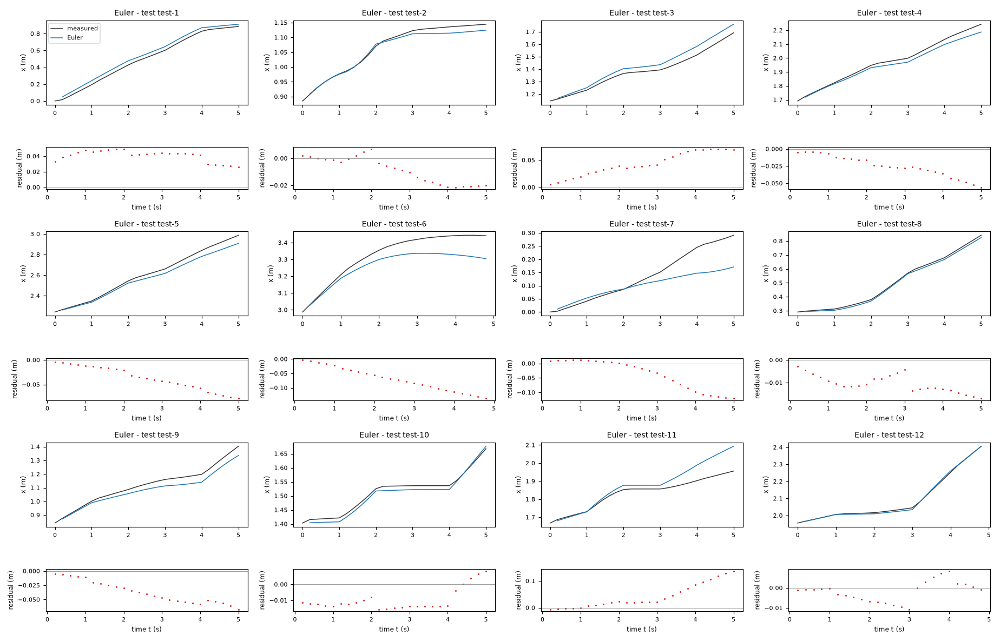
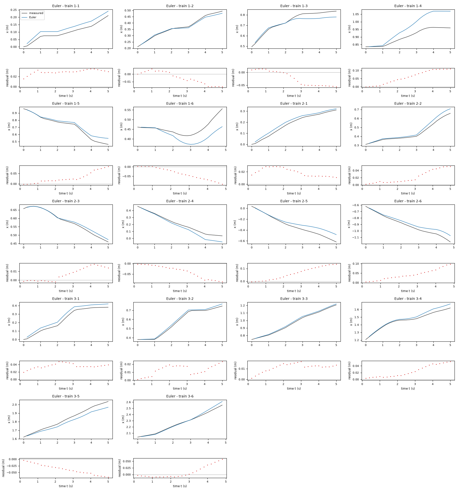
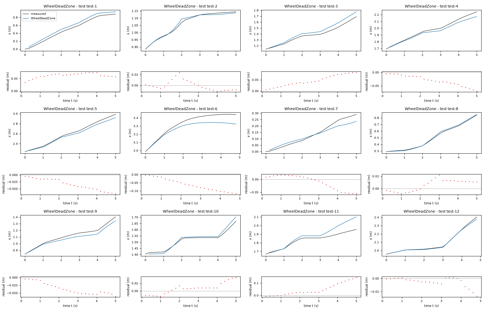
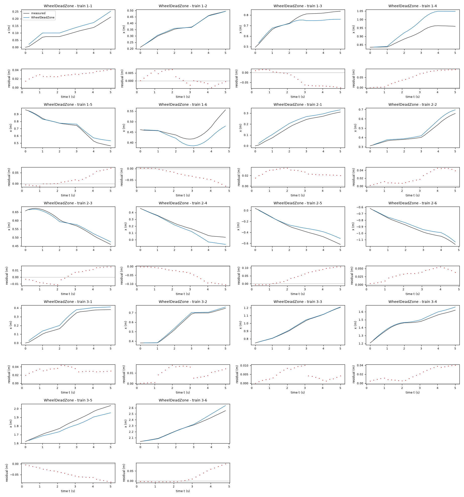
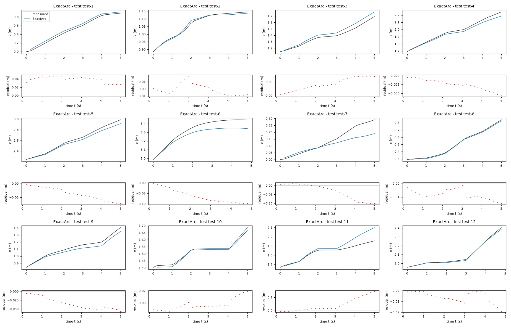
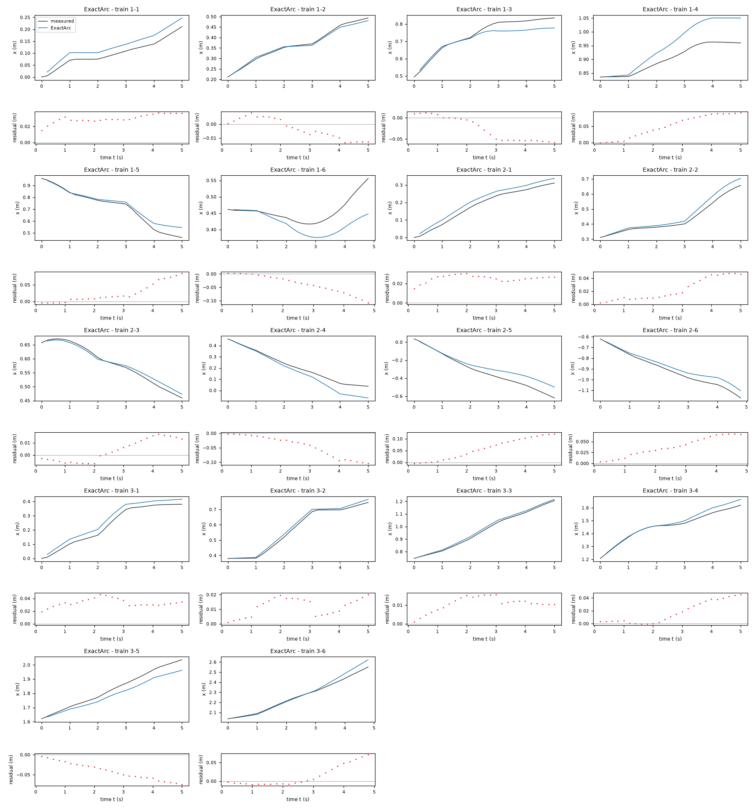
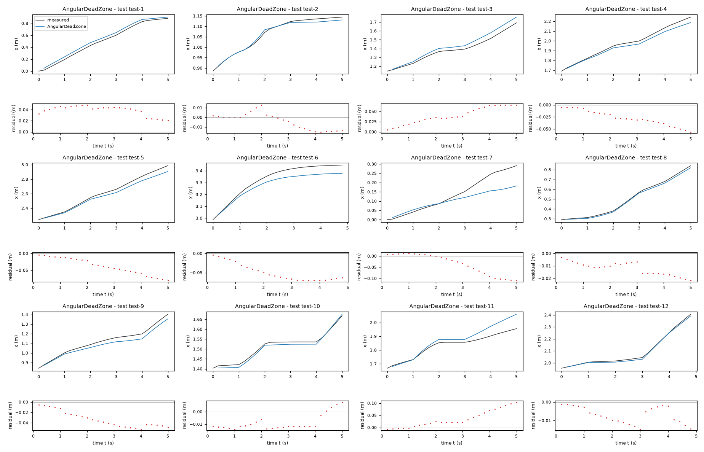
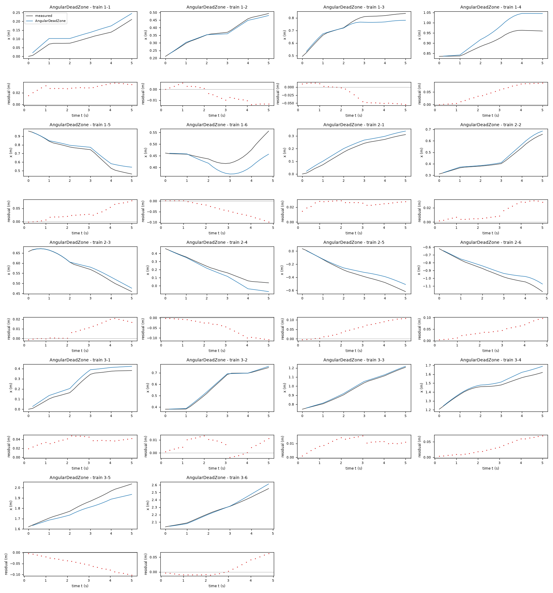

Motion model of a TurtleBot 2 mobile robot – run 2 of 5
Generated: 2026-10-07 23:51 UTC
Finished by the agent after 29 turns, 452 s of execution time and 1.33 USD. 4 models delivered, 4 evaluated.
1 Models
| Model | Fitted parameters | Training error of x (m) | Test error of x (m) | |
|---|---|---|---|---|
| Euler | 2 | 0.03965 | 0.04369 | recommended by the agent |
| WheelDeadZone | 5 | 0.03714 | 0.04286 | |
| ExactArc | 3 | 0.03864 | 0.04082 | |
| AngularDeadZone | 5 | 0.03944 | 0.03746 | lowest test error |
The models are listed in the agent's order. Errors: root mean squared error between simulated and measured x, in m. Training data: 18 segments of 25 to 26 samples (447 scored samples); the harness cuts the training trajectories into segments of at most 25 simulated samples, the length of the test trajectories, so that the two errors are comparable. Test data, which the agent cannot access: 12 trajectories of 25 to 26 samples (298 scored samples). The agent recommends a model from the training data. The model with the lowest test error is found with the test data, in hindsight, among the 4 models of this run; the agent could not make this choice.
x RMSE among the tested family/criterion combinations (approximately 0.0291 m across all held-out windows in data/train.csv). It is translation invariant, compact and finite. The nonlinear alternatives explain settled-command residuals but do not consistently improve held-out x simulation. These validation windows overlap and involve only three trajectories, so the small differences are uncertain; this is not a claim about hidden test performance.Ts = 0.2 s (fixed), gv = 0.8323 (fitted), gw = 0.7826 (fitted)x: 0.03965 m · test error: 0.04369 mEquations as written in the model file
x_next = x + Ts*gv*v_f*cos(phi)
y_next = y + Ts*gv*v_f*sin(phi)
phi_next = phi + Ts*gw*v_a
Equations with the values substituted
Every parameter is replaced by its value with 4 significant digits.
Parameters and estimation
| Name | Value | Unit | Type | Description |
|---|---|---|---|---|
Ts | 0.2 | s | fixed | Sampling period supplied in TASK.md; fixed because the timestamps are equally spaced. |
gv | 0.832268 | - | fitted | Forward-command scale, estimated jointly in this candidate; not imported from another fit. |
gw | 0.782577 | - | fitted | Angular-command scale, estimated jointly in this candidate; not imported from another fit. |
- Criterion minimized
Minimize the sum of squared
xprediction errors at every step of every complete 25-transition open-loop window; no heading orypenalty. This directly matches the scored output and intended 5 s horizon. The two coefficients are sufficiently excited by the varied commands and headings; this estimator had the lowest pooled leave-one-trajectory-outxRMSE of the tested settings.- Data
data/train.csv, all three trajectories and all 450 logged samples. Each trajectory is separate. Construct every complete overlapping window of 25 transitions (5 s), starting at sample indices 0 through 124: 125 windows per trajectory, 375 windows total. No window crosses a trajectory boundary. Each window starts from its logged pose; subsequent predictions use only simulated states. Unwrapphiwithin each trajectory before fitting; trigonometric position predictions are invariant to full turns. No rows are excluded. These windows target the intended simulation duration without treating noisy measured differences as exact velocities.- Method
Bound-constrained nonlinear least squares with
scipy.optimize.least_squares, trust-region reflective algorithm (), finite-difference Jacobian, linear squared-error loss, , andftol = xtol = gtol = 1e-10(dimensionless stopping tolerances). All fitted parameters were estimated together in one step in this final candidate; there is no parameter transfer. Starting values: , . They come from diagnostic settled-command gains and small plausible offsets/thresholds, not held-out data. Bounds: , . Bounds enforce positive gains, moderate offsets and nondegenerate geometry while allowing timing adjustment; they are chosen constraints, not inferred confidence intervals. Nonlinear least squares is used because repeated state simulation and dead-zone/trigonometric terms depend nonlinearly on the coefficients; ordinary linear regression cannot optimize this rollout criterion. The procedure is deterministic and uses no random seed.gvandgware dimensionless;bwis in rad/s; angulardzis in rad/s; wheel-modeldzis in m/s;ellis in m;qis dimensionless, when present. For estimator comparison, refit from the same numerical starting values on each pair of trajectories and predict the third; the final reported coefficients use all three trajectories.- Script
deliver.py
The agent's explanation
Unicycle/differential-drive kinematic model; see Steven M. LaValle, Planning Algorithms (2006), cited from memory without checking the book. Forward-Euler discretization.
and add scaled commanded travel along the current heading; accumulates scaled angular command. Ts is the sampling period, gv the forward gain and gw the angular gain. Both gains absorb unresolved calibration and timing effects; they are not ideal chassis constants.
The translation-invariant terms x and y, the projection operators cos and sin, and heading accumulation came from planar differential-drive kinematics, not symbolic search. Initial diagnostics used within-trajectory pose differences and command-block phase. I compared Euler, constant-twist arc, affine bias, free phase, odd cubic, smooth dead-zone, angular/forward coupling, heading harmonics and lateral-slip structures. Sparse angular regression was diagnostic only; no genetic symbolic-regression search was used. Residuals were much larger at command changes and correlated within blocks, so final parameters were fitted to multi-step trajectories rather than one-step derivatives. This is the minimal baseline; projection uses the current heading rather than an assumed exact command response within the sample. Its small parameter count and held-out x error favor it despite inferior one-step heading residuals.
Training commands satisfy approximately m/s and rad/s, computed on all training rows. Reverse motion and larger commands are not validated. Pose noise, actuator calibration drift and slip cannot be separated with these data. The expressions contain no previous command or actuator state: they cannot reproduce observed command carryover. Calibration coefficients are effective open-loop predictors, not uniquely identified mechanical parameters. Long-duration accuracy is not established by the 5 s fitting criterion. phi_next is deliberately unwrapped; periodic sine and cosine make position updates valid across heading wraps.
Plots of simulated and measured x, and errors per trajectory


| Data | Trajectory | Scored samples | RMSE | NRMSE | R² | Failure |
|---|---|---|---|---|---|---|
| training data | 1-1 | 25 of 25 | 0.02957 | 0.5803 | 0.6633 | none |
| training data | 1-2 | 25 of 25 | 0.0093 | 0.1208 | 0.9854 | none |
| training data | 1-3 | 25 of 25 | 0.03568 | 0.3937 | 0.845 | none |
| training data | 1-4 | 25 of 25 | 0.07117 | 1.43 | -1.044 | none |
| training data | 1-5 | 25 of 25 | 0.03927 | 0.2632 | 0.9307 | none |
| training data | 1-6 | 24 of 24 | 0.04715 | 1.3 | -0.6889 | none |
| training data | 2-1 | 25 of 25 | 0.02049 | 0.2169 | 0.953 | none |
| training data | 2-2 | 25 of 25 | 0.02791 | 0.2722 | 0.9259 | none |
| training data | 2-3 | 25 of 25 | 0.01001 | 0.1458 | 0.9787 | none |
| training data | 2-4 | 25 of 25 | 0.04806 | 0.3725 | 0.8612 | none |
| training data | 2-5 | 25 of 25 | 0.07887 | 0.4422 | 0.8044 | none |
| training data | 2-6 | 24 of 24 | 0.05029 | 0.3477 | 0.8791 | none |
| training data | 3-1 | 25 of 25 | 0.03686 | 0.284 | 0.9193 | none |
| training data | 3-2 | 25 of 25 | 0.01433 | 0.1044 | 0.9891 | none |
| training data | 3-3 | 25 of 25 | 0.01191 | 0.08257 | 0.9932 | none |
| training data | 3-4 | 25 of 25 | 0.02941 | 0.2941 | 0.9135 | none |
| training data | 3-5 | 25 of 25 | 0.04211 | 0.3395 | 0.8847 | none |
| training data | 3-6 | 24 of 24 | 0.02356 | 0.1516 | 0.977 | none |
| test data | test-1 | 25 of 25 | 0.04114 | 0.147 | 0.9784 | none |
| test data | test-2 | 25 of 25 | 0.01287 | 0.1681 | 0.9717 | none |
| test data | test-3 | 25 of 25 | 0.04769 | 0.3261 | 0.8937 | none |
| test data | test-4 | 25 of 25 | 0.0294 | 0.1956 | 0.9617 | none |
| test data | test-5 | 25 of 25 | 0.04396 | 0.1972 | 0.9611 | none |
| test data | test-6 | 24 of 24 | 0.08075 | 0.6421 | 0.5877 | none |
| test data | test-7 | 25 of 25 | 0.06193 | 0.6681 | 0.5537 | none |
| test data | test-8 | 25 of 25 | 0.01103 | 0.06123 | 0.9963 | none |
| test data | test-9 | 25 of 25 | 0.04175 | 0.3155 | 0.9004 | none |
| test data | test-10 | 25 of 25 | 0.01197 | 0.1762 | 0.969 | none |
| test data | test-11 | 25 of 25 | 0.06079 | 0.7773 | 0.3957 | none |
| test data | test-12 | 24 of 24 | 0.005344 | 0.04016 | 0.9984 | none |
RMSE of x in m; NRMSE = RMSE / σ and R² = 1 − SSE / Σ(y[k] − μ)², with μ and σ the mean and the population standard deviation of the measured output on the scored samples.
Ts = 0.2 s (fixed), gv = 0.915 (fitted), gw = 0.7715 (fitted), ell = 0.1349 m (fitted), dz = 0.0136 m/s (fitted), bw = 0.009003 rad/s (fitted), eps = 1e-07 rad (fixed)x: 0.03714 m · test error: 0.04286 mEquations as written in the model file
x_next = x + Ts*(gv*(sign(v_f+ell*v_a)*Max(Abs(v_f+ell*v_a)-dz,0)+sign(v_f-ell*v_a)*Max(Abs(v_f-ell*v_a)-dz,0))/2)*Piecewise((1, Abs((Ts*(gw*(sign(v_f+ell*v_a)*Max(Abs(v_f+ell*v_a)-dz,0)-sign(v_f-ell*v_a)*Max(Abs(v_f-ell*v_a)-dz,0))/(2*ell)+bw))) < eps), (sin((Ts*(gw*(sign(v_f+ell*v_a)*Max(Abs(v_f+ell*v_a)-dz,0)-sign(v_f-ell*v_a)*Max(Abs(v_f-ell*v_a)-dz,0))/(2*ell)+bw))/2)/((Ts*(gw*(sign(v_f+ell*v_a)*Max(Abs(v_f+ell*v_a)-dz,0)-sign(v_f-ell*v_a)*Max(Abs(v_f-ell*v_a)-dz,0))/(2*ell)+bw))/2), True))*cos(phi + (Ts*(gw*(sign(v_f+ell*v_a)*Max(Abs(v_f+ell*v_a)-dz,0)-sign(v_f-ell*v_a)*Max(Abs(v_f-ell*v_a)-dz,0))/(2*ell)+bw))/2)
y_next = y + Ts*(gv*(sign(v_f+ell*v_a)*Max(Abs(v_f+ell*v_a)-dz,0)+sign(v_f-ell*v_a)*Max(Abs(v_f-ell*v_a)-dz,0))/2)*Piecewise((1, Abs((Ts*(gw*(sign(v_f+ell*v_a)*Max(Abs(v_f+ell*v_a)-dz,0)-sign(v_f-ell*v_a)*Max(Abs(v_f-ell*v_a)-dz,0))/(2*ell)+bw))) < eps), (sin((Ts*(gw*(sign(v_f+ell*v_a)*Max(Abs(v_f+ell*v_a)-dz,0)-sign(v_f-ell*v_a)*Max(Abs(v_f-ell*v_a)-dz,0))/(2*ell)+bw))/2)/((Ts*(gw*(sign(v_f+ell*v_a)*Max(Abs(v_f+ell*v_a)-dz,0)-sign(v_f-ell*v_a)*Max(Abs(v_f-ell*v_a)-dz,0))/(2*ell)+bw))/2), True))*sin(phi + (Ts*(gw*(sign(v_f+ell*v_a)*Max(Abs(v_f+ell*v_a)-dz,0)-sign(v_f-ell*v_a)*Max(Abs(v_f-ell*v_a)-dz,0))/(2*ell)+bw))/2)
phi_next = phi + (Ts*(gw*(sign(v_f+ell*v_a)*Max(Abs(v_f+ell*v_a)-dz,0)-sign(v_f-ell*v_a)*Max(Abs(v_f-ell*v_a)-dz,0))/(2*ell)+bw))
Equations with the values substituted
Every parameter is replaced by its value with 4 significant digits.
Parameters and estimation
| Name | Value | Unit | Type | Description |
|---|---|---|---|---|
Ts | 0.2 | s | fixed | Sampling period supplied in TASK.md; fixed because the timestamps are equally spaced. |
gv | 0.915042 | - | fitted | Forward-command scale, estimated jointly in this candidate; not imported from another fit. |
gw | 0.771541 | - | fitted | Angular-command scale, estimated jointly in this candidate; not imported from another fit. |
ell | 0.134856 | m | fitted | Effective half wheel separation in command-to-wheel-speed conversion, jointly estimated; not claimed to be the measured chassis geometry. |
dz | 0.0136021 | m/s | fitted | Symmetric static dead-zone threshold, estimated jointly with the other fitted parameters. |
bw | 0.00900298 | rad/s | fitted | Constant angular-response offset, estimated jointly with all other fitted coefficients. |
eps | 1e-07 | rad | fixed | Fixed numerical small-turn cutoff for the continuous zero-rate limit, chosen to avoid zero division; below this cutoff the sinc-factor error is less than 5e-16, dimensionless, by its Taylor expansion. This is not fitted. |
- Criterion minimized
Minimize the sum, over every step of every complete 25-transition window, of squared
xerror plus squared heading error multiplied by . Here the fixed heading weight is 0.15 m/rad;yhas zero weight. This emphasizes the scoredxoutput but regularizes angular calibration using measured heading. The weight was selected from the three explicitly tested choices (equalx/yweights with 0.3 m/rad heading weight,xonly, andxwith 0.15 m/rad heading weight), judged using held-out whole trajectories and parsimony.- Data
data/train.csv, all three trajectories and all 450 logged samples. Each trajectory is separate. Construct every complete overlapping window of 25 transitions (5 s), starting at sample indices 0 through 124: 125 windows per trajectory, 375 windows total. No window crosses a trajectory boundary. Each window starts from its logged pose; subsequent predictions use only simulated states. Unwrapphiwithin each trajectory before fitting; trigonometric position predictions are invariant to full turns. No rows are excluded. These windows target the intended simulation duration without treating noisy measured differences as exact velocities.- Method
Bound-constrained nonlinear least squares with
scipy.optimize.least_squares, trust-region reflective algorithm (), finite-difference Jacobian, linear squared-error loss, , andftol = xtol = gtol = 1e-10(dimensionless stopping tolerances). All fitted parameters were estimated together in one step in this final candidate; there is no parameter transfer. Starting values: , , m, m/s, rad/s. They come from diagnostic settled-command gains and small plausible offsets/thresholds, not held-out data. Bounds: , , m, m/s, rad/s. Bounds enforce positive gains, moderate offsets and nondegenerate geometry while allowing timing adjustment; they are chosen constraints, not inferred confidence intervals. Nonlinear least squares is used because repeated state simulation and dead-zone/trigonometric terms depend nonlinearly on the coefficients; ordinary linear regression cannot optimize this rollout criterion. The procedure is deterministic and uses no random seed.gvandgware dimensionless;bwis in rad/s; angulardzis in rad/s; wheel-modeldzis in m/s;ellis in m;qis dimensionless, when present. For estimator comparison, refit from the same numerical starting values on each pair of trajectories and predict the third; the final reported coefficients use all three trajectories.- Script
deliver.py
The agent's explanation
Differential-drive inverse kinematics, symmetric wheel-speed dead zones, and constant-twist arc integration. Unicycle/differential-drive kinematic model; see Steven M. LaValle, Planning Algorithms (2006), cited from memory without checking the book.
The virtual right and left wheel speeds are and , where ell is effective half wheel separation. Each uses or . Their average times gv drives translation; their difference times plus bw drives rotation. Constant-twist midpoint direction and sinc chord scaling then integrate the resulting twist. dz is an effective virtual-wheel speed threshold, not the angular threshold of the other nonlinear candidate. ell, dz and gains may trade off, since actual wheel-speed observations are absent.
The translation-invariant terms x and y, the projection operators cos and sin, and heading accumulation came from planar differential-drive kinematics, not symbolic search. Initial diagnostics used within-trajectory pose differences and command-block phase. I compared Euler, constant-twist arc, affine bias, free phase, odd cubic, smooth dead-zone, angular/forward coupling, heading harmonics and lateral-slip structures. Sparse angular regression was diagnostic only; no genetic symbolic-regression search was used. Residuals were much larger at command changes and correlated within blocks, so final parameters were fitted to multi-step trajectories rather than one-step derivatives. A forward/angular coupling diagnostic suggested that independent angular dead zones might miss wheel-level interactions. The derived virtual wheel commands and motivated applying the same threshold to each wheel. This is a physical-structure hypothesis, not a direct measurement of either wheel or a searched algebraic expression. All three trajectories excite these virtual commands; retain the model as a modest nonlinear alternative, not as a proven motor friction law.
Training commands satisfy approximately m/s and rad/s, computed on all training rows. Reverse motion and larger commands are not validated. Pose noise, actuator calibration drift and slip cannot be separated with these data. The expressions contain no previous command or actuator state: they cannot reproduce observed command carryover. Calibration coefficients are effective open-loop predictors, not uniquely identified mechanical parameters. Long-duration accuracy is not established by the 5 s fitting criterion. phi_next is deliberately unwrapped; periodic sine and cosine make position updates valid across heading wraps.
Plots of simulated and measured x, and errors per trajectory


| Data | Trajectory | Scored samples | RMSE | NRMSE | R² | Failure |
|---|---|---|---|---|---|---|
| training data | 1-1 | 25 of 25 | 0.03032 | 0.595 | 0.646 | none |
| training data | 1-2 | 25 of 25 | 0.003749 | 0.04869 | 0.9976 | none |
| training data | 1-3 | 25 of 25 | 0.04772 | 0.5266 | 0.7227 | none |
| training data | 1-4 | 25 of 25 | 0.05917 | 1.189 | -0.413 | none |
| training data | 1-5 | 25 of 25 | 0.03195 | 0.2142 | 0.9541 | none |
| training data | 1-6 | 24 of 24 | 0.03609 | 0.9946 | 0.01069 | none |
| training data | 2-1 | 25 of 25 | 0.02619 | 0.2772 | 0.9232 | none |
| training data | 2-2 | 25 of 25 | 0.02668 | 0.2602 | 0.9323 | none |
| training data | 2-3 | 25 of 25 | 0.009548 | 0.1391 | 0.9807 | none |
| training data | 2-4 | 25 of 25 | 0.05702 | 0.442 | 0.8047 | none |
| training data | 2-5 | 25 of 25 | 0.06296 | 0.353 | 0.8754 | none |
| training data | 2-6 | 24 of 24 | 0.03619 | 0.2502 | 0.9374 | none |
| training data | 3-1 | 25 of 25 | 0.03254 | 0.2508 | 0.9371 | none |
| training data | 3-2 | 25 of 25 | 0.01118 | 0.08151 | 0.9934 | none |
| training data | 3-3 | 25 of 25 | 0.005406 | 0.03749 | 0.9986 | none |
| training data | 3-4 | 25 of 25 | 0.02379 | 0.2379 | 0.9434 | none |
| training data | 3-5 | 25 of 25 | 0.05139 | 0.4143 | 0.8284 | none |
| training data | 3-6 | 24 of 24 | 0.03684 | 0.2371 | 0.9438 | none |
| test data | test-1 | 25 of 25 | 0.06341 | 0.2265 | 0.9487 | none |
| test data | test-2 | 25 of 25 | 0.00909 | 0.1187 | 0.9859 | none |
| test data | test-3 | 25 of 25 | 0.05229 | 0.3575 | 0.8722 | none |
| test data | test-4 | 25 of 25 | 0.03583 | 0.2384 | 0.9432 | none |
| test data | test-5 | 25 of 25 | 0.03939 | 0.1767 | 0.9688 | none |
| test data | test-6 | 24 of 24 | 0.07152 | 0.5687 | 0.6766 | none |
| test data | test-7 | 25 of 25 | 0.02898 | 0.3126 | 0.9023 | none |
| test data | test-8 | 25 of 25 | 0.01073 | 0.0596 | 0.9964 | none |
| test data | test-9 | 25 of 25 | 0.04023 | 0.304 | 0.9076 | none |
| test data | test-10 | 25 of 25 | 0.01538 | 0.2265 | 0.9487 | none |
| test data | test-11 | 25 of 25 | 0.06656 | 0.8511 | 0.2757 | none |
| test data | test-12 | 24 of 24 | 0.008865 | 0.06661 | 0.9956 | none |
RMSE of x in m; NRMSE = RMSE / σ and R² = 1 − SSE / Σ(y[k] − μ)², with μ and σ the mean and the population standard deviation of the measured output on the scored samples.
Ts = 0.2 s (fixed), gv = 0.8313 (fitted), gw = 0.7361 (fitted), bw = 0.007718 rad/s (fitted), eps = 1e-07 rad (fixed)x: 0.03864 m · test error: 0.04082 mEquations as written in the model file
x_next = x + Ts*(gv*v_f)*Piecewise((1, Abs((Ts*(gw*v_a+bw))) < eps), (sin((Ts*(gw*v_a+bw))/2)/((Ts*(gw*v_a+bw))/2), True))*cos(phi + (Ts*(gw*v_a+bw))/2)
y_next = y + Ts*(gv*v_f)*Piecewise((1, Abs((Ts*(gw*v_a+bw))) < eps), (sin((Ts*(gw*v_a+bw))/2)/((Ts*(gw*v_a+bw))/2), True))*sin(phi + (Ts*(gw*v_a+bw))/2)
phi_next = phi + (Ts*(gw*v_a+bw))
Equations with the values substituted
Every parameter is replaced by its value with 4 significant digits.
Parameters and estimation
| Name | Value | Unit | Type | Description |
|---|---|---|---|---|
Ts | 0.2 | s | fixed | Sampling period supplied in TASK.md; fixed because the timestamps are equally spaced. |
gv | 0.831318 | - | fitted | Forward-command scale, estimated jointly in this candidate; not imported from another fit. |
gw | 0.736074 | - | fitted | Angular-command scale, estimated jointly in this candidate; not imported from another fit. |
bw | 0.00771845 | rad/s | fitted | Constant angular-response offset, estimated jointly with all other fitted coefficients. |
eps | 1e-07 | rad | fixed | Fixed numerical small-turn cutoff for the continuous zero-rate limit, chosen to avoid zero division; below this cutoff the sinc-factor error is less than 5e-16, dimensionless, by its Taylor expansion. This is not fitted. |
- Criterion minimized
Minimize the sum, over every step of every complete 25-transition window, of squared
xerror plus squared heading error multiplied by . Here the fixed heading weight is 0.15 m/rad;yhas zero weight. This emphasizes the scoredxoutput but regularizes angular calibration using measured heading. The weight was selected from the three explicitly tested choices (equalx/yweights with 0.3 m/rad heading weight,xonly, andxwith 0.15 m/rad heading weight), judged using held-out whole trajectories and parsimony.- Data
data/train.csv, all three trajectories and all 450 logged samples. Each trajectory is separate. Construct every complete overlapping window of 25 transitions (5 s), starting at sample indices 0 through 124: 125 windows per trajectory, 375 windows total. No window crosses a trajectory boundary. Each window starts from its logged pose; subsequent predictions use only simulated states. Unwrapphiwithin each trajectory before fitting; trigonometric position predictions are invariant to full turns. No rows are excluded. These windows target the intended simulation duration without treating noisy measured differences as exact velocities.- Method
Bound-constrained nonlinear least squares with
scipy.optimize.least_squares, trust-region reflective algorithm (), finite-difference Jacobian, linear squared-error loss, , andftol = xtol = gtol = 1e-10(dimensionless stopping tolerances). All fitted parameters were estimated together in one step in this final candidate; there is no parameter transfer. Starting values: , , rad/s. They come from diagnostic settled-command gains and small plausible offsets/thresholds, not held-out data. Bounds: , , rad/s. Bounds enforce positive gains, moderate offsets and nondegenerate geometry while allowing timing adjustment; they are chosen constraints, not inferred confidence intervals. Nonlinear least squares is used because repeated state simulation and dead-zone/trigonometric terms depend nonlinearly on the coefficients; ordinary linear regression cannot optimize this rollout criterion. The procedure is deterministic and uses no random seed.gvandgware dimensionless;bwis in rad/s; angulardzis in rad/s; wheel-modeldzis in m/s;ellis in m;qis dimensionless, when present. For estimator comparison, refit from the same numerical starting values on each pair of trajectories and predict the third; the final reported coefficients use all three trajectories.- Script
deliver.py
The agent's explanation
Unicycle/differential-drive kinematic model; see Steven M. LaValle, Planning Algorithms (2006), cited from memory without checking the book. Zero-order-hold exact constant-twist integration with affine angular calibration.
is forward speed and is angular speed; bw shifts angular response uniformly. Translation uses the midpoint angle and the chord-length factor . The Piecewise branch substitutes the continuous zero-turn limit 1 below the numerical threshold eps. This integration is exact for an ideal constant body twist over Ts, not for the observed delayed actuator response.
The translation-invariant terms x and y, the projection operators cos and sin, and heading accumulation came from planar differential-drive kinematics, not symbolic search. Initial diagnostics used within-trajectory pose differences and command-block phase. I compared Euler, constant-twist arc, affine bias, free phase, odd cubic, smooth dead-zone, angular/forward coupling, heading harmonics and lateral-slip structures. Sparse angular regression was diagnostic only; no genetic symbolic-regression search was used. Residuals were much larger at command changes and correlated within blocks, so final parameters were fitted to multi-step trajectories rather than one-step derivatives. The within-step arc and an additive angular offset were physically motivated alternatives to Euler. The offset was retained because it reduced full-trajectory heading drift in training, although its held-out 5 s benefit is not decisive.
Training commands satisfy approximately m/s and rad/s, computed on all training rows. Reverse motion and larger commands are not validated. Pose noise, actuator calibration drift and slip cannot be separated with these data. The expressions contain no previous command or actuator state: they cannot reproduce observed command carryover. Calibration coefficients are effective open-loop predictors, not uniquely identified mechanical parameters. Long-duration accuracy is not established by the 5 s fitting criterion. phi_next is deliberately unwrapped; periodic sine and cosine make position updates valid across heading wraps.
Plots of simulated and measured x, and errors per trajectory


| Data | Trajectory | Scored samples | RMSE | NRMSE | R² | Failure |
|---|---|---|---|---|---|---|
| training data | 1-1 | 25 of 25 | 0.03025 | 0.5936 | 0.6477 | none |
| training data | 1-2 | 25 of 25 | 0.007616 | 0.09891 | 0.9902 | none |
| training data | 1-3 | 25 of 25 | 0.03741 | 0.4128 | 0.8296 | none |
| training data | 1-4 | 25 of 25 | 0.06047 | 1.215 | -0.4756 | none |
| training data | 1-5 | 25 of 25 | 0.03766 | 0.2524 | 0.9363 | none |
| training data | 1-6 | 24 of 24 | 0.04958 | 1.367 | -0.8674 | none |
| training data | 2-1 | 25 of 25 | 0.02555 | 0.2704 | 0.9269 | none |
| training data | 2-2 | 25 of 25 | 0.02797 | 0.2728 | 0.9256 | none |
| training data | 2-3 | 25 of 25 | 0.009692 | 0.1412 | 0.9801 | none |
| training data | 2-4 | 25 of 25 | 0.05687 | 0.4408 | 0.8057 | none |
| training data | 2-5 | 25 of 25 | 0.07258 | 0.4069 | 0.8344 | none |
| training data | 2-6 | 24 of 24 | 0.04365 | 0.3018 | 0.9089 | none |
| training data | 3-1 | 25 of 25 | 0.03392 | 0.2614 | 0.9317 | none |
| training data | 3-2 | 25 of 25 | 0.01329 | 0.0969 | 0.9906 | none |
| training data | 3-3 | 25 of 25 | 0.01151 | 0.0798 | 0.9936 | none |
| training data | 3-4 | 25 of 25 | 0.02426 | 0.2426 | 0.9412 | none |
| training data | 3-5 | 25 of 25 | 0.0459 | 0.37 | 0.8631 | none |
| training data | 3-6 | 24 of 24 | 0.03023 | 0.1945 | 0.9622 | none |
| test data | test-1 | 25 of 25 | 0.04001 | 0.1429 | 0.9796 | none |
| test data | test-2 | 25 of 25 | 0.007627 | 0.09959 | 0.9901 | none |
| test data | test-3 | 25 of 25 | 0.04885 | 0.334 | 0.8885 | none |
| test data | test-4 | 25 of 25 | 0.0291 | 0.1936 | 0.9625 | none |
| test data | test-5 | 25 of 25 | 0.04219 | 0.1893 | 0.9642 | none |
| test data | test-6 | 24 of 24 | 0.06983 | 0.5553 | 0.6917 | none |
| test data | test-7 | 25 of 25 | 0.05296 | 0.5713 | 0.6736 | none |
| test data | test-8 | 25 of 25 | 0.008968 | 0.04979 | 0.9975 | none |
| test data | test-9 | 25 of 25 | 0.03823 | 0.2888 | 0.9166 | none |
| test data | test-10 | 25 of 25 | 0.009738 | 0.1434 | 0.9794 | none |
| test data | test-11 | 25 of 25 | 0.06328 | 0.8092 | 0.3452 | none |
| test data | test-12 | 24 of 24 | 0.007822 | 0.05877 | 0.9965 | none |
RMSE of x in m; NRMSE = RMSE / σ and R² = 1 − SSE / Σ(y[k] − μ)², with μ and σ the mean and the population standard deviation of the measured output on the scored samples.
Ts = 0.2 s (fixed), gv = 0.8265 (fitted), gw = 0.8529 (fitted), dz = 0.07179 rad/s (fitted), bw = 0.00768 rad/s (fitted), q = -0.02105 (fitted)x: 0.03944 m · test error: 0.03746 mEquations as written in the model file
x_next = x + Ts*gv*v_f*cos(phi + q*Ts*(gw*sign(v_a)*Max(Abs(v_a)-dz,0)+bw))
y_next = y + Ts*gv*v_f*sin(phi + q*Ts*(gw*sign(v_a)*Max(Abs(v_a)-dz,0)+bw))
phi_next = phi + Ts*(gw*sign(v_a)*Max(Abs(v_a)-dz,0)+bw)
Equations with the values substituted
Every parameter is replaced by its value with 4 significant digits.
Parameters and estimation
| Name | Value | Unit | Type | Description |
|---|---|---|---|---|
Ts | 0.2 | s | fixed | Sampling period supplied in TASK.md; fixed because the timestamps are equally spaced. |
gv | 0.826468 | - | fitted | Forward-command scale, estimated jointly in this candidate; not imported from another fit. |
gw | 0.852905 | - | fitted | Angular-command scale, estimated jointly in this candidate; not imported from another fit. |
dz | 0.0717935 | rad/s | fitted | Symmetric static dead-zone threshold, estimated jointly with the other fitted parameters. |
bw | 0.00768007 | rad/s | fitted | Constant angular-response offset, estimated jointly with all other fitted coefficients. |
q | -0.0210457 | - | fitted | Effective within-step angular phase fraction, estimated jointly; accounts mathematically for position/heading timing mismatch without adding command memory. |
- Criterion minimized
Minimize the sum, over every step of every complete 25-transition window, of squared
xerror plus squared heading error multiplied by . Here the fixed heading weight is 0.15 m/rad;yhas zero weight. This emphasizes the scoredxoutput but regularizes angular calibration using measured heading. The weight was selected from the three explicitly tested choices (equalx/yweights with 0.3 m/rad heading weight,xonly, andxwith 0.15 m/rad heading weight), judged using held-out whole trajectories and parsimony.- Data
data/train.csv, all three trajectories and all 450 logged samples. Each trajectory is separate. Construct every complete overlapping window of 25 transitions (5 s), starting at sample indices 0 through 124: 125 windows per trajectory, 375 windows total. No window crosses a trajectory boundary. Each window starts from its logged pose; subsequent predictions use only simulated states. Unwrapphiwithin each trajectory before fitting; trigonometric position predictions are invariant to full turns. No rows are excluded. These windows target the intended simulation duration without treating noisy measured differences as exact velocities.- Method
Bound-constrained nonlinear least squares with
scipy.optimize.least_squares, trust-region reflective algorithm (), finite-difference Jacobian, linear squared-error loss, , andftol = xtol = gtol = 1e-10(dimensionless stopping tolerances). All fitted parameters were estimated together in one step in this final candidate; there is no parameter transfer. Starting values: , , rad/s, rad/s, . They come from diagnostic settled-command gains and small plausible offsets/thresholds, not held-out data. Bounds: , , rad/s, rad/s, . Bounds enforce positive gains, moderate offsets and nondegenerate geometry while allowing timing adjustment; they are chosen constraints, not inferred confidence intervals. Nonlinear least squares is used because repeated state simulation and dead-zone/trigonometric terms depend nonlinearly on the coefficients; ordinary linear regression cannot optimize this rollout criterion. The procedure is deterministic and uses no random seed.gvandgware dimensionless;bwis in rad/s; angulardzis in rad/s; wheel-modeldzis in m/s;ellis in m;qis dimensionless, when present. For estimator comparison, refit from the same numerical starting values on each pair of trajectories and predict the third; the final reported coefficients use all three trajectories.- Script
deliver.py
The agent's explanation
Static symmetric dead-zone command nonlinearity followed by a generalized midpoint unicycle update. Unicycle/differential-drive kinematic model; see Steven M. LaValle, Planning Algorithms (2006), cited from memory without checking the book.
is angular response: commands inside threshold dz contribute no command-driven rotation, while excess magnitude is scaled by gw; bw supplies a constant offset. is forward response. Position projection uses ; q shifts the effective direction within the discrete update. Heading accumulates the full angular increment. This model uses midpoint-type quadrature, without exact arc chord correction.
The translation-invariant terms x and y, the projection operators cos and sin, and heading accumulation came from planar differential-drive kinematics, not symbolic search. Initial diagnostics used within-trajectory pose differences and command-block phase. I compared Euler, constant-twist arc, affine bias, free phase, odd cubic, smooth dead-zone, angular/forward coupling, heading harmonics and lateral-slip structures. Sparse angular regression was diagnostic only; no genetic symbolic-regression search was used. Residuals were much larger at command changes and correlated within blocks, so final parameters were fitted to multi-step trajectories rather than one-step derivatives. Settled angular increments were suppressed near small ; this motivated , not a blind symbolic search. A fitted phase q was added after command-change residuals and the chord-angle diagnostic showed timing mismatch. Its fitted near-zero, slightly negative value is an empirical correction, not literal reverse time. This model is retained as a physically motivated nonlinear alternative despite somewhat worse held-out x performance than the simpler baseline.
Training commands satisfy approximately m/s and rad/s, computed on all training rows. Reverse motion and larger commands are not validated. Pose noise, actuator calibration drift and slip cannot be separated with these data. The expressions contain no previous command or actuator state: they cannot reproduce observed command carryover. Calibration coefficients are effective open-loop predictors, not uniquely identified mechanical parameters. Long-duration accuracy is not established by the 5 s fitting criterion. phi_next is deliberately unwrapped; periodic sine and cosine make position updates valid across heading wraps.
Plots of simulated and measured x, and errors per trajectory


| Data | Trajectory | Scored samples | RMSE | NRMSE | R² | Failure |
|---|---|---|---|---|---|---|
| training data | 1-1 | 25 of 25 | 0.03001 | 0.5889 | 0.6532 | none |
| training data | 1-2 | 25 of 25 | 0.008172 | 0.1061 | 0.9887 | none |
| training data | 1-3 | 25 of 25 | 0.03472 | 0.3832 | 0.8532 | none |
| training data | 1-4 | 25 of 25 | 0.05541 | 1.113 | -0.2393 | none |
| training data | 1-5 | 25 of 25 | 0.03935 | 0.2638 | 0.9304 | none |
| training data | 1-6 | 24 of 24 | 0.04944 | 1.363 | -0.8572 | none |
| training data | 2-1 | 25 of 25 | 0.02534 | 0.2682 | 0.928 | none |
| training data | 2-2 | 25 of 25 | 0.01708 | 0.1666 | 0.9723 | none |
| training data | 2-3 | 25 of 25 | 0.01195 | 0.1741 | 0.9697 | none |
| training data | 2-4 | 25 of 25 | 0.06012 | 0.466 | 0.7829 | none |
| training data | 2-5 | 25 of 25 | 0.06441 | 0.3611 | 0.8696 | none |
| training data | 2-6 | 24 of 24 | 0.05113 | 0.3535 | 0.875 | none |
| training data | 3-1 | 25 of 25 | 0.03788 | 0.2919 | 0.9148 | none |
| training data | 3-2 | 25 of 25 | 0.007716 | 0.05625 | 0.9968 | none |
| training data | 3-3 | 25 of 25 | 0.01096 | 0.07602 | 0.9942 | none |
| training data | 3-4 | 25 of 25 | 0.03897 | 0.3897 | 0.8481 | none |
| training data | 3-5 | 25 of 25 | 0.0594 | 0.4789 | 0.7706 | none |
| training data | 3-6 | 24 of 24 | 0.02625 | 0.1689 | 0.9715 | none |
| test data | test-1 | 25 of 25 | 0.03964 | 0.1416 | 0.9799 | none |
| test data | test-2 | 25 of 25 | 0.009123 | 0.1191 | 0.9858 | none |
| test data | test-3 | 25 of 25 | 0.04458 | 0.3047 | 0.9071 | none |
| test data | test-4 | 25 of 25 | 0.03113 | 0.2071 | 0.9571 | none |
| test data | test-5 | 25 of 25 | 0.04522 | 0.2029 | 0.9588 | none |
| test data | test-6 | 24 of 24 | 0.05399 | 0.4293 | 0.8157 | none |
| test data | test-7 | 25 of 25 | 0.05681 | 0.6128 | 0.6244 | none |
| test data | test-8 | 25 of 25 | 0.01309 | 0.07268 | 0.9947 | none |
| test data | test-9 | 25 of 25 | 0.03663 | 0.2768 | 0.9234 | none |
| test data | test-10 | 25 of 25 | 0.01079 | 0.1588 | 0.9748 | none |
| test data | test-11 | 25 of 25 | 0.04847 | 0.6198 | 0.6158 | none |
| test data | test-12 | 24 of 24 | 0.008413 | 0.06321 | 0.996 | none |
RMSE of x in m; NRMSE = RMSE / σ and R² = 1 − SSE / Σ(y[k] − μ)², with μ and σ the mean and the population standard deviation of the measured output on the scored samples.
2 Course of the run
The system prompt, TASK.md and FORMAT.md that the agent received are shown on the page of the experiment.
0:00Harness: opening message to the agent
10:14Read TASK.md0.01
5,474 input and 19 output tokens; 0.011 USD for this turn.
TASK.md
output as sent to the agent (3,738 characters, 37 lines)
[TASK.md: 3711 characters] # Task: Motion model of a TurtleBot 2 mobile robot ## 1 System and intended use A TurtleBot 2 differential-drive mobile robot moves on a flat floor. Its on-board odometry logs the pose of the robot: the position x, y and the heading phi. The robot receives two commands, the forward velocity v_f and the angular velocity v_a. Each pair of commands is held for 5 samples (1 s) and is then replaced by a new random pair. The logged pose is known to carry a considerable measurement error. The model will be used to simulate the x position of the robot over about 5 s from one logged pose and the sequence of commands, without correction by later pose measurements. ## 2 Data `data/train.csv` holds 450 samples: 3 trajectories of 150 consecutive samples; the column `trajectory` holds the trajectory number. Row k+1 of a trajectory is the sample that follows row k; different trajectories are separate experiments. The sampling period is T_s = 0.2 s. | Column | Role | Unit | Training range | Description | |---|---|---|---|---| | `x` | state, scored output | m | not declared | position | | `y` | state | m | not declared | position | | `phi` | state | rad | not declared | heading, wrapped to (-pi, pi]; phi = 0 points along the x axis | | `v_f` | input | m/s | not declared | forward velocity command | | `v_a` | input | rad/s | not declared | angular velocity command | ## 3 What you deliver A candidate is a discrete-time model of 3 closed-form expressions, `x_next`, `y_next` and `phi_next`: the states `x`, `y` and `phi` at sample k+1 as functions of `x`, `y`, `phi`, `v_f` and `v_a` at sample k. `FORMAT.md` states how an expression is written and what it may contain. Write one file per candidate, `models/<label>.json`; `FORMAT.md` describes the file and gives an example. Write also `models/pool.json`, which lists the labels of your candidates in the order in which they are to be evaluated. You can recommend one candidate that you consider the best-performing. `models/pool.json` then names that candidate and gives your reason. Run `python check_submission.py` to check your files: it prints every error with its location, so that you can correct it. At most 10 candidates are evaluated, in the order of `models/pool.json`. Consider various identification approaches, for example physically motivated structures, symbolic-regression search or sparse regression; before fitting, list the approaches and the model families you will try. Build the pool from structurally different model families, not from variations of one form. Examine the residuals of your best candidates and try structures that can represent what they show. Include only candidates you would defend as a model of the system. ## 4 Evaluation The harness, the software that runs this task, evaluates every candidate on test data that you cannot access. For each test trajectory it starts from the first logged state and applies the expressions repeatedly with the logged inputs; a simulated state is never replaced by a later measurement. The score is the root mean squared error (RMSE) between simulated and logged `x`, in m, over all test samples after the first of each trajectory. An evaluation fails when a value is not finite, when `x` leaves [-100, 100] m or `y` leaves [-100, 100] m or `phi` leaves [-1000, 1000] rad, or when it takes longer than 60 s. ## 5 Limits and completion One round: 60 turns, 3600 s of execution time, 10 USD; a turn is one response of yours. When the files pass the check, send the exact message DONE. If the harness's check of the files then fails, you receive its report and may correct the files once. If a limit ends the round earlier, the complete candidate files are evaluated.
20:16Read FORMAT.md; listed the files0.02
6,380 input and 47 output tokens; 0.013 USD for this turn.
FORMAT.md
output as sent to the agent (8,159 characters, 128 lines)
[FORMAT.md: 8130 characters]
# Model file format
This file is the same for every task. `TASK.md` names the expression keys, the variables and the permitted functions of your task.
## Candidate file `models/<label>.json`
Write one JSON file per candidate. The label is the file name: a letter, then up to 31 letters, digits, `_` or `-`. The file has these fields and no others:
- `expressions`: one expression text per expression key named in `TASK.md`.
- `parameters`: one row per parameter. A parameter is a constant of the expressions that you name yourself, for example `a1`. Its row has
- `name`: the name used in the expressions: a letter, then letters, digits or `_`; it differs from every column, expression key, constant and function name;
- `value`: the numerical value;
- `unit`: the unit; `-` for a dimensionless quantity;
- `type`: `fitted` (estimated from data), `fixed` (chosen or known, not estimated) or `tied` (computed from other parameters by `equation`);
- `description`: what the parameter represents; for a fixed value, where the value comes from and why it was chosen; for a value taken over from another candidate or an earlier fit, from which one;
- `equation`: for a tied parameter only: its defining equation over other parameters, given constants and numbers.
- `estimation`: how the values of the fitted parameters of this candidate were obtained and why in this way; for every fitted parameter it must be clear how its value was found. Write the record for this candidate model, not for the run as a whole: its own criterion, data, method and starting values, with the reasons that apply to this candidate. The record has
- `criterion`: what was minimized, on which variable, and why this criterion;
- `data`: the files, trajectories or rows used, and the reason when some were left out;
- `method`: how the values were estimated: the estimation method by its established name and the software function, and why this method and not another; the starting values as numbers, or the statement that the method needs none, and why these starting values; whether all fitted parameters were estimated together in one step and, if not, which parameters were estimated in which step, with which criterion, and why; the seeds where they apply;
- `script`: the file in the working directory that reproduces the values.
- `discussion`: four texts, in this order:
- `family`: the model family by its established name, with a reference where you know one;
- `interpretation`: what each term represents in the system; describe a term without a known physical meaning by its mathematical effect;
- `origin`: how you arrived at the structure of this expression, as distinct from its parameter values, which `estimation` covers: say which of its terms, variables and operators came from physical reasoning, which from a search and which from a guess, what you tried before, and what made you change it;
- `limitations`: what the data do not determine and where the model is not expected to hold.
- `answers`: only when `TASK.md` asks questions about the candidates: one text per question identifier.
- `predecessor`: only in a later round of an interactive session, and optional: the label of the candidate of the previous pool that this candidate revises.
## Expressions
An expression is a text in Python syntax. It may contain:
- the variables that `TASK.md` names as the arguments of the expression;
- your parameters, each with a row in `parameters`;
- the constants `pi` and `E`, the given constants that `TASK.md` lists, and numbers;
- these operators and functions, unless `TASK.md` states another list: `+` `-` `*` `/` `**` `sin` `cos` `tan` `asin` `acos` `atan` `atan2` `sinh` `cosh` `tanh` `exp` `log` `sqrt` `Abs` `sign` `Min` `Max` `Piecewise`.
`**` is the power (not `^`), and `log` is the natural logarithm. `Piecewise` takes pairs `(value, condition)` and ends with a pair `(value, True)`, for example `Piecewise((a1*q, (q > 0) & (q < 1)), (0, True))`. A condition is a comparison `<`, `<=`, `>`, `>=`, `Eq(a, b)` or `Ne(a, b)`, each in parentheses, combined with `&`, `|` and `~`.
A number that fixes the form of the expression, such as 2 in `q**2`, may be written directly. A value obtained by estimation is a parameter with a row in `parameters`, never a number written into the expression. Every parameter row must be used in an expression or in a tie equation.
## Pool file `models/pool.json`
- `order`: the candidate labels in your order;
- `recommended`: the label of the candidate you recommend, or `null` when you recommend none;
- `reason`: why you recommend this candidate, or why you recommend none.
Every file `models/<label>.json` must be listed in `order`.
## Example
An invented task with one input `q` and one output `z`, whose expression key is `z`. The example shows the format only: its model is not a proposal, and its discussion texts say what your texts must contain.
`models/M01.json`:
```json
{
"expressions": {
"z": "a1*q + b1*q**2/n0"
},
"parameters": [
{
"name": "a1",
"value": 0.5,
"unit": "-",
"type": "fitted",
"description": "coefficient of `q`"
},
{
"name": "n0",
"value": 2.0,
"unit": "-",
"type": "fixed",
"description": "normalisation of the quadratic term; chosen as the largest value of `q` in the training data, so that `b1` has the scale of `a1`"
},
{
"name": "b1",
"value": 1.0,
"unit": "-",
"type": "tied",
"equation": "2*a1",
"description": "coefficient of `q**2/n0`, tied to `a1` by the assumption stated in the discussion"
}
],
"estimation": {
"criterion": "sum of squared differences between the expression `z` and the column `z`, because the expression gives `z` directly and no row is known to be more accurate than another",
"data": "data/train.csv, all rows",
"method": "The value of `a1` was estimated by ordinary least squares with numpy.linalg.lstsq. With `b1 = 2*a1` the expression is linear in the one fitted parameter `a1`, so the least-squares solution is obtained directly and an iterative method is not needed; for the same reason the method needs no starting values. `a1` is the only fitted parameter and was estimated in one step. The method uses no random numbers, so that no seed applies.",
"script": "fit_M01.py"
},
"discussion": {
"family": "State the model family by its established name.",
"interpretation": "State what each term represents.",
"origin": "State how you arrived at this expression.",
"limitations": "State what the data do not determine and where the model is not expected to hold."
}
}
```
`models/pool.json`:
```json
{
"order": [
"M01"
],
"recommended": "M01",
"reason": "State why you recommend this candidate, or why you recommend none."
}
```
## Checking
`python check_submission.py` checks every file against these rules and evaluates each expression on the training data. It names each error with its rule. Correct the errors and run it again.
## Writing
- Define every symbol at first use.
- Give every number with its unit and the data it was computed on.
- Name methods by their established names.
- Cite a reference for a model family or a method where one applies. Cite only references you are certain exist, and say when you cite from memory without having checked the source.
- Say what is estimated, what is assumed and what is unknown.
- Give a brief reason for every choice you made: a structure, a criterion, a method, a starting value, a fixed value, a term you removed.
- Write every expression inside a text between backticks, in the syntax of the expressions, for example `a1*q**2`; write it out, do not describe it in words. This holds also for a single parameter, column or expression name, such as `a1`, for a value given to one, such as `a1 = 0.5`, and for a range, such as `0 <= a1 <= 2`. A unit follows outside the backticks; a dimensionless value has no unit and no hyphen after it.
- Describe a term without a known physical meaning by its mathematical effect; do not invent a meaning.
{}output as sent to the agent (162 characters, 8 lines)
[.: 7 entries] data/ models/ FORMAT.md 8130 bytes TASK.md 3711 bytes check_config.json 1092 bytes check_submission.py 102476 bytes data/train.csv 41638 bytes
30:26Wrote plan.md0.05
8,521 input and 374 output tokens (of which 27 reasoning); 0.021 USD for this turn.
reasoning summary (written by the model provider's summarizer; the model's own reasoning is not available)
Planning for data processing
I need to start planning before fitting the file. My time budget is somewhat ample—maybe around 7,000 tokens. I want to make sure I inspect the data thoroughly and decide on approaches beforehand. It’s crucial to have a strategy in place to ensure everything runs smoothly and efficiently as I move forward with this task. Let’s get organized and figure out the best way to handle it!
I’ll compare physically motivated differential-drive models using forward-Euler, midpoint, and exact constant-command integration. I’ll also test angular-command bias and nonlinear calibration, plus a heading-harmonic correction if the residuals support it. Because the intended use is open-loop simulation and the poses are noisy, I’ll emphasize multi-step fitting and validation across the three trajectories.
plan.md
file content written (1,298 characters)
# Identification plan (recorded before fitting) Use only data/train.csv. Inspect command timing, wrapped heading increments, measurement noise and trajectories before fitting. Families to try: 1. Forward-Euler unicycle with fitted forward/angular command scales. 2. Midpoint and exact constant-command unicycle integration with fitted scales and possible angular bias. 3. Static nonlinear command calibration (odd polynomial or smooth saturation) within the constant-command unicycle. 4. Planar body-frame lateral drift and/or heading-harmonic angular correction, only if residuals support these terms. 5. Sparse regression of physically constructed command/heading features as a diagnostic; retain a closed-form candidate only if stable and interpretable. Start with one-step diagnostics, then nonlinear least squares on overlapping approximately 5 s open-loop windows, and compare leave-one-trajectory-out predictions and complete-trajectory rollouts. Examine residual dependence on commands, heading, and command-block position. Use no unseen data. Prefer small stable structures over high-degree unconstrained expressions. Deliver structurally different defensible candidates, not a sweep of one parameterization. Record actual settings and rejected ideas in the reproduction script/report.
output as sent to the agent (33 characters, 1 lines)
Wrote 1298 characters to plan.md.
40:29Ran python -c "import pandas as pd,numpy as np; d=pd.read_csv('data/train.csv'); print(d.head…0.06
8,916 input and 79 output tokens; 0.019 USD for this turn.
$ python -c "import pandas as pd,numpy as np; d=pd.read_csv('data/train.csv'); print(d.head(12).to_string(index=False)); print(d.groupby('trajectory').agg(['min','max','mean','std']).to_string()); print(d.tail().to_string(index=False))"output as sent to the agent (2,460 characters, 26 lines)
[exit status 0]
x y phi v_f v_a trajectory
0.000000 0.000000e+00 0.000000 0.125107 0.440649 1
0.005459 9.527218e-07 0.000873 0.125107 0.440649 1
0.021009 5.872100e-04 0.074176 0.125107 0.440649 1
0.037398 2.114565e-03 0.121999 0.125107 0.440649 1
0.053633 4.545831e-03 0.181340 0.125107 0.440649 1
0.070117 8.006235e-03 0.238237 0.000034 -0.395335 1
0.074461 9.090811e-03 0.272969 0.000034 -0.395335 1
0.074668 9.140287e-03 0.245568 0.000034 -0.395335 1
0.074503 9.098961e-03 0.229336 0.000034 -0.395335 1
0.074711 9.144851e-03 0.213628 0.000034 -0.395335 1
0.075170 9.241458e-03 0.198618 0.044027 -0.815323 1
0.081468 1.035475e-02 0.132820 0.044027 -0.815323 1
x y phi v_f v_a
min max mean std min max mean std min max mean std min max mean std min max mean std
trajectory
1 0.000000 0.963066 0.545584 0.284997 -0.111118 1.577726 0.509591 0.572792 -0.570897 2.901086 1.069918 1.025930 0.000034 0.296658 0.115089 0.091048 -0.921890 0.936523 0.038009 0.559385
2 -1.171246 0.671283 0.034605 0.519433 -1.105007 0.065716 -0.478425 0.384523 -3.108955 3.141593 0.225898 2.114232 0.038148 0.298156 0.145787 0.074946 -0.948148 0.941161 -0.157016 0.559276
3 0.000000 2.552151 1.213641 0.720596 0.000000 1.623603 0.711706 0.578581 -0.866032 1.544267 0.428486 0.526231 0.007195 0.292799 0.133845 0.074753 -0.825541 0.872767 -0.020570 0.498412
x y phi v_f v_a trajectory
2.437360 1.393964 -0.738972 0.207328 0.378361 3
2.467214 1.367664 -0.706858 0.207328 0.378361 3
2.494840 1.344459 -0.686089 0.207328 0.378361 3
2.523077 1.321730 -0.667065 0.207328 0.378361 3
2.552151 1.299376 -0.643852 0.207328 0.378361 3
50:35Started a helper agent (Independently inspect data/train.csv for residual structure and physi…)0.09
9,973 input and 163 output tokens (of which 56 reasoning); 0.022 USD for this turn.
{
"task": "Independently inspect data/train.csv for residual structure and physically interpretable model family suggestions. Do not write models or modify main scripts. You may write diagnostic_helper.py and helper_report.md. Focus on heading increments vs angular commands and velocity vs forward commands, command transitions and timing, identify static nonlinearities/delay. Use only working directory. Report concrete diagnostics and likely useful structures. No web needed unless sourcing references.",
"max_turns": 8
}output as sent to the agent (119 characters, 2 lines)
Helper helper-1 stopped because the turn limit of the helper-1 was reached (8 turns, 0.3895 USD). Its last text: (none)
0:35Harness: helper agent helper-1 started
turtlebot
0:37Helper agent helper-1: read TASK.md, FORMAT.md; listed the files0.10
5,012 input and 62 output tokens; 0.011 USD for this turn.
TASK.md
output as sent to the agent (3,738 characters, 37 lines)
[TASK.md: 3711 characters] # Task: Motion model of a TurtleBot 2 mobile robot ## 1 System and intended use A TurtleBot 2 differential-drive mobile robot moves on a flat floor. Its on-board odometry logs the pose of the robot: the position x, y and the heading phi. The robot receives two commands, the forward velocity v_f and the angular velocity v_a. Each pair of commands is held for 5 samples (1 s) and is then replaced by a new random pair. The logged pose is known to carry a considerable measurement error. The model will be used to simulate the x position of the robot over about 5 s from one logged pose and the sequence of commands, without correction by later pose measurements. ## 2 Data `data/train.csv` holds 450 samples: 3 trajectories of 150 consecutive samples; the column `trajectory` holds the trajectory number. Row k+1 of a trajectory is the sample that follows row k; different trajectories are separate experiments. The sampling period is T_s = 0.2 s. | Column | Role | Unit | Training range | Description | |---|---|---|---|---| | `x` | state, scored output | m | not declared | position | | `y` | state | m | not declared | position | | `phi` | state | rad | not declared | heading, wrapped to (-pi, pi]; phi = 0 points along the x axis | | `v_f` | input | m/s | not declared | forward velocity command | | `v_a` | input | rad/s | not declared | angular velocity command | ## 3 What you deliver A candidate is a discrete-time model of 3 closed-form expressions, `x_next`, `y_next` and `phi_next`: the states `x`, `y` and `phi` at sample k+1 as functions of `x`, `y`, `phi`, `v_f` and `v_a` at sample k. `FORMAT.md` states how an expression is written and what it may contain. Write one file per candidate, `models/<label>.json`; `FORMAT.md` describes the file and gives an example. Write also `models/pool.json`, which lists the labels of your candidates in the order in which they are to be evaluated. You can recommend one candidate that you consider the best-performing. `models/pool.json` then names that candidate and gives your reason. Run `python check_submission.py` to check your files: it prints every error with its location, so that you can correct it. At most 10 candidates are evaluated, in the order of `models/pool.json`. Consider various identification approaches, for example physically motivated structures, symbolic-regression search or sparse regression; before fitting, list the approaches and the model families you will try. Build the pool from structurally different model families, not from variations of one form. Examine the residuals of your best candidates and try structures that can represent what they show. Include only candidates you would defend as a model of the system. ## 4 Evaluation The harness, the software that runs this task, evaluates every candidate on test data that you cannot access. For each test trajectory it starts from the first logged state and applies the expressions repeatedly with the logged inputs; a simulated state is never replaced by a later measurement. The score is the root mean squared error (RMSE) between simulated and logged `x`, in m, over all test samples after the first of each trajectory. An evaluation fails when a value is not finite, when `x` leaves [-100, 100] m or `y` leaves [-100, 100] m or `phi` leaves [-1000, 1000] rad, or when it takes longer than 60 s. ## 5 Limits and completion One round: 60 turns, 3600 s of execution time, 10 USD; a turn is one response of yours. When the files pass the check, send the exact message DONE. If the harness's check of the files then fails, you receive its report and may correct the files once. If a limit ends the round earlier, the complete candidate files are evaluated.
FORMAT.md
output as sent to the agent (8,159 characters, 128 lines)
[FORMAT.md: 8130 characters]
# Model file format
This file is the same for every task. `TASK.md` names the expression keys, the variables and the permitted functions of your task.
## Candidate file `models/<label>.json`
Write one JSON file per candidate. The label is the file name: a letter, then up to 31 letters, digits, `_` or `-`. The file has these fields and no others:
- `expressions`: one expression text per expression key named in `TASK.md`.
- `parameters`: one row per parameter. A parameter is a constant of the expressions that you name yourself, for example `a1`. Its row has
- `name`: the name used in the expressions: a letter, then letters, digits or `_`; it differs from every column, expression key, constant and function name;
- `value`: the numerical value;
- `unit`: the unit; `-` for a dimensionless quantity;
- `type`: `fitted` (estimated from data), `fixed` (chosen or known, not estimated) or `tied` (computed from other parameters by `equation`);
- `description`: what the parameter represents; for a fixed value, where the value comes from and why it was chosen; for a value taken over from another candidate or an earlier fit, from which one;
- `equation`: for a tied parameter only: its defining equation over other parameters, given constants and numbers.
- `estimation`: how the values of the fitted parameters of this candidate were obtained and why in this way; for every fitted parameter it must be clear how its value was found. Write the record for this candidate model, not for the run as a whole: its own criterion, data, method and starting values, with the reasons that apply to this candidate. The record has
- `criterion`: what was minimized, on which variable, and why this criterion;
- `data`: the files, trajectories or rows used, and the reason when some were left out;
- `method`: how the values were estimated: the estimation method by its established name and the software function, and why this method and not another; the starting values as numbers, or the statement that the method needs none, and why these starting values; whether all fitted parameters were estimated together in one step and, if not, which parameters were estimated in which step, with which criterion, and why; the seeds where they apply;
- `script`: the file in the working directory that reproduces the values.
- `discussion`: four texts, in this order:
- `family`: the model family by its established name, with a reference where you know one;
- `interpretation`: what each term represents in the system; describe a term without a known physical meaning by its mathematical effect;
- `origin`: how you arrived at the structure of this expression, as distinct from its parameter values, which `estimation` covers: say which of its terms, variables and operators came from physical reasoning, which from a search and which from a guess, what you tried before, and what made you change it;
- `limitations`: what the data do not determine and where the model is not expected to hold.
- `answers`: only when `TASK.md` asks questions about the candidates: one text per question identifier.
- `predecessor`: only in a later round of an interactive session, and optional: the label of the candidate of the previous pool that this candidate revises.
## Expressions
An expression is a text in Python syntax. It may contain:
- the variables that `TASK.md` names as the arguments of the expression;
- your parameters, each with a row in `parameters`;
- the constants `pi` and `E`, the given constants that `TASK.md` lists, and numbers;
- these operators and functions, unless `TASK.md` states another list: `+` `-` `*` `/` `**` `sin` `cos` `tan` `asin` `acos` `atan` `atan2` `sinh` `cosh` `tanh` `exp` `log` `sqrt` `Abs` `sign` `Min` `Max` `Piecewise`.
`**` is the power (not `^`), and `log` is the natural logarithm. `Piecewise` takes pairs `(value, condition)` and ends with a pair `(value, True)`, for example `Piecewise((a1*q, (q > 0) & (q < 1)), (0, True))`. A condition is a comparison `<`, `<=`, `>`, `>=`, `Eq(a, b)` or `Ne(a, b)`, each in parentheses, combined with `&`, `|` and `~`.
A number that fixes the form of the expression, such as 2 in `q**2`, may be written directly. A value obtained by estimation is a parameter with a row in `parameters`, never a number written into the expression. Every parameter row must be used in an expression or in a tie equation.
## Pool file `models/pool.json`
- `order`: the candidate labels in your order;
- `recommended`: the label of the candidate you recommend, or `null` when you recommend none;
- `reason`: why you recommend this candidate, or why you recommend none.
Every file `models/<label>.json` must be listed in `order`.
## Example
An invented task with one input `q` and one output `z`, whose expression key is `z`. The example shows the format only: its model is not a proposal, and its discussion texts say what your texts must contain.
`models/M01.json`:
```json
{
"expressions": {
"z": "a1*q + b1*q**2/n0"
},
"parameters": [
{
"name": "a1",
"value": 0.5,
"unit": "-",
"type": "fitted",
"description": "coefficient of `q`"
},
{
"name": "n0",
"value": 2.0,
"unit": "-",
"type": "fixed",
"description": "normalisation of the quadratic term; chosen as the largest value of `q` in the training data, so that `b1` has the scale of `a1`"
},
{
"name": "b1",
"value": 1.0,
"unit": "-",
"type": "tied",
"equation": "2*a1",
"description": "coefficient of `q**2/n0`, tied to `a1` by the assumption stated in the discussion"
}
],
"estimation": {
"criterion": "sum of squared differences between the expression `z` and the column `z`, because the expression gives `z` directly and no row is known to be more accurate than another",
"data": "data/train.csv, all rows",
"method": "The value of `a1` was estimated by ordinary least squares with numpy.linalg.lstsq. With `b1 = 2*a1` the expression is linear in the one fitted parameter `a1`, so the least-squares solution is obtained directly and an iterative method is not needed; for the same reason the method needs no starting values. `a1` is the only fitted parameter and was estimated in one step. The method uses no random numbers, so that no seed applies.",
"script": "fit_M01.py"
},
"discussion": {
"family": "State the model family by its established name.",
"interpretation": "State what each term represents.",
"origin": "State how you arrived at this expression.",
"limitations": "State what the data do not determine and where the model is not expected to hold."
}
}
```
`models/pool.json`:
```json
{
"order": [
"M01"
],
"recommended": "M01",
"reason": "State why you recommend this candidate, or why you recommend none."
}
```
## Checking
`python check_submission.py` checks every file against these rules and evaluates each expression on the training data. It names each error with its rule. Correct the errors and run it again.
## Writing
- Define every symbol at first use.
- Give every number with its unit and the data it was computed on.
- Name methods by their established names.
- Cite a reference for a model family or a method where one applies. Cite only references you are certain exist, and say when you cite from memory without having checked the source.
- Say what is estimated, what is assumed and what is unknown.
- Give a brief reason for every choice you made: a structure, a criterion, a method, a starting value, a fixed value, a term you removed.
- Write every expression inside a text between backticks, in the syntax of the expressions, for example `a1*q**2`; write it out, do not describe it in words. This holds also for a single parameter, column or expression name, such as `a1`, for a value given to one, such as `a1 = 0.5`, and for a range, such as `0 <= a1 <= 2`. A unit follows outside the backticks; a dimensionless value has no unit and no hyphen after it.
- Describe a term without a known physical meaning by its mathematical effect; do not invent a meaning.
{}output as sent to the agent (182 characters, 9 lines)
[.: 8 entries] data/ models/ FORMAT.md 8130 bytes TASK.md 3711 bytes check_config.json 1092 bytes check_submission.py 102476 bytes plan.md 1298 bytes data/train.csv 41638 bytes
0:40Helper agent helper-1: read data/train.csv0.11
8,061 input and 24 output tokens; 0.016 USD for this turn.
data/train.csv (offset 0)
output as sent to the agent (20,036 characters, 222 lines; shortened for the agent, the record holds 41,673 characters)
[data/train.csv: 41638 characters] x,y,phi,v_f,v_a,trajectory 0.0,0.0,0.0,0.125106601410772,0.440648986884316,1 0.005458693570204,9.52721766e-07,0.000872664625997,0.125106601410772,0.440648986884316,1 0.021008822468542,0.000587210018758,0.074176493209759,0.125106601410772,0.440648986884316,1 0.037397657039855,0.002114565353825,0.121998514714404,0.125106601410772,0.440648986884316,1 0.053633063074447,0.004545830720136,0.181339709282211,0.125106601410772,0.440648986884316,1 0.070116588184285,0.008006235288155,0.238237442897226,3.4312445203e-05,-0.39533485473632,1 0.074460868635349,0.009090810870517,0.272969495011913,3.4312445203e-05,-0.39533485473632,1 0.07466834810918,0.009140286592696,0.245567825755602,3.4312445203e-05,-0.39533485473632,1 0.074502844580397,0.009098960563652,0.229336263712055,3.4312445203e-05,-0.39533485473632,1 0.074711080168855,0.009144850834232,0.213628300444106,3.4312445203e-05,-0.39533485473632,1 0.075170128057023,0.00924145808426,0.198618468876954,0.044026767245134,-0.815322810462404,1 0.081468378691897,0.010354749044603,0.132819556076768,0.044026767245134,-0.815322810462404,1 0.088092776182561,0.010941700788641,0.039269908169872,0.044026767245134,-0.815322810462404,1 0.094956266240842,0.010922676805181,-0.057072266540215,0.044026767245134,-0.815322810462404,1 0.101994393794688,0.010191341314419,-0.159174027781883,0.044026767245134,-0.815322810462404,1 0.108841756402007,0.008780970669664,-0.261450321948751,0.055878063413301,-0.308878545913905,1 0.116030424429011,0.006488393564142,-0.349589449174465,0.055878063413301,-0.308878545913905,1 0.121485770412839,0.004398101560836,-0.392175482923126,0.055878063413301,-0.308878545913905,1 0.127229793313843,0.001888437903721,-0.438775773951375,0.055878063413301,-0.308878545913905,1 0.132845878022934,-0.000895821651511,-0.485201532054424,0.055878063413301,-0.308878545913905,1 0.138318806872988,-0.003951724752019,-0.53860860716545,0.119030242269201,0.077633468006714,1 0.151570042923546,-0.012278559034177,-0.570897198327345,0.119030242269201,0.077633468006714,1 0.166462443190708,-0.021840955249894,-0.570897198327345,0.119030242269201,0.077633468006714,1 0.181210647482618,-0.031312203335177,-0.570897198327345,0.119030242269201,0.077633468006714,1 0.19606556388939,-0.040854046793717,-0.570548132476947,0.119030242269201,0.077633468006714,1 0.211068009343461,-0.050481845696096,-0.569675467850949,0.125758354320988,0.370439000793519,1 0.228540904874982,-0.061629016879747,-0.55710909723659,0.125758354320988,0.370439000793519,1 0.245055964746005,-0.071567965118256,-0.522202512196703,0.125758354320988,0.370439000793519,1 0.262229838289857,-0.081135474904475,-0.491135651511204,0.125758354320988,0.370439000793519,1 0.279798659780879,-0.09014438854395,-0.45256387504213,0.125758354320988,0.370439000793519,1 0.29776498662316,-0.098535741873774,-0.417133691226645,0.061335674919455,0.756234872781891,1 0.310575487993419,-0.103932123337894,-0.350811179650861,0.061335674919455,0.756234872781891,1 0.320371442198009,-0.10702898828883,-0.257261531743965,0.061335674919455,0.756234872781891,1 0.330779419704578,-0.109324770959572,-0.170169602069447,0.061335674919455,0.756234872781891,1 0.341689495456875,-0.110720343858372,-0.077318085863349,0.061335674919455,0.756234872781891,1 0.352638467958351,-0.111117661676188,0.012915436464758,0.008216277959378,0.340935020356804,1 0.358602252368708,-0.110875263448476,0.085695666272922,0.008216277959378,0.340935020356804,1 0.361064116837763,-0.110636657564293,0.109257611174845,0.008216277959378,0.340935020356804,1 0.363900495218592,-0.110292360955964,0.135961148730358,0.008216277959378,0.340935020356804,1 0.366853541301226,-0.10985576641517,0.161093889959076,0.008216277959378,0.340935020356804,1 0.369751672108124,-0.109346720270341,0.186226631187795,0.125191440710138,0.117379656891503,1 0.385153956650735,-0.106125709496581,0.231430658814448,0.125191440710138,0.117379656891503,1 0.403904643013902,-0.101477056347857,0.250803813511585,0.125191440710138,0.117379656891503,1 0.422355497985534,-0.09652101315608,0.277158285216699,0.125191440710138,0.117379656891503,1 0.44067480357463,-0.091098756329842,0.301243828894221,0.125191440710138,0.117379656891503,1 0.459026776533788,-0.085203440005044,0.324805773796145,0.04211608157857,-0.603797021830242,1 0.468387503546069,-0.081999711251709,0.323584043319748,0.04211608157857,-0.603797021830242,1 0.474346756772374,-0.080200071792686,0.259704992696756,0.04211608157857,-0.603797021830242,1 0.480526635878677,-0.078725024277536,0.203505390782539,0.04211608157857,-0.603797021830242,1 0.487030713794577,-0.077550513884759,0.149225651045515,0.04211608157857,-0.603797021830242,1 0.493844458665068,-0.07671257923889,0.089360857702109,0.240223370602661,0.936523151438795,1 0.523673679041769,-0.074751339062737,0.084997534572123,0.240223370602661,0.936523151438795,1 0.560207765883171,-0.069256533891895,0.216944426022895,0.240223370602661,0.936523151438795,1 0.595997534719619,-0.059403626140011,0.339641072438096,0.240223370602661,0.936523151438795,1 0.630371698778827,-0.044949109416456,0.466526509058084,0.240223370602661,0.936523151438795,1 0.662671767827628,-0.02614606581825,0.598822466359254,0.094027253447773,0.384645231338628,1 0.681331195018816,-0.012102137836624,0.699353431274128,0.094027253447773,0.384645231338628,1 0.691911602527378,-0.002824706243688,0.746477321077974,0.094027253447773,0.384645231338628,1 0.702183372779475,0.007041818566197,0.78784162435024,0.094027253447773,0.384645231338628,1 0.712105544907432,0.01743707045445,0.836012711705284,0.094027253447773,0.384645231338628,1 0.721604538686465,0.0283903572089,0.880693140556338,0.262916745688811,0.789213327007695,1 0.74478427516455,0.058382401545214,0.967261471455257,0.262916745688811,0.789213327007695,1 0.767533334591299,0.094787877770758,1.067792436370131,0.262916745688811,0.789213327007695,1 0.786273747289463,0.133400905772002,1.181064304824563,0.262916745688811,0.789213327007695,1 0.800567958055804,0.174142452331034,1.300095759810576,0.262916745688811,0.789213327007695,1 0.810027229576236,0.216444950556488,1.413542161190207,0.025513263410933,-0.921890433534235,1 0.812218183674442,0.233010704538564,1.485624259297573,0.025513263410933,-0.921890433534235,1 0.813048949811744,0.239006848835248,1.388409419961489,0.025513263410933,-0.921890433534235,1 0.814314497930548,0.24448937226485,1.288751119672613,0.025513263410933,-0.921890433534235,1 0.816009212136623,0.249360359354104,1.174781119517383,0.025513263410933,-0.921890433534235,1 0.818261159867796,0.254047195969865,1.059065790110159,0.050949125869371,0.756285006858826,1 0.822370457574467,0.260578855628432,1.006531379625129,0.050949125869371,0.756285006858826,1 0.826524673576477,0.267682031852785,1.080533339909689,0.050949125869371,0.756285006858826,1 0.830242056336492,0.275214097886049,1.154535300194249,0.050949125869371,0.756285006858826,1 0.833089096653612,0.282249062941499,1.229758990955204,0.050949125869371,0.756285006858826,1 0.835368600617318,0.289487533496199,1.31109133409814,0.029504050149915,-0.157784749989896,1 0.836222996867246,0.293009711675879,1.369385331114751,0.029504050149915,-0.157784749989896,1 0.83636063706291,0.293678021453962,1.36659280431156,0.029504050149915,-0.157784749989896,1 0.836569028976956,0.294680086966004,1.365545606760363,0.029504050149915,-0.157784749989896,1 0.836944189987789,0.29647508069173,1.363974810433568,0.029504050149915,-0.157784749989896,1 0.837398423747516,0.298602058704036,1.354550032472799,0.287366859045151,0.066330569946034,1 0.845318375045297,0.334106389744444,1.350186709342813,0.287366859045151,0.066330569946034,1 0.855453964805105,0.379690516638754,1.354026433697201,0.287366859045151,0.066330569946034,1 0.86513206285443,0.424370863980393,1.359436954378383,0.287366859045151,0.066330569946034,1 0.874607989337487,0.469268811652579,1.36659280431156,0.287366859045151,0.066330569946034,1 0.883919494452284,0.514723726973077,1.371479726217144,0.207563134185142,-0.368968737987874,1 0.892022718250189,0.555027937089649,1.368163600638355,0.207563134185142,-0.368968737987874,1 0.899193040178488,0.587463752122409,1.32959182416928,0.207563134185142,-0.368968737987874,1 0.90762202064762,0.619728565215053,1.296256035456188,0.207563134185142,-0.368968737987874,1 0.917295324488326,0.652042953636923,1.260476785790305,0.207563134185142,-0.368968737987874,1 0.928202974238505,0.684096669847092,1.219985147144036,0.205950278304475,0.669251343794746,1 0.941521107994028,0.719318041869171,1.227839128778011,0.205950278304475,0.669251343794746,1 0.951423772965575,0.751818204246433,1.326973830291289,0.205950278304475,0.669251343794746,1 0.958405359401568,0.785332547989467,1.413891227040606,0.205950278304475,0.669251343794746,1 0.962382359369843,0.819591192351322,1.509360737124696,0.205950278304475,0.669251343794746,1 0.963065686333324,0.85411505715218,1.601688654555196,0.005486483203258,0.500288629889935,1 0.96240345821029,0.866802112158645,1.682497398922534,0.005486483203258,0.500288629889935,1 0.961917049141893,0.870178487969249,1.739569665462748,0.005486483203258,0.500288629889935,1 0.961263032691265,0.87356994726482,1.78826435159339,0.005486483203258,0.500288629889935,1 0.960464702670009,0.876754676185966,1.847954612011596,0.005486483203258,0.500288629889935,1 0.95946729835055,0.879927589765278,1.901885285898221,0.296658326671948,0.496331308759679,1 0.945451408610729,0.916156993231217,1.973792851080387,0.296658326671948,0.496331308759679,1 0.924708956074612,0.960396120467057,2.051285469868935,0.296658326671948,0.496331308759679,1 0.900644976196648,1.002374712967662,2.139424597094649,0.296658326671948,0.496331308759679,1 0.872710914017063,1.042353721268737,2.229832652347955,0.296658326671948,0.496331308759679,1 0.84131938867574,1.079677761178313,2.319368042975264,0.084133197619322,0.578558656902977,1 0.821581049535659,1.099609644258384,2.399304122716605,0.084133197619322,0.578558656902977,1 0.811056330554245,1.10855407565832,2.491632040147104,0.084133197619322,0.578558656902977,1 0 [... 21673 characters omitted ...] .00719456471315,0.117708175981764,3 0.696959535596374,0.244612984394961,0.187273828738992,0.00719456471315,0.117708175981764,3 0.697252807820521,0.244668724475203,0.188670092140587,0.00719456471315,0.117708175981764,3 0.697336584964174,0.244684728552131,0.189193690916186,0.00719456471315,0.117708175981764,3 0.697336584964174,0.244684728552131,0.189717289691784,0.07777573407224,-0.169797605979861,3 0.705211924075217,0.246187552674044,0.185703032412197,0.07777573407224,-0.169797605979861,3 0.715355756793148,0.248088107779091,0.183957703160203,0.07777573407224,-0.169797605979861,3 0.72571437297326,0.249999939723056,0.181165176357011,0.07777573407224,-0.169797605979861,3 0.73587068728167,0.251832552199019,0.176627320301826,0.07777573407224,-0.169797605979861,3 0.746121316102609,0.253621822647575,0.168947871593051,0.085057524531396,0.386275836625993,3 0.75894093463648,0.255821010562044,0.185877565337396,0.085057524531396,0.386275836625993,3 0.770645014017711,0.258384971029925,0.248534885483993,0.085057524531396,0.386275836625993,3 0.782354246148344,0.261638120190336,0.301418361819421,0.085057524531396,0.386275836625993,3 0.794057798296243,0.265630079259034,0.361108622237627,0.085057524531396,0.386275836625993,3 0.805514935564413,0.270282322507697,0.418355421703041,0.132136115301222,-0.686264523050073,3 0.824608765306937,0.279282234657999,0.422369678982628,0.132136115301222,-0.686264523050073,3 0.843550841070432,0.287028209675298,0.340688269989293,0.132136115301222,-0.686264523050073,3 0.863252484116294,0.293161331037486,0.253421807389577,0.132136115301222,-0.686264523050073,3 0.883558108189467,0.297488925340283,0.161442955809476,0.132136115301222,-0.686264523050073,3 0.904165976233547,0.300011129469967,0.072780229808164,0.163394705409553,0.560629529022734,3 0.932204636524437,0.30100940837037,0.041538836197465,0.163394705409553,0.560629529022734,3 0.958642767990159,0.30307217661103,0.120602251312808,0.163394705409553,0.560629529022734,3 0.984882390566872,0.307192500557944,0.201585528605345,0.163394705409553,0.560629529022734,3 1.011014820266884,0.313583250441077,0.283965069299478,0.163394705409553,0.560629529022734,3 1.036382632997854,0.32201139461857,0.365995544143211,0.091909059712854,-0.556084232135637,3 1.055781740817339,0.330108025535435,0.399854931631901,0.091909059712854,-0.556084232135637,3 1.069844892664027,0.335588859882637,0.332136156654521,0.091909059712854,-0.556084232135637,3 1.08437552762778,0.340123457131998,0.26162485487395,0.091909059712854,-0.556084232135637,3 1.099313087466544,0.343656215703422,0.194778744522567,0.091909059712854,-0.556084232135637,3 1.114585514402996,0.346166384725332,0.12618730491919,0.116391377266695,0.872767299720861,3 1.135291775318412,0.348236440448672,0.119555053761612,0.116391377266695,0.872767299720861,3 1.154236543969332,0.351710120890602,0.253945406165175,0.116391377266695,0.872767299720861,3 1.173180845496395,0.357811960267218,0.385194165915149,0.116391377266695,0.872767299720861,3 1.190722856691972,0.366170960575885,0.518188254917117,0.116391377266695,0.872767299720861,3 1.206973722894608,0.376898420648852,0.665494043785438,0.29279862674188,0.344767351825627,3 1.241358069151579,0.407762606026997,0.778416846389471,0.29279862674188,0.344767351825627,3 1.276722423317037,0.443859351085318,0.817163155783745,0.29279862674188,0.344767351825627,3 1.310422284587456,0.48133936795964,0.86481064436319,0.29279862674188,0.344767351825627,3 1.342214700881684,0.520230496019728,0.912109067092237,0.29279862674188,0.344767351825627,3 1.372279151916423,0.561055178632272,0.965516142203263,0.270850232561519,0.691501742586359,3 1.401263402911159,0.605324459109404,1.037947306161028,0.270850232561519,0.691501742586359,3 1.423000431461929,0.646868232229561,1.150870108765061,0.270850232561519,0.691501742586359,3 1.440224332222852,0.690936722817561,1.256637061435917,0.270850232561519,0.691501742586359,3 1.452669225899734,0.736848957881344,1.364323876283967,0.270850232561519,0.691501742586359,3 1.460025822735461,0.783845851529691,1.476897613037602,0.113398212398667,-0.815565982256552,3 1.461754073160161,0.815856059980266,1.544267322164583,0.113398212398667,-0.815565982256552,3 1.462938997632835,0.837737317564166,1.45909525466726,0.113398212398667,-0.815565982256552,3 1.466378500338259,0.859289914007851,1.358215223901987,0.113398212398667,-0.815565982256552,3 1.471936074188962,0.880219609395598,1.250702941979137,0.113398212398667,-0.815565982256552,3 1.479697579634037,0.900480920229883,1.146681318560275,0.196023270757061,0.115681524776902,3 1.49597053498522,0.932288142172781,1.081056938685288,0.196023270757061,0.115681524776902,3 1.512825011748169,0.964235824150179,1.091703447122453,0.196023270757061,0.115681524776902,3 1.529418699545826,0.996415836000739,1.100081027532026,0.196023270757061,0.115681524776902,3 1.545604047765183,1.028564516444182,1.11107660181959,0.196023270757061,0.115681524776902,3 1.561539605909578,1.061122898922401,1.12050137978036,0.108469428918773,-0.549890990320336,3 1.573881186451205,1.086798218402495,1.117883385902368,0.108469428918773,-0.549890990320336,3 1.583751278357812,1.105742160083293,1.05260807187778,0.108469428918773,-0.549890990320336,3 1.59460166914761,1.123647065420877,0.989601685880785,0.108469428918773,-0.549890990320336,3 1.606860286547898,1.141141482401212,0.923802773080599,0.108469428918773,-0.549890990320336,3 1.620358722847889,1.15791714594829,0.856956662729216,0.121955974912875,-0.062119502601662,3 1.637889543865186,1.176783320488872,0.803200521767791,0.121955974912875,-0.062119502601662,3 1.654566258588258,1.194056239301673,0.801280659590597,0.121955974912875,-0.062119502601662,3 1.6713630453495,1.211391018271269,0.800582527889799,0.121955974912875,-0.062119502601662,3 1.688156554294368,1.228669546945105,0.798662665712605,0.121955974912875,-0.062119502601662,3 1.704891062960183,1.245826955164684,0.796742803535412,0.080770673475318,-0.416414451549135,3 1.719725088643182,1.260905636264158,0.777544181763474,0.080770673475318,-0.416414451549135,3 1.731772200411722,1.27218256048523,0.720995513998858,0.080770673475318,-0.416414451549135,3 1.744460696231559,1.282799997631482,0.668286570588629,0.080770673475318,-0.416414451549135,3 1.757694464730713,1.292729230410416,0.615054028402802,0.080770673475318,-0.416414451549135,3 1.771537386044342,1.302021880669711,0.560425222815379,0.137305919796893,0.721067825893853,3 1.793889202302604,1.315494283347052,0.564264947169767,0.137305919796893,0.721067825893853,3 1.815468225866939,1.330532793489202,0.663923247458643,0.137305919796893,0.721067825893853,3 1.835307854444747,1.347474379288925,0.761836218495525,0.137305919796893,0.721067825893853,3 1.85331721680615,1.366232641332487,0.857305728579615,0.137305919796893,0.721067825893853,3 1.869462364441674,1.386779326737829,0.961501884923676,0.175875871340346,-0.43302427513558,3 1.887944570414522,1.415600642922604,1.002342589420343,0.175875871340346,-0.43302427513558,3 1.906113618683997,1.442848061318898,0.955742298392095,0.175875871340346,-0.43302427513558,3 1.925511680978211,1.469128089986273,0.908967474438647,0.175875871340346,-0.43302427513558,3 1.946083570716316,1.494279085741228,0.856083998103219,0.175875871340346,-0.43302427513558,3 1.96807217342316,1.518432028586827,0.801804258366195,0.08339325198708,-0.090755848956106,3 1.985667412863378,1.535873253685959,0.764454212373516,0.08339325198708,-0.090755848956106,3 1.998073238633865,1.547643377628298,0.752760506385155,0.08339325198708,-0.090755848956106,3 2.010751076043122,1.559498148077847,0.749444380806365,0.08339325198708,-0.090755848956106,3 2.023516368971341,1.57132152571999,0.744557458900781,0.08339325198708,-0.090755848956106,3 2.036386965362813,1.583156575016003,0.740194135770795,0.061623103381496,-0.597242577913854,3 2.047166913083613,1.592852363763642,0.691848515490552,0.061623103381496,-0.597242577913854,3 2.056753821807282,1.600105061276438,0.594459143229269,0.061623103381496,-0.597242577913854,3 2.066965900874901,1.606366283886296,0.497244303893184,0.061623103381496,-0.597242577913854,3 2.077712812840144,1.611559708675447,0.395317075576716,0.061623103381496,-0.597242577913854,3 2.088881103223194,1.615649082223326,0.298276769165831,0.154210517945233,-0.825541262438391,3 2.112831934540615,1.621405783881081,0.152192710773906,0.154210517945233,-0.825541262438391,3 2.138174180164666,1.623603405193216,0.005759586531582,0.154210517945233,-0.825541262438391,3 2.16393798205224,1.621947836134697,-0.154985237577096,0.154210517945233,-0.825541262438391,3 2.189009400943135,1.616336836451896,-0.304036355697412,0.154210517945233,-0.825541262438391,3 2.213125432827882,1.606880443349565,-0.454134671368924,0.145075659705476,-0.275647575224333,3 2.237080297271647,1.592816975526914,-0.592364748126875,0.145075659705476,-0.275647575224333,3 2.257241598476326,1.578566646013646,-0.646120889088301,0.145075659705476,-0.275647575224333,3 2.276556331601574,1.563053698447403,-0.712268867738886,0.145075659705476,-0.275647575224333,3 2.294903533042237,1.546281003670599,-0.776496984212277,0.145075659705476,-0.275647575224333,3 2.312392719635564,1.528079250645151,-0.841946831162064,0.212305986544701,0.493492446204009,3 2.335875639436932,1.500412168522187,-0.866032374839586,0.212305986544701,0.493492446204009,3 2.359992434999468,1.472725524652735,-0.843168561638461,0.212305986544701,0.493492446204009,3 2.385007777061356,1.445501003243937,-0.808960108299371,0.212305986544701,0.493492446204009,3 2.410551109805224,1.41942347731864,-0.777544181763474,0.212305986544701,0.493492446204009,3 2.437360404792717,1.393964010928585,-0.738972405294399,0.207327876556729,0.378360827509828,3 2.467214202788798,1.367663716692463,-0.706858347057703,0.207327876556729,0.378360827509828,3 2.494839879878983,1.344459401084673,-0.686088928958971,0.207327876556729,0.378360827509828,3 2.523076884346031,1.321729830782892,-0.667064840112233,0.207327876556729,0.378360827509828,3 2.552151320607201,1.299375631511201,-0.643851961060708,0.207327876556729,0.378360827509828,3
1:20Helper agent helper-1: wrote diagnostic_helper.py0.17
17,215 input and 2,521 output tokens (of which 103 reasoning); 0.060 USD for this turn.
reasoning summary (written by the model provider's summarizer; the model's own reasoning is not available)
Creating diagnostic script
I need to develop an efficient diagnostic script while ensuring I have scipy, numpy, and pandas installed. I'll be using shell commands to fit angular static data with various deadzone options, like affine, cubic, and tanh, particularly focusing on phases and temporal drift. The data should be clean and structured around xy headings and midpoints. My goal is to generate an extensive report on the regression coefficients and analyze the phase dynamics related to angular direction and velocity. Let's execute this!
diagnostic_helper.py
file content written (6,637 characters)
import numpy as np
import pandas as pd
from scipy.optimize import least_squares
D=pd.read_csv('data/train.csv'); rows=[]
for tr,g in D.groupby('trajectory'):
g=g.reset_index(drop=True); n=len(g)-1
ph=g.phi.to_numpy(); dp=np.angle(np.exp(1j*np.diff(ph))); dx=np.diff(g.x); dy=np.diff(g.y)
mid=ph[:-1]+dp/2
speed=(dx*np.cos(mid)+dy*np.sin(mid))/.2
lateral=(-dx*np.sin(mid)+dy*np.cos(mid))/.2
for k in range(n):
rows.append([tr,k,k%5,g.v_f[k],g.v_a[k],g.v_f[max(0,k-1)],g.v_a[max(0,k-1)],dp[k]/.2,speed[k],lateral[k],np.angle(np.exp(1j*(np.arctan2(dy[k],dx[k])-ph[k])))])
A=pd.DataFrame(rows,columns=['tr','k','phase','vf','va','pvf','pva','omega','speed','lateral','chord_angle'])
out=[]
def p(s):out.append(s);print(s)
def fit(y,X):
b=np.linalg.lstsq(X,y,rcond=None)[0]; r=y-X@b
return b,np.sqrt(np.mean(r*r)),r
p('# Independent diagnostics of `data/train.csv`')
p('All diagnostics use training data only. The sample period is `Ts = 0.2` s, as supplied in TASK.md. `omega = atan2(sin(phi_next-phi),cos(phi_next-phi))/Ts` rad/s. `speed = (dx*cos(phi+Ts*omega/2)+dy*sin(phi+Ts*omega/2))/Ts` m/s is signed midpoint-projected speed. `lateral` m/s is its orthogonal component. Fits use ordinary least squares (`numpy.linalg.lstsq`) unless stated otherwise, with no starting values or random seed. Errors are root mean square residuals on the stated rows, not rollout errors.')
p(f'Rows: {len(D)} samples; {len(A)} within-trajectory transitions; {sum(A.phase==0)} command-change transitions (includes initial transitions).')
p(f'Command ranges on all training rows: `v_f` [{D.v_f.min():.9f}, {D.v_f.max():.9f}] m/s; `v_a` [{D.v_a.min():.9f}, {D.v_a.max():.9f}] rad/s.')
p(f'On all transitions lateral RMS = {np.sqrt(np.mean(A.lateral**2)):.9g} m/s; speed median = {A.speed.median():.9g} m/s.')
for var,cmd,prev,unit in [('omega','va','pva','rad/s'),('speed','vf','pvf','m/s')]:
p('\n## '+var)
for name,mask in [('all',np.ones(len(A),bool)),('settled phases 1-4',A.phase>0),('late phases 2-4',A.phase>1),('change phase 0',A.phase==0)]:
B=A[mask]; y=B[var].to_numpy(); u=B[cmd].to_numpy(); pu=B[prev].to_numpy()
for fam,X in [('gain',u[:,None]),('affine',np.c_[u,np.ones(len(B))]),('cubic',np.c_[u,u**2,u**3,np.ones(len(B))]),('current+previous',np.c_[u,pu,np.ones(len(B))])]:
b,e,r=fit(y,X); p(f'{name}; {fam}; n={len(B)} transitions; coefficients={b.tolist()}; residual RMS={e:.9g} {unit}. Coefficient units follow column dimensions (gain dimensionless, offset '+unit+').')
for phase in range(5):
B=A[A.phase==phase]; b,e,r=fit(B[var].to_numpy(),np.c_[B[cmd],B[prev],np.ones(len(B))]); p(f'phase={phase} samples after command change; current/previous/offset coefficients={b.tolist()}; residual RMS={e:.9g} {unit}; n={len(B)} transitions.')
B=A[A.phase>0]; y=B[var].to_numpy(); u=B[cmd].to_numpy()
b,e,r=fit(y,np.c_[u,np.ones(len(B))]);
for tr in [1,2,3]:
C=B[B.tr==tr]; bt,et,rt=fit(C[var].to_numpy(),np.c_[C[cmd],np.ones(len(C))]); p(f'trajectory={tr}; settled affine coefficients={bt.tolist()}; RMS={et:.9g} {unit}; n={len(C)} transitions.')
p('Settled block affine residual summaries, gain estimated globally on phases 1-4:')
B=B.copy();B['r']=r
for lo,hi in [(0,50),(50,100),(100,150)]:
C=B[(B.k>=lo)&(B.k<hi)];p(f'k in [{lo},{hi}) samples; mean={C.r.mean():.9g} {unit}; RMS={np.sqrt(np.mean(C.r**2)):.9g} {unit}; n={len(C)} transitions.')
for lag in [1,2,5]:
aa=[];bb=[]
for _,C in B.groupby('tr'):
R=dict(zip(C.k,C.r));
for k,v in R.items():
if k+lag in R:aa.append(v);bb.append(R[k+lag])
p(f'Settled residual correlation at lag {lag} samples ({lag*.2:.1f} s) = {np.corrcoef(aa,bb)[0,1]:.6f}, dimensionless; n={len(aa)} pairs.')
# dead zone vs affine, independently fitted lower-dimensional static function
if var=='omega':
def pred(z,u):return z[0]*np.sign(u)*np.maximum(np.abs(u)-z[1],0)+z[2]
z=least_squares(lambda z:pred(z,u)-y,[.8,.1,0],bounds=([0,0,-1],[3,.5,1])).x
p(f'Settled asymmetric-bias dead-zone fit `gain*sign(v_a)*Max(Abs(v_a)-threshold,0)+bias`: gain={z[0]:.9g} dimensionless; threshold={z[1]:.9g} rad/s; bias={z[2]:.9g} rad/s; RMS={np.sqrt(np.mean((pred(z,u)-y)**2)):.9g} rad/s. Nonlinear least squares (`scipy.optimize.least_squares`), starting gain 0.8 dimensionless, threshold 0.1 rad/s, bias 0 rad/s; bounded to gain [0,3], threshold [0,0.5] rad/s, bias [-1,1] rad/s.')
for lo,hi in [(0,.1),(.1,.2),(.2,.4),(.4,.6),(.6,1)]:
C=B[(abs(B.va)>=lo)&(abs(B.va)<hi)];p(f'Angular command magnitude [{lo},{hi}) rad/s; n={len(C)}; mean abs omega={abs(C.omega).mean():.9g} rad/s; mean abs command={abs(C.va).mean():.9g} rad/s.')
# midpoint geometry
M=A[(abs(A.speed)>.005)]
dp=M.omega.to_numpy()*.2
b,e,r=fit(M.chord_angle.to_numpy(),np.c_[dp,np.ones(len(M))])
p(f'\nChord-angle relation on {len(M)} transitions with abs speed > 0.005 m/s: `angle(displacement)-phi = a*(phi_next-phi)+b`; a={b[0]:.9g} dimensionless, b={b[1]:.9g} rad; RMS={e:.9g} rad.')
# compare angular cross effects and time drift
B=A[A.phase>0]; w=B.omega.to_numpy();u=B.va.to_numpy();v=B.vf.to_numpy();t=B.k.to_numpy()*.2
for label,X in [('deadzone-like odd quadratic',np.c_[u,u*abs(u),np.sign(u),np.ones(len(B))]),('forward-speed coupling',np.c_[u,u*abs(u),v,u*v,np.ones(len(B))]),('time-varying gain',np.c_[u,u*t,np.ones(len(B))]),('trajectory-specific affine',np.c_[u*(B.tr==1),u*(B.tr==2),u*(B.tr==3),(B.tr==1),(B.tr==2),(B.tr==3)])]:
b,e,r=fit(w,X);p(f'Angular settled {label}; coefficients={b.tolist()}; RMS={e:.9g} rad/s; n={len(B)} transitions.')
# each held block settled mean => static scatter and late drift
p('\n## Settled block means (average phases 1-4)')
blocks=A[A.phase>0].groupby(['tr',A[A.phase>0].k//5]).agg(vf=('vf','mean'),va=('va','mean'),omega=('omega','mean'),speed=('speed','mean'),omega_sd=('omega','std'),speed_sd=('speed','std')).reset_index()
p(f'Block count={len(blocks)}; median within-block angular SD={blocks.omega_sd.median():.9g} rad/s; median speed SD={blocks.speed_sd.median():.9g} m/s.')
for var,cmd,unit in [('omega','va','rad/s'),('speed','vf','m/s')]:
b,e,r=fit(blocks[var].to_numpy(),np.c_[blocks[cmd],np.ones(len(blocks))]);p(f'Block mean {var} affine coefficients={b.tolist()}; RMS={e:.9g} {unit}.')
# initial transition commands are not previous: remove for clean phase0 estimate
B=A[(A.phase==0)&(A.k>0)]
for var,cmd,prev,unit in [('omega','va','pva','rad/s'),('speed','vf','pvf','m/s')]:
b,e,r=fit(B[var].to_numpy(),np.c_[B[cmd],B[prev],np.ones(len(B))]);p(f'Noninitial phase0 {var}: current/previous/offset={b.tolist()}; RMS={e:.9g} {unit}; n={len(B)} transitions.')
open('helper_report.md','w',encoding='utf-8').write('\n\n'.join(out)+'\n')
output as sent to the agent (46 characters, 1 lines)
Wrote 6637 characters to diagnostic_helper.py.
1:21Helper agent helper-1: ran python diagnostic_helper.py0.21
19,758 input and 21 output tokens; 0.040 USD for this turn.
$ python diagnostic_helper.py
output as sent to the agent (14,644 characters, 91 lines)
[exit status 0] # Independent diagnostics of `data/train.csv` All diagnostics use training data only. The sample period is `Ts = 0.2` s, as supplied in TASK.md. `omega = atan2(sin(phi_next-phi),cos(phi_next-phi))/Ts` rad/s. `speed = (dx*cos(phi+Ts*omega/2)+dy*sin(phi+Ts*omega/2))/Ts` m/s is signed midpoint-projected speed. `lateral` m/s is its orthogonal component. Fits use ordinary least squares (`numpy.linalg.lstsq`) unless stated otherwise, with no starting values or random seed. Errors are root mean square residuals on the stated rows, not rollout errors. Rows: 450 samples; 447 within-trajectory transitions; 90 command-change transitions (includes initial transitions). Command ranges on all training rows: `v_f` [0.000034312, 0.298155603] m/s; `v_a` [-0.948147536, 0.941160627] rad/s. On all transitions lateral RMS = 0.000877932158 m/s; speed median = 0.106803458 m/s. ## omega all; gain; n=447 transitions; coefficients=[0.5812569156474632]; residual RMS=0.184674239 rad/s. Coefficient units follow column dimensions (gain dimensionless, offset rad/s). all; affine; n=447 transitions; coefficients=[0.5795976002879816, -0.009743440617559123]; residual RMS=0.184419249 rad/s. Coefficient units follow column dimensions (gain dimensionless, offset rad/s). all; cubic; n=447 transitions; coefficients=[0.5249588116138275, 0.026370357741144476, 0.10188873242394694, -0.01629904030251023]; residual RMS=0.183842036 rad/s. Coefficient units follow column dimensions (gain dimensionless, offset rad/s). all; current+previous; n=447 transitions; coefficients=[0.18868640305252576, 0.49036254705169946, -0.0027170308043857477]; residual RMS=0.0906223696 rad/s. Coefficient units follow column dimensions (gain dimensionless, offset rad/s). settled phases 1-4; gain; n=357 transitions; coefficients=[0.6775337953422622]; residual RMS=0.0802091214 rad/s. Coefficient units follow column dimensions (gain dimensionless, offset rad/s). settled phases 1-4; affine; n=357 transitions; coefficients=[0.6770639245322457, -0.002701653768638226]; residual RMS=0.0801640187 rad/s. Coefficient units follow column dimensions (gain dimensionless, offset rad/s). settled phases 1-4; cubic; n=357 transitions; coefficients=[0.5826499274738656, 0.0337172553488725, 0.1744542672433832, -0.0105555627674121]; residual RMS=0.0765082415 rad/s. Coefficient units follow column dimensions (gain dimensionless, offset rad/s). settled phases 1-4; current+previous; n=357 transitions; coefficients=[0.3385319622661228, 0.3385319622661229, -0.0027016537686382694]; residual RMS=0.0801640187 rad/s. Coefficient units follow column dimensions (gain dimensionless, offset rad/s). late phases 2-4; gain; n=267 transitions; coefficients=[0.6835019245427146]; residual RMS=0.081160012 rad/s. Coefficient units follow column dimensions (gain dimensionless, offset rad/s). late phases 2-4; affine; n=267 transitions; coefficients=[0.6829657713452322, -0.0029788373736727774]; residual RMS=0.0811058536 rad/s. Coefficient units follow column dimensions (gain dimensionless, offset rad/s). late phases 2-4; cubic; n=267 transitions; coefficients=[0.5830243978354556, 0.03367288463978563, 0.18466914049535332, -0.010672653667422156]; residual RMS=0.0771304121 rad/s. Coefficient units follow column dimensions (gain dimensionless, offset rad/s). late phases 2-4; current+previous; n=267 transitions; coefficients=[0.3414828856726161, 0.34148288567261603, -0.0029788373736727644]; residual RMS=0.0811058536 rad/s. Coefficient units follow column dimensions (gain dimensionless, offset rad/s). change phase 0; gain; n=90 transitions; coefficients=[0.20041213712564004]; residual RMS=0.299446275 rad/s. Coefficient units follow column dimensions (gain dimensionless, offset rad/s). change phase 0; affine; n=90 transitions; coefficients=[0.19486288252198788, -0.03557550981058072]; residual RMS=0.297340949 rad/s. Coefficient units follow column dimensions (gain dimensionless, offset rad/s). change phase 0; cubic; n=90 transitions; coefficients=[0.2888137740852635, 0.009552736789393085, -0.16658405235004026, -0.04029809678271278]; residual RMS=0.296444106 rad/s. Coefficient units follow column dimensions (gain dimensionless, offset rad/s). change phase 0; current+previous; n=90 transitions; coefficients=[0.1965599263643059, 0.4982417734164805, -0.0022939711412295893]; residual RMS=0.123515357 rad/s. Coefficient units follow column dimensions (gain dimensionless, offset rad/s). phase=0 samples after command change; current/previous/offset coefficients=[0.1965599263643059, 0.4982417734164805, -0.0022939711412295893]; residual RMS=0.123515357 rad/s; n=90 transitions. phase=1 samples after command change; current/previous/offset coefficients=[0.32980999220536994, 0.3298099922053699, -0.001754443489102274]; residual RMS=0.0764919183 rad/s; n=90 transitions. phase=2 samples after command change; current/previous/offset coefficients=[0.33510831706078054, 0.3351083170607805, -0.006836784171314524]; residual RMS=0.0856853394 rad/s; n=90 transitions. phase=3 samples after command change; current/previous/offset coefficients=[0.34052546091415176, 0.34052546091415165, -0.0030262819391356777]; residual RMS=0.0787467509 rad/s; n=90 transitions. phase=4 samples after command change; current/previous/offset coefficients=[0.3493424864413968, 0.34934248644139665, 0.0014226068305928374]; residual RMS=0.0776745174 rad/s; n=87 transitions. trajectory=1; settled affine coefficients=[0.6302009024301862, 0.007089377680747455]; RMS=0.0843715199 rad/s; n=119 transitions. trajectory=2; settled affine coefficients=[0.7051469760866912, -0.004506243432018845]; RMS=0.0649394547 rad/s; n=119 transitions. trajectory=3; settled affine coefficients=[0.6961498775713781, -0.003924038193270289]; RMS=0.0825641112 rad/s; n=119 transitions. Settled block affine residual summaries, gain estimated globally on phases 1-4: k in [0,50) samples; mean=0.00462917564 rad/s; RMS=0.0728728634 rad/s; n=120 transitions. k in [50,100) samples; mean=-0.00383439332 rad/s; RMS=0.0670071915 rad/s; n=120 transitions. k in [100,150) samples; mean=-0.000815161352 rad/s; RMS=0.0977581264 rad/s; n=117 transitions. Settled residual correlation at lag 1 samples (0.2 s) = 0.924448, dimensionless; n=267 pairs. Settled residual correlation at lag 2 samples (0.4 s) = 0.765623, dimensionless; n=264 pairs. Settled residual correlation at lag 5 samples (1.0 s) = 0.396122, dimensionless; n=345 pairs. Settled asymmetric-bias dead-zone fit `gain*sign(v_a)*Max(Abs(v_a)-threshold,0)+bias`: gain=0.784058735 dimensionless; threshold=0.0875858022 rad/s; bias=-0.0018574965 rad/s; RMS=0.0745560007 rad/s. Nonlinear least squares (`scipy.optimize.least_squares`), starting gain 0.8 dimensionless, threshold 0.1 rad/s, bias 0 rad/s; bounded to gain [0,3], threshold [0,0.5] rad/s, bias [-1,1] rad/s. Angular command magnitude [0,0.1) rad/s; n=44; mean abs omega=0.0224909474 rad/s; mean abs command=0.0486974508 rad/s. Angular command magnitude [0.1,0.2) rad/s; n=48; mean abs omega=0.0349247656 rad/s; mean abs command=0.142536073 rad/s. Angular command magnitude [0.2,0.4) rad/s; n=66; mean abs omega=0.188165004 rad/s; mean abs command=0.335647181 rad/s. Angular command magnitude [0.4,0.6) rad/s; n=84; mean abs omega=0.33762771 rad/s; mean abs command=0.501774864 rad/s. Angular command magnitude [0.6,1) rad/s; n=115; mean abs omega=0.561624188 rad/s; mean abs command=0.807202657 rad/s. ## speed all; gain; n=447 transitions; coefficients=[0.8292634506436969]; residual RMS=0.0175732996 m/s. Coefficient units follow column dimensions (gain dimensionless, offset m/s). all; affine; n=447 transitions; coefficients=[0.7985588995370888, 0.005563004988303883]; residual RMS=0.0173273751 m/s. Coefficient units follow column dimensions (gain dimensionless, offset m/s). all; cubic; n=447 transitions; coefficients=[0.708256303464866, 0.9224252584275198, -2.2933933544994956, 0.007044378760354464]; residual RMS=0.0172775033 m/s. Coefficient units follow column dimensions (gain dimensionless, offset m/s). all; current+previous; n=447 transitions; coefficients=[0.6061991554931161, 0.23878167919217802, -0.00037552548787037066]; residual RMS=0.0131532125 m/s. Coefficient units follow column dimensions (gain dimensionless, offset m/s). settled phases 1-4; gain; n=357 transitions; coefficients=[0.8300777072558424]; residual RMS=0.00978835679 m/s. Coefficient units follow column dimensions (gain dimensionless, offset m/s). settled phases 1-4; affine; n=357 transitions; coefficients=[0.8340030171405679, -0.0007105171751756576]; residual RMS=0.00978119652 m/s. Coefficient units follow column dimensions (gain dimensionless, offset m/s). settled phases 1-4; cubic; n=357 transitions; coefficients=[0.7703341167142186, 0.5724273603529993, -1.3260385932070644, 0.0007188291270111558]; residual RMS=0.00975782464 m/s. Coefficient units follow column dimensions (gain dimensionless, offset m/s). settled phases 1-4; current+previous; n=357 transitions; coefficients=[0.41700150857028356, 0.41700150857028373, -0.0007105171751757289]; residual RMS=0.00978119652 m/s. Coefficient units follow column dimensions (gain dimensionless, offset m/s). late phases 2-4; gain; n=267 transitions; coefficients=[0.8311795571754025]; residual RMS=0.00967077991 m/s. Coefficient units follow column dimensions (gain dimensionless, offset m/s). late phases 2-4; affine; n=267 transitions; coefficients=[0.8332857902383879, -0.00038064850460011037]; residual RMS=0.00966869764 m/s. Coefficient units follow column dimensions (gain dimensionless, offset m/s). late phases 2-4; cubic; n=267 transitions; coefficients=[0.7713443581774019, 0.5925372210960251, -1.4237409450816978, 0.0008367655101649829]; residual RMS=0.009639137 m/s. Coefficient units follow column dimensions (gain dimensionless, offset m/s). late phases 2-4; current+previous; n=267 transitions; coefficients=[0.4166428951191946, 0.4166428951191943, -0.0003806485046000674]; residual RMS=0.00966869764 m/s. Coefficient units follow column dimensions (gain dimensionless, offset m/s). change phase 0; gain; n=90 transitions; coefficients=[0.826068112014628]; residual RMS=0.0339624754 m/s. Coefficient units follow column dimensions (gain dimensionless, offset m/s). change phase 0; affine; n=90 transitions; coefficients=[0.6581203371782093, 0.030540639285560715]; residual RMS=0.0299263936 m/s. Coefficient units follow column dimensions (gain dimensionless, offset m/s). change phase 0; cubic; n=90 transitions; coefficients=[0.47236545577435385, 2.1902491157929953, -5.804783353643494, 0.03211799861576248]; residual RMS=0.0296653839 m/s. Coefficient units follow column dimensions (gain dimensionless, offset m/s). change phase 0; current+previous; n=90 transitions; coefficients=[0.6467364866352106, 0.285391205858267, -0.004683359037436385]; residual RMS=0.0197352859 m/s. Coefficient units follow column dimensions (gain dimensionless, offset m/s). phase=0 samples after command change; current/previous/offset coefficients=[0.6467364866352106, 0.285391205858267, -0.004683359037436385]; residual RMS=0.0197352859 m/s; n=90 transitions. phase=1 samples after command change; current/previous/offset coefficients=[0.41811282136151146, 0.41811282136151146, -0.0017038991935078296]; residual RMS=0.0100729106 m/s; n=90 transitions. phase=2 samples after command change; current/previous/offset coefficients=[0.41538736899840406, 0.415387368998404, -0.00037646637045896103]; residual RMS=0.00979320293 m/s; n=90 transitions. phase=3 samples after command change; current/previous/offset coefficients=[0.41609673506023354, 0.41609673506023354, -0.00038333789674838137]; residual RMS=0.00978161822 m/s; n=90 transitions. phase=4 samples after command change; current/previous/offset coefficients=[0.41868799604150647, 0.4186879960415072, -0.0004163788673396951]; residual RMS=0.0093901498 m/s; n=87 transitions. trajectory=1; settled affine coefficients=[0.81368500032859, -0.002746062061802671]; RMS=0.00811839548 m/s; n=119 transitions. trajectory=2; settled affine coefficients=[0.8242757114149505, 0.0019732137817079273]; RMS=0.00802250403 m/s; n=119 transitions. trajectory=3; settled affine coefficients=[0.8565285140422334, -0.0006262136445840832]; RMS=0.0109457513 m/s; n=119 transitions. Settled block affine residual summaries, gain estimated globally on phases 1-4: k in [0,50) samples; mean=-0.00606586244 m/s; RMS=0.00970190808 m/s; n=120 transitions. k in [50,100) samples; mean=0.00180148564 m/s; RMS=0.00921623654 m/s; n=120 transitions. k in [100,150) samples; mean=0.0043737198 m/s; RMS=0.0104050079 m/s; n=117 transitions. Settled residual correlation at lag 1 samples (0.2 s) = 0.963676, dimensionless; n=267 pairs. Settled residual correlation at lag 2 samples (0.4 s) = 0.882391, dimensionless; n=264 pairs. Settled residual correlation at lag 5 samples (1.0 s) = 0.677868, dimensionless; n=345 pairs. Chord-angle relation on 428 transitions with abs speed > 0.005 m/s: `angle(displacement)-phi = a*(phi_next-phi)+b`; a=0.453937404 dimensionless, b=-0.000222725264 rad; RMS=0.00562997482 rad. Angular settled deadzone-like odd quadratic; coefficients=[0.6314034735117431, 0.13025544462028502, -0.03083052037733, -0.0007774544799520507]; RMS=0.0753212291 rad/s; n=357 transitions. Angular settled forward-speed coupling; coefficients=[0.4728436189351395, 0.2196472584215638, 0.02466208993092578, 0.3237643100411391, -0.007018916043982991]; RMS=0.0749579706 rad/s; n=357 transitions. Angular settled time-varying gain; coefficients=[0.6283097291446702, 0.002975491868041632, -0.0023871747258489995]; RMS=0.0788783124 rad/s; n=357 transitions. Angular settled trajectory-specific affine; coefficients=[0.6302009024301862, 0.7051469760866914, 0.6961498775713777, 0.007089377680747466, -0.004506243432018857, -0.003924038193270252]; RMS=0.0777871425 rad/s; n=357 transitions. ## Settled block means (average phases 1-4) Block count=90; median within-block angular SD=0.0174118231 rad/s; median speed SD=0.00102419488 m/s. Block mean omega affine coefficients=[0.6760372040391429, -0.0034090329369470887]; RMS=0.0776055641 rad/s. Block mean speed affine coefficients=[0.8338814026666971, -0.0006925691618498174]; RMS=0.0096157847 m/s. Noninitial phase0 omega: current/previous/offset=[0.23295252342988543, 0.5347534351964907, 0.0010305462346095196]; RMS=0.0897467619 rad/s; n=87 transitions. Noninitial phase0 speed: current/previous/offset=[0.6517197801857524, 0.2922419658798631, -0.0030542512244242648]; RMS=0.0098871796 m/s; n=87 transitions.
1:31Helper agent helper-1: ran python -c "exec(open('diagnostic_helper.py').read().split('out=[]')[0]); B=A[A.phase>0].c…0.26
24,389 input and 255 output tokens (of which 161 reasoning); 0.051 USD for this turn.
$ python -c "exec(open('diagnostic_helper.py').read().split('out=[]')[0]); B=A[A.phase>0].copy(); print(B.groupby(['tr',B.k//5]).agg(vf=('vf','mean'),va=('va','mean'),speed=('speed','mean'),omega=('omega','mean')).round(4).to_string())"output as sent to the agent (3,603 characters, 93 lines)
[exit status 0]
vf va speed omega
tr k
1 0 0.1251 0.4406 0.0816 0.2967
1 0.0000 -0.3953 0.0009 -0.0929
2 0.0440 -0.8153 0.0345 -0.4928
3 0.0559 -0.3089 0.0308 -0.2363
4 0.1190 0.0776 0.0884 0.0015
5 0.1258 0.3704 0.0981 0.1750
6 0.0613 0.7562 0.0536 0.4547
7 0.0082 0.3409 0.0141 0.1257
8 0.1252 0.1174 0.0960 0.1167
9 0.0421 -0.6038 0.0326 -0.2928
10 0.2402 0.9365 0.1859 0.6423
11 0.0940 0.3846 0.0715 0.2267
12 0.2629 0.7892 0.2155 0.5579
13 0.0255 -0.9219 0.0275 -0.5332
14 0.0509 0.7563 0.0398 0.3807
15 0.0295 -0.1578 0.0071 -0.0185
16 0.2874 0.0663 0.2309 0.0266
17 0.2076 -0.3690 0.1677 -0.1852
18 0.2060 0.6693 0.1715 0.4673
19 0.0055 0.5003 0.0168 0.2742
20 0.2967 0.4963 0.2435 0.4320
21 0.0841 0.5786 0.0689 0.5208
22 0.0310 -0.1042 0.0293 0.0039
23 0.2726 -0.4128 0.2331 -0.1473
24 0.0863 -0.7399 0.0664 -0.5319
25 0.0058 0.3577 0.0044 0.0596
26 0.0635 -0.4689 0.0348 -0.2834
27 0.1475 -0.8933 0.1073 -0.6637
28 0.1722 -0.7065 0.1321 -0.5609
29 0.1768 0.3995 0.1430 0.1911
2 0 0.1308 -0.9481 0.0867 -0.6833
1 0.1649 -0.1294 0.1240 -0.0484
2 0.1261 -0.3393 0.0958 -0.2374
3 0.0614 0.2385 0.0458 0.0650
4 0.0899 -0.4663 0.0702 -0.3358
5 0.1863 0.0583 0.1573 0.0039
6 0.0404 0.0272 0.0357 -0.0009
7 0.0553 0.5707 0.0452 0.3731
8 0.2562 -0.0115 0.2096 0.0325
9 0.2540 -0.8407 0.2094 -0.5081
10 0.1516 -0.8694 0.1280 -0.5864
11 0.1284 -0.8069 0.1114 -0.5884
12 0.0381 0.1935 0.0395 0.0641
13 0.0678 -0.7861 0.0659 -0.5548
14 0.0661 -0.3003 0.0495 -0.3041
15 0.1403 -0.5965 0.1136 -0.5365
16 0.1921 -0.0339 0.1629 -0.0757
17 0.1516 -0.2262 0.1312 -0.2428
18 0.2381 0.1600 0.2093 0.0089
19 0.0487 0.4015 0.0356 0.2764
20 0.2894 0.0000 0.2380 0.0386
21 0.2669 -0.3168 0.2220 -0.0956
22 0.1701 -0.1449 0.1455 -0.0188
23 0.1310 0.5531 0.1155 0.4263
24 0.1607 0.9075 0.1423 0.7420
25 0.1633 -0.8358 0.1456 -0.5232
26 0.1099 0.7017 0.1030 0.5430
27 0.1219 -0.9456 0.1091 -0.6905
28 0.0742 -0.8657 0.0726 -0.6316
29 0.2982 0.9412 0.2429 0.6222
3 0 0.1652 0.4163 0.1176 0.2561
1 0.0873 0.0217 0.0576 0.0129
2 0.2679 0.7926 0.2132 0.6312
3 0.0377 -0.5855 0.0324 -0.3028
4 0.0154 -0.1184 0.0057 -0.0399
5 0.0090 -0.0863 0.0022 -0.0151
6 0.1947 -0.4430 0.1541 -0.3822
7 0.2029 0.1817 0.1671 0.0172
8 0.0072 0.1177 0.0011 0.0113
9 0.0778 -0.1698 0.0520 -0.0209
10 0.0851 0.3863 0.0611 0.2906
11 0.1321 -0.6863 0.1033 -0.4370
12 0.1634 0.5606 0.1334 0.4056
13 0.0919 -0.5561 0.0764 -0.3421
14 0.1164 0.8728 0.0976 0.6824
15 0.2928 0.3448 0.2523 0.2339
16 0.2709 0.6915 0.2367 0.5487
17 0.1134 -0.8156 0.1089 -0.4970
18 0.1960 0.1157 0.1807 0.0493
19 0.1085 -0.5499 0.1065 -0.3262
20 0.1220 -0.0621 0.1203 -0.0081
21 0.0808 -0.4164 0.0828 -0.2714
22 0.1373 0.7211 0.1307 0.4965
23 0.1759 -0.4330 0.1632 -0.2507
24 0.0834 -0.0908 0.0867 -0.0303
25 0.0616 -0.5972 0.0598 -0.4920
26 0.1542 -0.8255 0.1286 -0.7579
27 0.1451 -0.2756 0.1245 -0.3120
28 0.2123 0.4935 0.1840 0.1588
29 0.2073 0.3784 0.1817 0.1050
2:18Helper agent helper-1: wrote diagnostic_helper.py0.35
27,104 input and 3,229 output tokens (of which 91 reasoning); 0.086 USD for this turn.
reasoning summary (written by the model provider's summarizer; the model's own reasoning is not available)
Evaluating report needs
I think the main agent wants a quick report, maybe because we have around 12k remaining. That's enough to add a supplemental script regarding geometry bias on the floor. It seems there's a strong correlation between speed and time, leading to an increase in the actual response as the trajectory warms up. I need to differentiate between additive offset growth and gain growth, and results involving speed, time, and angular trig phi could be particularly useful. I’m also noting potential issues with measurement noise.
diagnostic_helper.py
file content written (9,817 characters)
import numpy as np
import pandas as pd
from scipy.optimize import least_squares
D=pd.read_csv('data/train.csv'); rows=[]
for tr,g in D.groupby('trajectory'):
g=g.reset_index(drop=True); n=len(g)-1
ph=g.phi.to_numpy(); dp=np.angle(np.exp(1j*np.diff(ph))); dx=np.diff(g.x); dy=np.diff(g.y)
mid=ph[:-1]+dp/2
speed=(dx*np.cos(mid)+dy*np.sin(mid))/.2
lateral=(-dx*np.sin(mid)+dy*np.cos(mid))/.2
for k in range(n):
rows.append([tr,k,k%5,g.v_f[k],g.v_a[k],g.v_f[max(0,k-1)],g.v_a[max(0,k-1)],dp[k]/.2,speed[k],lateral[k],np.angle(np.exp(1j*(np.arctan2(dy[k],dx[k])-ph[k]))),ph[k]])
A=pd.DataFrame(rows,columns=['tr','k','phase','vf','va','pvf','pva','omega','speed','lateral','chord_angle','phi'])
out=[]
def p(s):out.append(s);print(s)
def fit(y,X):
b=np.linalg.lstsq(X,y,rcond=None)[0]; r=y-X@b
return b,np.sqrt(np.mean(r*r)),r
p('# Independent diagnostics of `data/train.csv`')
p('All diagnostics use training data only. The sample period is `Ts = 0.2` s, as supplied in TASK.md. `omega = atan2(sin(phi_next-phi),cos(phi_next-phi))/Ts` rad/s. `speed = (dx*cos(phi+Ts*omega/2)+dy*sin(phi+Ts*omega/2))/Ts` m/s is signed midpoint-projected speed. `lateral` m/s is its orthogonal component. Fits use ordinary least squares (`numpy.linalg.lstsq`) unless stated otherwise, with no starting values or random seed. Errors are root mean square residuals on the stated rows, not rollout errors. All coefficient lists are ordered as the named design-matrix columns; coefficient units are target units divided by column units. Sample indices and counts are dimensionless. Phase indices denote elapsed samples since a command change.')
p(f'Rows: {len(D)} samples; {len(A)} within-trajectory transitions; {sum(A.phase==0)} command-change transitions (includes initial transitions).')
p(f'Command ranges on all training rows: `v_f` [{D.v_f.min():.9f}, {D.v_f.max():.9f}] m/s; `v_a` [{D.v_a.min():.9f}, {D.v_a.max():.9f}] rad/s.')
p(f'On all transitions lateral RMS = {np.sqrt(np.mean(A.lateral**2)):.9g} m/s; speed median = {A.speed.median():.9g} m/s.')
for var,cmd,prev,unit in [('omega','va','pva','rad/s'),('speed','vf','pvf','m/s')]:
p('\n## '+var)
for name,mask in [('all',np.ones(len(A),bool)),('settled phases 1-4',A.phase>0),('late phases 2-4',A.phase>1),('change phase 0',A.phase==0)]:
B=A[mask]; y=B[var].to_numpy(); u=B[cmd].to_numpy(); pu=B[prev].to_numpy()
for fam,X in [('gain',u[:,None]),('affine',np.c_[u,np.ones(len(B))]),('cubic',np.c_[u,u**2,u**3,np.ones(len(B))]),('current+previous',np.c_[u,pu,np.ones(len(B))])]:
b,e,r=fit(y,X); p(f'{name}; {fam}; n={len(B)} transitions; coefficients={b.tolist()}; residual RMS={e:.9g} {unit}.')
for phase in range(5):
B=A[A.phase==phase]; b,e,r=fit(B[var].to_numpy(),np.c_[B[cmd],B[prev],np.ones(len(B))]); p(f'phase={phase} samples after command change; current/previous/offset coefficients={b.tolist()}; residual RMS={e:.9g} {unit}; n={len(B)} transitions. For phases greater than zero, current and previous commands coincide; their separate coefficients are unidentifiable and only their sum is meaningful.')
B=A[A.phase>0]; y=B[var].to_numpy(); u=B[cmd].to_numpy()
b,e,r=fit(y,np.c_[u,np.ones(len(B))]);
for tr in [1,2,3]:
C=B[B.tr==tr]; bt,et,rt=fit(C[var].to_numpy(),np.c_[C[cmd],np.ones(len(C))]); p(f'trajectory={tr}; settled affine coefficients={bt.tolist()}; RMS={et:.9g} {unit}; n={len(C)} transitions.')
p('Settled block affine residual summaries, gain estimated globally on phases 1-4:')
B=B.copy();B['r']=r
for lo,hi in [(0,50),(50,100),(100,150)]:
C=B[(B.k>=lo)&(B.k<hi)];p(f'k in [{lo},{hi}) samples; mean={C.r.mean():.9g} {unit}; RMS={np.sqrt(np.mean(C.r**2)):.9g} {unit}; n={len(C)} transitions.')
for lag in [1,2,5]:
aa=[];bb=[]
for _,C in B.groupby('tr'):
R=dict(zip(C.k,C.r));
for k,v in R.items():
if k+lag in R:aa.append(v);bb.append(R[k+lag])
p(f'Settled residual correlation at lag {lag} samples ({lag*.2:.1f} s) = {np.corrcoef(aa,bb)[0,1]:.6f}, dimensionless; n={len(aa)} pairs.')
if var=='omega':
def pred(z,u):return z[0]*np.sign(u)*np.maximum(np.abs(u)-z[1],0)+z[2]
z=least_squares(lambda z:pred(z,u)-y,[.8,.1,0],bounds=([0,0,-1],[3,.5,1])).x
p(f'Settled asymmetric-bias dead-zone fit `gain*sign(v_a)*Max(Abs(v_a)-threshold,0)+bias`: gain={z[0]:.9g} dimensionless; threshold={z[1]:.9g} rad/s; bias={z[2]:.9g} rad/s; RMS={np.sqrt(np.mean((pred(z,u)-y)**2)):.9g} rad/s. Nonlinear least squares (`scipy.optimize.least_squares`), starting gain 0.8 dimensionless, threshold 0.1 rad/s, bias 0 rad/s; bounded to gain [0,3], threshold [0,0.5] rad/s, bias [-1,1] rad/s.')
for lo,hi in [(0,.1),(.1,.2),(.2,.4),(.4,.6),(.6,1)]:
C=B[(abs(B.va)>=lo)&(abs(B.va)<hi)];p(f'Angular command magnitude [{lo},{hi}) rad/s; n={len(C)}; mean abs omega={abs(C.omega).mean():.9g} rad/s; mean abs command={abs(C.va).mean():.9g} rad/s.')
M=A[(abs(A.speed)>.005)]
dp=M.omega.to_numpy()*.2
b,e,r=fit(M.chord_angle.to_numpy(),np.c_[dp,np.ones(len(M))])
p(f'\nChord-angle relation on {len(M)} transitions with abs speed > 0.005 m/s: `angle(displacement)-phi = a*(phi_next-phi)+b`; a={b[0]:.9g} dimensionless, b={b[1]:.9g} rad; RMS={e:.9g} rad.')
B=A[A.phase>0]; w=B.omega.to_numpy();u=B.va.to_numpy();v=B.vf.to_numpy();t=B.k.to_numpy()*.2;ph=B.phi.to_numpy()
for label,X in [('odd quadratic (v_a,v_a*Abs(v_a),sign(v_a),1)',np.c_[u,u*abs(u),np.sign(u),np.ones(len(B))]),('forward-speed coupling (v_a,v_a*Abs(v_a),v_f,v_a*v_f,1)',np.c_[u,u*abs(u),v,u*v,np.ones(len(B))]),('time-varying gain (v_a,v_a*t,1)',np.c_[u,u*t,np.ones(len(B))]),('orientation offset (v_a,sin(phi),cos(phi),1)',np.c_[u,np.sin(ph),np.cos(ph),np.ones(len(B))])]:
b,e,r=fit(w,X);p(f'Angular settled {label}; coefficients={b.tolist()}; RMS={e:.9g} rad/s; n={len(B)} transitions.')
for label,X in [('time offset (v_f,t,1)',np.c_[v,t,np.ones(len(B))]),('time-varying gain (v_f,v_f*t,1)',np.c_[v,v*t,np.ones(len(B))]),('orientation gain (v_f,v_f*sin(phi),v_f*cos(phi),1)',np.c_[v,v*np.sin(ph),v*np.cos(ph),np.ones(len(B))]),('angular coupling (v_f,Abs(v_a),v_f*Abs(v_a),1)',np.c_[v,abs(u),v*abs(u),np.ones(len(B))])]:
b,e,r=fit(B.speed.to_numpy(),X);p(f'Speed settled {label}; coefficients={b.tolist()}; RMS={e:.9g} m/s; n={len(B)} transitions. Here `t=k*Ts` s is diagnostic only, not an allowed model input.')
p('\n## Settled block means (average phases 1-4)')
blocks=A[A.phase>0].groupby(['tr',A[A.phase>0].k//5]).agg(vf=('vf','mean'),va=('va','mean'),omega=('omega','mean'),speed=('speed','mean'),omega_sd=('omega','std'),speed_sd=('speed','std')).reset_index()
p(f'Block count={len(blocks)}; median within-block angular SD={blocks.omega_sd.median():.9g} rad/s; median speed SD={blocks.speed_sd.median():.9g} m/s.')
for var,cmd,unit in [('omega','va','rad/s'),('speed','vf','m/s')]:
b,e,r=fit(blocks[var].to_numpy(),np.c_[blocks[cmd],np.ones(len(blocks))]);p(f'Block mean {var} affine coefficients={b.tolist()}; RMS={e:.9g} {unit}.')
B=A[(A.phase==0)&(A.k>0)]
for var,cmd,prev,unit in [('omega','va','pva','rad/s'),('speed','vf','pvf','m/s')]:
b,e,r=fit(B[var].to_numpy(),np.c_[B[cmd],B[prev],np.ones(len(B))]);p(f'Noninitial phase0 {var}: current/previous/offset={b.tolist()}; RMS={e:.9g} {unit}; n={len(B)} transitions.')
p('\n## Interpretation and suggestions')
p('Most useful allowed families: calibrated unicycle with midpoint orientation `x_next = x + Ts*v*cos(phi + q*Ts*w)` and analogous sine for `y_next`, where `v` m/s is a static forward response and `w` rad/s a static angular response, `q` dimensionless is a within-step orientation fraction; affine or gain-only forward response; dead-zone angular response; smooth dead-zone alternative `w = a*v_a-b*tanh(v_a/c)+d`, with `a` dimensionless and `b`, `c`, `d` rad/s. Try exact constant-twist integration as a distinct physically motivated integrator, using a guarded zero-rate limit.')
p('Angular response is clearly suppressed near zero commands; odd cubic improves modestly, but a dead zone is more interpretable. Forward cubic gives negligible improvement and is not supported as a necessary static nonlinearity. Angular forward-speed coupling is modest and should be judged by held-out trajectory rollouts, not training residual reduction alone.')
p('There is a dominant command-change timing effect. The previous angular command has more influence than the current command in the first changed-command interval; forward velocity shows a smaller but clear carryover. Settled intervals are reached by the second logged interval. A fractional-delay or actuator-lag structure would describe this if extra memory were allowed. The requested expressions do not allow previous commands or actuator states, so they cannot reproduce this exactly; do not claim a purely static model estimates this delay. Diagnose the influence by phase-dependent residuals, and estimate allowed static parameters by multi-step rollout objectives, because those parameters must compromise over transitions.')
p('Residuals are highly temporally correlated and blockwise coherent rather than independent pose noise. Forward residuals also trend upward within trajectories; a time feature improves diagnostic fit but elapsed time is not allowed. Position or heading dependence might proxy drift in training, but that does not establish a physical law and risks failing on new trajectories. Neither actuator calibration drift nor correlated odometry error can be separated from these data. Prefer conservative parameter counts and trajectory-wise validation.')
p('No external references were used or required. Family names here refer to differential-drive/unicycle kinematics, static dead-zone nonlinearities, and fractional command delay; no unverified citation is supplied. No candidate files or main scripts were written or modified.')
open('helper_report.md','w',encoding='utf-8').write('\n\n'.join(out)+'\n')
output as sent to the agent (46 characters, 1 lines)
Wrote 9817 characters to diagnostic_helper.py.
2:22Helper agent helper-1: ran python diagnostic_helper.py > helper_output.tmp && python -c "s=open('helper_report.md').…0.41
30,355 input and 50 output tokens; 0.061 USD for this turn.
$ python diagnostic_helper.py > helper_output.tmp && python -c "s=open('helper_report.md').read(); print(s[s.index('Angular settled odd'):])"output as sent to the agent (5,086 characters, 43 lines)
[exit status 0] Angular settled odd quadratic (v_a,v_a*Abs(v_a),sign(v_a),1); coefficients=[0.6314034735117431, 0.13025544462028502, -0.03083052037733, -0.0007774544799520507]; RMS=0.0753212291 rad/s; n=357 transitions. Angular settled forward-speed coupling (v_a,v_a*Abs(v_a),v_f,v_a*v_f,1); coefficients=[0.4728436189351395, 0.2196472584215638, 0.02466208993092578, 0.3237643100411391, -0.007018916043982991]; RMS=0.0749579706 rad/s; n=357 transitions. Angular settled time-varying gain (v_a,v_a*t,1); coefficients=[0.6283097291446702, 0.002975491868041632, -0.0023871747258489995]; RMS=0.0788783124 rad/s; n=357 transitions. Angular settled orientation offset (v_a,sin(phi),cos(phi),1); coefficients=[0.6739943841596442, 0.02872347624077071, -0.0025047156191303176, -0.009508866477695763]; RMS=0.0782392306 rad/s; n=357 transitions. Speed settled time offset (v_f,t,1); coefficients=[0.8213514430052203, 0.000571593033501394, -0.007558905206024913]; RMS=0.00852238322 m/s; n=357 transitions. Here `t=k*Ts` s is diagnostic only, not an allowed model input. Speed settled time-varying gain (v_f,v_f*t,1); coefficients=[0.771526737499754, 0.0035348890958824594, 6.90745565084987e-05]; RMS=0.00876396081 m/s; n=357 transitions. Here `t=k*Ts` s is diagnostic only, not an allowed model input. Speed settled orientation gain (v_f,v_f*sin(phi),v_f*cos(phi),1); coefficients=[0.8329983866983983, 0.004997557482783752, -0.02070496863061669, -0.00017577378668588804]; RMS=0.00949771059 m/s; n=357 transitions. Here `t=k*Ts` s is diagnostic only, not an allowed model input. Speed settled angular coupling (v_f,Abs(v_a),v_f*Abs(v_a),1); coefficients=[0.8655544400916935, 0.013107386835103537, -0.07632612646139321, -0.006197647947954046]; RMS=0.009596343 m/s; n=357 transitions. Here `t=k*Ts` s is diagnostic only, not an allowed model input. ## Settled block means (average phases 1-4) Block count=90; median within-block angular SD=0.0174118231 rad/s; median speed SD=0.00102419488 m/s. Block mean omega affine coefficients=[0.6760372040391429, -0.0034090329369470887]; RMS=0.0776055641 rad/s. Block mean speed affine coefficients=[0.8338814026666971, -0.0006925691618498174]; RMS=0.0096157847 m/s. Noninitial phase0 omega: current/previous/offset=[0.23295252342988543, 0.5347534351964907, 0.0010305462346095196]; RMS=0.0897467619 rad/s; n=87 transitions. Noninitial phase0 speed: current/previous/offset=[0.6517197801857524, 0.2922419658798631, -0.0030542512244242648]; RMS=0.0098871796 m/s; n=87 transitions. ## Interpretation and suggestions Most useful allowed families: calibrated unicycle with midpoint orientation `x_next = x + Ts*v*cos(phi + q*Ts*w)` and analogous sine for `y_next`, where `v` m/s is a static forward response and `w` rad/s a static angular response, `q` dimensionless is a within-step orientation fraction; affine or gain-only forward response; dead-zone angular response; smooth dead-zone alternative `w = a*v_a-b*tanh(v_a/c)+d`, with `a` dimensionless and `b`, `c`, `d` rad/s. Try exact constant-twist integration as a distinct physically motivated integrator, using a guarded zero-rate limit. Angular response is clearly suppressed near zero commands; odd cubic improves modestly, but a dead zone is more interpretable. Forward cubic gives negligible improvement and is not supported as a necessary static nonlinearity. Angular forward-speed coupling is modest and should be judged by held-out trajectory rollouts, not training residual reduction alone. There is a dominant command-change timing effect. The previous angular command has more influence than the current command in the first changed-command interval; forward velocity shows a smaller but clear carryover. Settled intervals are reached by the second logged interval. A fractional-delay or actuator-lag structure would describe this if extra memory were allowed. The requested expressions do not allow previous commands or actuator states, so they cannot reproduce this exactly; do not claim a purely static model estimates this delay. Diagnose the influence by phase-dependent residuals, and estimate allowed static parameters by multi-step rollout objectives, because those parameters must compromise over transitions. Residuals are highly temporally correlated and blockwise coherent rather than independent pose noise. Forward residuals also trend upward within trajectories; a time feature improves diagnostic fit but elapsed time is not allowed. Position or heading dependence might proxy drift in training, but that does not establish a physical law and risks failing on new trajectories. Neither actuator calibration drift nor correlated odometry error can be separated from these data. Prefer conservative parameter counts and trajectory-wise validation. No external references were used or required. Family names here refer to differential-drive/unicycle kinematics, static dead-zone nonlinearities, and fractional command delay; no unverified citation is supplied. No candidate files or main scripts were written or modified.
2:27Helper agent helper-1: ran del helper_output.tmp0.47
31,786 input and 51 output tokens (of which 28 reasoning); 0.064 USD for this turn.
$ del helper_output.tmp
output as sent to the agent (94 characters, 1 lines)
Not executed: the turn limit of the helper-1 was reached before this tool request was started.
2:27Harness: helper agent helper-1 ended
turtlebot
62:29Listed the files0.50
10,183 input and 14 output tokens; 0.021 USD for this turn.
{}output as sent to the agent (277 characters, 12 lines)
[.: 11 entries] data/ models/ FORMAT.md 8130 bytes TASK.md 3711 bytes check_config.json 1092 bytes check_submission.py 102476 bytes diagnostic_helper.py 9817 bytes helper_output.tmp 17450 bytes helper_report.md 17640 bytes plan.md 1298 bytes data/train.csv 41638 bytes
72:31Read helper_report.md0.52
10,296 input and 20 output tokens; 0.021 USD for this turn.
helper_report.md
output as sent to the agent (17,677 characters, 198 lines)
[helper_report.md: 17640 characters] # Independent diagnostics of `data/train.csv` All diagnostics use training data only. The sample period is `Ts = 0.2` s, as supplied in TASK.md. `omega = atan2(sin(phi_next-phi),cos(phi_next-phi))/Ts` rad/s. `speed = (dx*cos(phi+Ts*omega/2)+dy*sin(phi+Ts*omega/2))/Ts` m/s is signed midpoint-projected speed. `lateral` m/s is its orthogonal component. Fits use ordinary least squares (`numpy.linalg.lstsq`) unless stated otherwise, with no starting values or random seed. Errors are root mean square residuals on the stated rows, not rollout errors. All coefficient lists are ordered as the named design-matrix columns; coefficient units are target units divided by column units. Sample indices and counts are dimensionless. Phase indices denote elapsed samples since a command change. Rows: 450 samples; 447 within-trajectory transitions; 90 command-change transitions (includes initial transitions). Command ranges on all training rows: `v_f` [0.000034312, 0.298155603] m/s; `v_a` [-0.948147536, 0.941160627] rad/s. On all transitions lateral RMS = 0.000877932158 m/s; speed median = 0.106803458 m/s. ## omega all; gain; n=447 transitions; coefficients=[0.5812569156474632]; residual RMS=0.184674239 rad/s. all; affine; n=447 transitions; coefficients=[0.5795976002879816, -0.009743440617559123]; residual RMS=0.184419249 rad/s. all; cubic; n=447 transitions; coefficients=[0.5249588116138275, 0.026370357741144476, 0.10188873242394694, -0.01629904030251023]; residual RMS=0.183842036 rad/s. all; current+previous; n=447 transitions; coefficients=[0.18868640305252576, 0.49036254705169946, -0.0027170308043857477]; residual RMS=0.0906223696 rad/s. settled phases 1-4; gain; n=357 transitions; coefficients=[0.6775337953422622]; residual RMS=0.0802091214 rad/s. settled phases 1-4; affine; n=357 transitions; coefficients=[0.6770639245322457, -0.002701653768638226]; residual RMS=0.0801640187 rad/s. settled phases 1-4; cubic; n=357 transitions; coefficients=[0.5826499274738656, 0.0337172553488725, 0.1744542672433832, -0.0105555627674121]; residual RMS=0.0765082415 rad/s. settled phases 1-4; current+previous; n=357 transitions; coefficients=[0.3385319622661228, 0.3385319622661229, -0.0027016537686382694]; residual RMS=0.0801640187 rad/s. late phases 2-4; gain; n=267 transitions; coefficients=[0.6835019245427146]; residual RMS=0.081160012 rad/s. late phases 2-4; affine; n=267 transitions; coefficients=[0.6829657713452322, -0.0029788373736727774]; residual RMS=0.0811058536 rad/s. late phases 2-4; cubic; n=267 transitions; coefficients=[0.5830243978354556, 0.03367288463978563, 0.18466914049535332, -0.010672653667422156]; residual RMS=0.0771304121 rad/s. late phases 2-4; current+previous; n=267 transitions; coefficients=[0.3414828856726161, 0.34148288567261603, -0.0029788373736727644]; residual RMS=0.0811058536 rad/s. change phase 0; gain; n=90 transitions; coefficients=[0.20041213712564004]; residual RMS=0.299446275 rad/s. change phase 0; affine; n=90 transitions; coefficients=[0.19486288252198788, -0.03557550981058072]; residual RMS=0.297340949 rad/s. change phase 0; cubic; n=90 transitions; coefficients=[0.2888137740852635, 0.009552736789393085, -0.16658405235004026, -0.04029809678271278]; residual RMS=0.296444106 rad/s. change phase 0; current+previous; n=90 transitions; coefficients=[0.1965599263643059, 0.4982417734164805, -0.0022939711412295893]; residual RMS=0.123515357 rad/s. phase=0 samples after command change; current/previous/offset coefficients=[0.1965599263643059, 0.4982417734164805, -0.0022939711412295893]; residual RMS=0.123515357 rad/s; n=90 transitions. For phases greater than zero, current and previous commands coincide; their separate coefficients are unidentifiable and only their sum is meaningful. phase=1 samples after command change; current/previous/offset coefficients=[0.32980999220536994, 0.3298099922053699, -0.001754443489102274]; residual RMS=0.0764919183 rad/s; n=90 transitions. For phases greater than zero, current and previous commands coincide; their separate coefficients are unidentifiable and only their sum is meaningful. phase=2 samples after command change; current/previous/offset coefficients=[0.33510831706078054, 0.3351083170607805, -0.006836784171314524]; residual RMS=0.0856853394 rad/s; n=90 transitions. For phases greater than zero, current and previous commands coincide; their separate coefficients are unidentifiable and only their sum is meaningful. phase=3 samples after command change; current/previous/offset coefficients=[0.34052546091415176, 0.34052546091415165, -0.0030262819391356777]; residual RMS=0.0787467509 rad/s; n=90 transitions. For phases greater than zero, current and previous commands coincide; their separate coefficients are unidentifiable and only their sum is meaningful. phase=4 samples after command change; current/previous/offset coefficients=[0.3493424864413968, 0.34934248644139665, 0.0014226068305928374]; residual RMS=0.0776745174 rad/s; n=87 transitions. For phases greater than zero, current and previous commands coincide; their separate coefficients are unidentifiable and only their sum is meaningful. trajectory=1; settled affine coefficients=[0.6302009024301862, 0.007089377680747455]; RMS=0.0843715199 rad/s; n=119 transitions. trajectory=2; settled affine coefficients=[0.7051469760866912, -0.004506243432018845]; RMS=0.0649394547 rad/s; n=119 transitions. trajectory=3; settled affine coefficients=[0.6961498775713781, -0.003924038193270289]; RMS=0.0825641112 rad/s; n=119 transitions. Settled block affine residual summaries, gain estimated globally on phases 1-4: k in [0,50) samples; mean=0.00462917564 rad/s; RMS=0.0728728634 rad/s; n=120 transitions. k in [50,100) samples; mean=-0.00383439332 rad/s; RMS=0.0670071915 rad/s; n=120 transitions. k in [100,150) samples; mean=-0.000815161352 rad/s; RMS=0.0977581264 rad/s; n=117 transitions. Settled residual correlation at lag 1 samples (0.2 s) = 0.924448, dimensionless; n=267 pairs. Settled residual correlation at lag 2 samples (0.4 s) = 0.765623, dimensionless; n=264 pairs. Settled residual correlation at lag 5 samples (1.0 s) = 0.396122, dimensionless; n=345 pairs. Settled asymmetric-bias dead-zone fit `gain*sign(v_a)*Max(Abs(v_a)-threshold,0)+bias`: gain=0.784058735 dimensionless; threshold=0.0875858022 rad/s; bias=-0.0018574965 rad/s; RMS=0.0745560007 rad/s. Nonlinear least squares (`scipy.optimize.least_squares`), starting gain 0.8 dimensionless, threshold 0.1 rad/s, bias 0 rad/s; bounded to gain [0,3], threshold [0,0.5] rad/s, bias [-1,1] rad/s. Angular command magnitude [0,0.1) rad/s; n=44; mean abs omega=0.0224909474 rad/s; mean abs command=0.0486974508 rad/s. Angular command magnitude [0.1,0.2) rad/s; n=48; mean abs omega=0.0349247656 rad/s; mean abs command=0.142536073 rad/s. Angular command magnitude [0.2,0.4) rad/s; n=66; mean abs omega=0.188165004 rad/s; mean abs command=0.335647181 rad/s. Angular command magnitude [0.4,0.6) rad/s; n=84; mean abs omega=0.33762771 rad/s; mean abs command=0.501774864 rad/s. Angular command magnitude [0.6,1) rad/s; n=115; mean abs omega=0.561624188 rad/s; mean abs command=0.807202657 rad/s. ## speed all; gain; n=447 transitions; coefficients=[0.8292634506436969]; residual RMS=0.0175732996 m/s. all; affine; n=447 transitions; coefficients=[0.7985588995370888, 0.005563004988303883]; residual RMS=0.0173273751 m/s. all; cubic; n=447 transitions; coefficients=[0.708256303464866, 0.9224252584275198, -2.2933933544994956, 0.007044378760354464]; residual RMS=0.0172775033 m/s. all; current+previous; n=447 transitions; coefficients=[0.6061991554931161, 0.23878167919217802, -0.00037552548787037066]; residual RMS=0.0131532125 m/s. settled phases 1-4; gain; n=357 transitions; coefficients=[0.8300777072558424]; residual RMS=0.00978835679 m/s. settled phases 1-4; affine; n=357 transitions; coefficients=[0.8340030171405679, -0.0007105171751756576]; residual RMS=0.00978119652 m/s. settled phases 1-4; cubic; n=357 transitions; coefficients=[0.7703341167142186, 0.5724273603529993, -1.3260385932070644, 0.0007188291270111558]; residual RMS=0.00975782464 m/s. settled phases 1-4; current+previous; n=357 transitions; coefficients=[0.41700150857028356, 0.41700150857028373, -0.0007105171751757289]; residual RMS=0.00978119652 m/s. late phases 2-4; gain; n=267 transitions; coefficients=[0.8311795571754025]; residual RMS=0.00967077991 m/s. late phases 2-4; affine; n=267 transitions; coefficients=[0.8332857902383879, -0.00038064850460011037]; residual RMS=0.00966869764 m/s. late phases 2-4; cubic; n=267 transitions; coefficients=[0.7713443581774019, 0.5925372210960251, -1.4237409450816978, 0.0008367655101649829]; residual RMS=0.009639137 m/s. late phases 2-4; current+previous; n=267 transitions; coefficients=[0.4166428951191946, 0.4166428951191943, -0.0003806485046000674]; residual RMS=0.00966869764 m/s. change phase 0; gain; n=90 transitions; coefficients=[0.826068112014628]; residual RMS=0.0339624754 m/s. change phase 0; affine; n=90 transitions; coefficients=[0.6581203371782093, 0.030540639285560715]; residual RMS=0.0299263936 m/s. change phase 0; cubic; n=90 transitions; coefficients=[0.47236545577435385, 2.1902491157929953, -5.804783353643494, 0.03211799861576248]; residual RMS=0.0296653839 m/s. change phase 0; current+previous; n=90 transitions; coefficients=[0.6467364866352106, 0.285391205858267, -0.004683359037436385]; residual RMS=0.0197352859 m/s. phase=0 samples after command change; current/previous/offset coefficients=[0.6467364866352106, 0.285391205858267, -0.004683359037436385]; residual RMS=0.0197352859 m/s; n=90 transitions. For phases greater than zero, current and previous commands coincide; their separate coefficients are unidentifiable and only their sum is meaningful. phase=1 samples after command change; current/previous/offset coefficients=[0.41811282136151146, 0.41811282136151146, -0.0017038991935078296]; residual RMS=0.0100729106 m/s; n=90 transitions. For phases greater than zero, current and previous commands coincide; their separate coefficients are unidentifiable and only their sum is meaningful. phase=2 samples after command change; current/previous/offset coefficients=[0.41538736899840406, 0.415387368998404, -0.00037646637045896103]; residual RMS=0.00979320293 m/s; n=90 transitions. For phases greater than zero, current and previous commands coincide; their separate coefficients are unidentifiable and only their sum is meaningful. phase=3 samples after command change; current/previous/offset coefficients=[0.41609673506023354, 0.41609673506023354, -0.00038333789674838137]; residual RMS=0.00978161822 m/s; n=90 transitions. For phases greater than zero, current and previous commands coincide; their separate coefficients are unidentifiable and only their sum is meaningful. phase=4 samples after command change; current/previous/offset coefficients=[0.41868799604150647, 0.4186879960415072, -0.0004163788673396951]; residual RMS=0.0093901498 m/s; n=87 transitions. For phases greater than zero, current and previous commands coincide; their separate coefficients are unidentifiable and only their sum is meaningful. trajectory=1; settled affine coefficients=[0.81368500032859, -0.002746062061802671]; RMS=0.00811839548 m/s; n=119 transitions. trajectory=2; settled affine coefficients=[0.8242757114149505, 0.0019732137817079273]; RMS=0.00802250403 m/s; n=119 transitions. trajectory=3; settled affine coefficients=[0.8565285140422334, -0.0006262136445840832]; RMS=0.0109457513 m/s; n=119 transitions. Settled block affine residual summaries, gain estimated globally on phases 1-4: k in [0,50) samples; mean=-0.00606586244 m/s; RMS=0.00970190808 m/s; n=120 transitions. k in [50,100) samples; mean=0.00180148564 m/s; RMS=0.00921623654 m/s; n=120 transitions. k in [100,150) samples; mean=0.0043737198 m/s; RMS=0.0104050079 m/s; n=117 transitions. Settled residual correlation at lag 1 samples (0.2 s) = 0.963676, dimensionless; n=267 pairs. Settled residual correlation at lag 2 samples (0.4 s) = 0.882391, dimensionless; n=264 pairs. Settled residual correlation at lag 5 samples (1.0 s) = 0.677868, dimensionless; n=345 pairs. Chord-angle relation on 428 transitions with abs speed > 0.005 m/s: `angle(displacement)-phi = a*(phi_next-phi)+b`; a=0.453937404 dimensionless, b=-0.000222725264 rad; RMS=0.00562997482 rad. Angular settled odd quadratic (v_a,v_a*Abs(v_a),sign(v_a),1); coefficients=[0.6314034735117431, 0.13025544462028502, -0.03083052037733, -0.0007774544799520507]; RMS=0.0753212291 rad/s; n=357 transitions. Angular settled forward-speed coupling (v_a,v_a*Abs(v_a),v_f,v_a*v_f,1); coefficients=[0.4728436189351395, 0.2196472584215638, 0.02466208993092578, 0.3237643100411391, -0.007018916043982991]; RMS=0.0749579706 rad/s; n=357 transitions. Angular settled time-varying gain (v_a,v_a*t,1); coefficients=[0.6283097291446702, 0.002975491868041632, -0.0023871747258489995]; RMS=0.0788783124 rad/s; n=357 transitions. Angular settled orientation offset (v_a,sin(phi),cos(phi),1); coefficients=[0.6739943841596442, 0.02872347624077071, -0.0025047156191303176, -0.009508866477695763]; RMS=0.0782392306 rad/s; n=357 transitions. Speed settled time offset (v_f,t,1); coefficients=[0.8213514430052203, 0.000571593033501394, -0.007558905206024913]; RMS=0.00852238322 m/s; n=357 transitions. Here `t=k*Ts` s is diagnostic only, not an allowed model input. Speed settled time-varying gain (v_f,v_f*t,1); coefficients=[0.771526737499754, 0.0035348890958824594, 6.90745565084987e-05]; RMS=0.00876396081 m/s; n=357 transitions. Here `t=k*Ts` s is diagnostic only, not an allowed model input. Speed settled orientation gain (v_f,v_f*sin(phi),v_f*cos(phi),1); coefficients=[0.8329983866983983, 0.004997557482783752, -0.02070496863061669, -0.00017577378668588804]; RMS=0.00949771059 m/s; n=357 transitions. Here `t=k*Ts` s is diagnostic only, not an allowed model input. Speed settled angular coupling (v_f,Abs(v_a),v_f*Abs(v_a),1); coefficients=[0.8655544400916935, 0.013107386835103537, -0.07632612646139321, -0.006197647947954046]; RMS=0.009596343 m/s; n=357 transitions. Here `t=k*Ts` s is diagnostic only, not an allowed model input. ## Settled block means (average phases 1-4) Block count=90; median within-block angular SD=0.0174118231 rad/s; median speed SD=0.00102419488 m/s. Block mean omega affine coefficients=[0.6760372040391429, -0.0034090329369470887]; RMS=0.0776055641 rad/s. Block mean speed affine coefficients=[0.8338814026666971, -0.0006925691618498174]; RMS=0.0096157847 m/s. Noninitial phase0 omega: current/previous/offset=[0.23295252342988543, 0.5347534351964907, 0.0010305462346095196]; RMS=0.0897467619 rad/s; n=87 transitions. Noninitial phase0 speed: current/previous/offset=[0.6517197801857524, 0.2922419658798631, -0.0030542512244242648]; RMS=0.0098871796 m/s; n=87 transitions. ## Interpretation and suggestions Most useful allowed families: calibrated unicycle with midpoint orientation `x_next = x + Ts*v*cos(phi + q*Ts*w)` and analogous sine for `y_next`, where `v` m/s is a static forward response and `w` rad/s a static angular response, `q` dimensionless is a within-step orientation fraction; affine or gain-only forward response; dead-zone angular response; smooth dead-zone alternative `w = a*v_a-b*tanh(v_a/c)+d`, with `a` dimensionless and `b`, `c`, `d` rad/s. Try exact constant-twist integration as a distinct physically motivated integrator, using a guarded zero-rate limit. Angular response is clearly suppressed near zero commands; odd cubic improves modestly, but a dead zone is more interpretable. Forward cubic gives negligible improvement and is not supported as a necessary static nonlinearity. Angular forward-speed coupling is modest and should be judged by held-out trajectory rollouts, not training residual reduction alone. There is a dominant command-change timing effect. The previous angular command has more influence than the current command in the first changed-command interval; forward velocity shows a smaller but clear carryover. Settled intervals are reached by the second logged interval. A fractional-delay or actuator-lag structure would describe this if extra memory were allowed. The requested expressions do not allow previous commands or actuator states, so they cannot reproduce this exactly; do not claim a purely static model estimates this delay. Diagnose the influence by phase-dependent residuals, and estimate allowed static parameters by multi-step rollout objectives, because those parameters must compromise over transitions. Residuals are highly temporally correlated and blockwise coherent rather than independent pose noise. Forward residuals also trend upward within trajectories; a time feature improves diagnostic fit but elapsed time is not allowed. Position or heading dependence might proxy drift in training, but that does not establish a physical law and risks failing on new trajectories. Neither actuator calibration drift nor correlated odometry error can be separated from these data. Prefer conservative parameter counts and trajectory-wise validation. No external references were used or required. Family names here refer to differential-drive/unicycle kinematics, static dead-zone nonlinearities, and fractional command delay; no unverified citation is supplied. No candidate files or main scripts were written or modified.
83:07Searched the web for “site.planning.cs.uiuc.edu differential drive unicycle model”; wrote identify.py0.59
19,995 input and 2,077 output tokens (of which 342 reasoning); 1 web search call(s) executed by the model's vendor; 0.071 USD for this turn.
site.planning.cs.uiuc.edu differential drive unicycle model
sources (29)
https://docs.scipy.org/doc/scipy-1.15.1/reference/generated/scipy.optimize.least_squares.htmlhttps://docs.scipy.org/doc/scipy-0.18.1/reference/generated/scipy.optimize.least_squares.htmlhttps://docs.scipy.org/doc/scipy-1.16.2/reference/generated/scipy.optimize.least_squares.htmlhttps://msl.cs.uiuc.edu/~lavalle/planning/node660.htmlhttps://scipy.github.io/devdocs/reference/generated/scipy.optimize.least_squares.htmlhttps://github.com/scipy/scipy/blob/main/scipy/optimize/_lsq/lsq_linear.pyhttps://github.com/scipy/scipy/blob/main/scipy/optimize/_lsq/trf.pyhttps://msl.cs.uiuc.edu/planning/ch13.pdfhttps://docs.scipy.org/doc/scipy-1.7.0/scipy-ref-1.7.0.pdfhttps://msl.cs.uiuc.edu/planning/node659.htmlhttps://cache-docs.scipy.org/doc/scipy/reference/generated/scipy.optimize.leastsq.htmlhttps://static.scipy.org/doc/scipy-1.6.1/scipy-ref-1.6.1.pdfhttps://docs.scipy.org/doc/scipy-1.5.3/scipy-ref-1.5.3.pdfhttps://msl.cs.uiuc.edu/planning/node649.htmlhttps://static.scipy.org/doc/scipy-1.2.0/scipy-ref-1.2.0.pdfhttps://msl.cs.uiuc.edu/planning/par4.pdfhttps://github.com/scipy/scipy/issues/18793https://docs.scipy.org.cn/doc/scipy/reference/generated/scipy.optimize.least_squares.htmlhttps://arxiv.org/abs/2304.02760https://www.reddit.com/r/learnpython/comments/kcuyashttps://en.wikipedia.org/wiki/Differential_wheeled_robothttps://www.reddit.com/r/learnpython/comments/1oijqz6https://arxiv.org/abs/2209.12648https://www.reddit.com/r/learnpython/comments/xmsw9phttps://arxiv.org/abs/2501.02184https://en.wikipedia.org/wiki/Differential_%28mechanical_device%29https://www.reddit.com/r/learnpython/comments/1dby4wdhttps://www.reddit.com/r/learnpython/comments/v0umshhttps://www.reddit.com/r/FRC/comments/g6z17s
identify.py
file content written (4,198 characters)
import numpy as np,pandas as pd,json
from scipy.optimize import least_squares
from pathlib import Path
D=pd.read_csv('data/train.csv'); TS=.2
TRAJ=[]
for _,g in D.groupby('trajectory'):
s=g[['x','y','phi']].to_numpy(); s[:,2]=np.unwrap(s[:,2]); TRAJ.append((s,g[['v_f','v_a']].to_numpy()))
# Parameter order: forward scale, angular scale, then listed extra coefficients.
SPECS={
'euler':dict(names=['gv','gw'],start=[.83,.68],lo=[.2,.2],hi=[1.5,1.5],integration='euler'),
'arc':dict(names=['gv','gw'],start=[.83,.68],lo=[.2,.2],hi=[1.5,1.5],integration='arc'),
'bias':dict(names=['gv','gw','bw'],start=[.83,.68,0],lo=[.2,.2,-.15],hi=[1.5,1.5,.15],integration='arc'),
'phase':dict(names=['gv','gw','bw','q'],start=[.83,.68,0,.5],lo=[.2,.2,-.15,-2],hi=[1.5,1.5,.15,2],integration='phase'),
'deadzone':dict(names=['gv','gw','dz','bw'],start=[.83,.78,.08,0],lo=[.2,.2,0,-.15],hi=[1.5,1.5,.35,.15],integration='arc'),
'deadphase':dict(names=['gv','gw','dz','bw','q'],start=[.83,.78,.08,0,.5],lo=[.2,.2,0,-.15,-2],hi=[1.5,1.5,.35,.15,2],integration='phase'),
'cubic':dict(names=['gv','gw','cw','bw'],start=[.83,.58,.18,0],lo=[.2,.1,-.5,-.15],hi=[1.5,1.5,1,.15],integration='arc'),
'smooth':dict(names=['gv','gw','sw','width','bw'],start=[.83,.8,.08,.12,0],lo=[.2,.2,0,.025,-.15],hi=[1.5,1.5,.3,.6,.15],integration='arc'),
'coupled':dict(names=['gv','gw','dz','bw','cv'],start=[.83,.78,.08,0,0],lo=[.2,.2,0,-.15,-1],hi=[1.5,1.5,.35,.15,1],integration='arc'),
'harmonic':dict(names=['gv','gw','bw','hs','hc'],start=[.83,.68,0,0,0],lo=[.2,.2,-.15,-.1,-.1],hi=[1.5,1.5,.15,.1,.1],integration='phase'),
'lateral':dict(names=['gv','gw','bw','lat'],start=[.83,.68,0,0],lo=[.2,.2,-.15,-.2],hi=[1.5,1.5,.15,.2],integration='arc'),
}
def step(states,inputs,p,key):
a=dict(zip(SPECS[key]['names'],p)); vf,va=inputs.T; x,y,ph=states.T
w=a['gw']*va+a.get('bw',0)
if 'dz' in a: w=(a['gw']+a.get('cv',0)*vf)*np.sign(va)*np.maximum(np.abs(va)-a['dz'],0)+a.get('bw',0)
if 'cw' in a: w+=a['cw']*va**3
if 'sw' in a: w-=a['sw']*np.tanh(va/a['width'])
if 'hs' in a: w+=a['hs']*np.sin(ph)+a['hc']*np.cos(ph)
z=TS*w; v=TS*a['gv']*vf; integ=SPECS[key]['integration']
q=0 if integ=='euler' else a.get('q',.5)
scale=np.sinc(z/(2*np.pi)) if integ=='arc' else 1
th=ph+q*z
vl=TS*a.get('lat',0)*vf
return np.column_stack([x+scale*(v*np.cos(th)-vl*np.sin(th)),y+scale*(v*np.sin(th)+vl*np.cos(th)),ph+z])
def windows(ids,H=25,stride=1):
init=[]; inputs=[]; targets=[]
for i in ids:
s,u=TRAJ[i]
for k in range(0,len(s)-H,stride): init.append(s[k]); inputs.append(u[k:k+H]); targets.append(s[k+1:k+H+1])
return np.array(init),np.array(inputs),np.array(targets)
def residual(p,key,win,weights=(1,1,.3)):
s,u,t=win; cur=s.copy(); out=[]
for j in range(u.shape[1]):
cur=step(cur,u[:,j],p,key); out.append((cur-t[:,j])*weights)
return np.stack(out,axis=1).ravel()
def score(p,key,ids,H=25):
r=residual(p,key,windows(ids,H),weights=(1,1,1)).reshape(-1,H,3)
out={'window_rmse':np.sqrt(np.mean(r*r,axis=(0,1))).tolist()}
full=[]
for i in ids:
s,u=TRAJ[i]; cur=s[0:1].copy(); rr=[]
for j in range(len(s)-1): cur=step(cur,u[j:j+1],p,key); rr.append(cur[0]-s[j+1])
rr=np.array(rr);full.append(np.sqrt(np.mean(rr*rr,axis=0)).tolist())
out['full_rmse']=full; return out
def fit(key,ids,weights=(1,1,.3),start=None):
spec=SPECS[key];win=windows(ids)
return least_squares(residual,spec['start'] if start is None else start,args=(key,win,weights),bounds=(spec['lo'],spec['hi']),method='trf',max_nfev=400,ftol=1e-10,xtol=1e-10,gtol=1e-10)
def run():
results={}
for key in SPECS:
f=fit(key,[0,1,2]);p=f.x;cv=[]
for hold in range(3):
ff=fit(key,[i for i in range(3) if i!=hold]);sc=score(ff.x,key,[hold]);sc['parameters']=ff.x.tolist();cv.append(sc)
results[key]={'parameters':p.tolist(),'objective':float(np.dot(f.fun,f.fun)),'nfev':f.nfev,'score':score(p,key,[0,1,2]),'cv':cv}
print(key,np.round(p,6),'train',np.round(results[key]['score']['window_rmse'],5),'CV x',np.round([r['window_rmse'][0] for r in cv],5),'full x',np.round([r[0] for r in results[key]['score']['full_rmse']],5),flush=True)
Path('fit_results.json').write_text(json.dumps(results,indent=2))
if __name__=='__main__':run()
output as sent to the agent (37 characters, 1 lines)
Wrote 4198 characters to identify.py.
93:09Ran python identify.py0.62
17,707 input and 20 output tokens; 0.036 USD for this turn.
$ python identify.py
output as sent to the agent (1,573 characters, 12 lines)
[exit status 0] euler [0.850768 0.754073] train [0.02968 0.03478 0.17861] CV x [0.02639 0.03656 0.0245 ] full x [0.07216 0.08962 0.21251] arc [0.850028 0.742652] train [0.02985 0.03524 0.17807] CV x [0.02636 0.03777 0.02346] full x [0.07839 0.11549 0.2067 ] bias [0.850429 0.744186 0.009007] train [0.02977 0.03468 0.17633] CV x [0.02641 0.03876 0.02349] full x [0.07173 0.13232 0.12779] phase [0.851014 0.753665 0.009465 0.099847] train [0.02955 0.03418 0.17668] CV x [0.02578 0.03848 0.02445] full x [0.07958 0.12011 0.12852] deadzone [0.850749 0.839848 0.068391 0.008543] train [0.0303 0.03438 0.17072] CV x [0.02593 0.03883 0.0268 ] full x [0.03563 0.11997 0.12056] deadphase [0.851303 0.849836 0.067979 0.009002 0.101799] train [0.02994 0.03399 0.17111] CV x [0.02533 0.03828 0.02753] full x [0.0313 0.10279 0.12053] cubic [ 0.850436 0.758022 -0.026439 0.009008] train [0.02965 0.03469 0.17644] CV x [0.0277 0.0392 0.02276] full x [0.075 0.13231 0.12953] smooth [0.850699 0.828175 0.050737 0.06471 0.008519] train [0.03015 0.03441 0.1714 ] CV x [0.02613 0.03898 0.02645] full x [0.02944 0.1222 0.12721] coupled [0.850874 0.805988 0.067671 0.00744 0.216145] train [0.03056 0.03432 0.16967] CV x [0.02593 0.04291 0.02784] full x [0.03215 0.11881 0.10092] harmonic [0.849985 0.72851 0.001885 0.020298 0.002217] train [0.03025 0.03431 0.17212] CV x [0.02647 0.04137 0.02398] full x [0.04471 0.1379 0.11289] lateral [0.850303 0.743137 0.007124 0.009546] train [0.02978 0.03453 0.17635] CV x [0.02645 0.03916 0.02372] full x [0.05402 0.12854 0.13779]
103:51Wrote investigate.py0.67
18,584 input and 1,146 output tokens (of which 516 reasoning); 0.049 USD for this turn.
The diagnostics show substantial command carryover in the first interval after each change, especially for angular motion. The required three-state model cannot retain previous commands, so it cannot represent that lag directly. Near-zero angular commands also appear suppressed. I’m testing a wheel-level dead-zone model and checking whether fitting more directly to x improves held-out trajectory predictions.
investigate.py
file content written (1,388 characters)
import identify as I
import numpy as np,json
from scipy.optimize import least_squares
from pathlib import Path
original=I.step
I.SPECS['wheels']=dict(names=['gv','gw','ell','dz','bw'],start=[.9,.8,.12,.012,0],lo=[.2,.2,.04,0,-.15],hi=[1.5,1.5,.3,.06,.15],integration='arc')
def newstep(states,inputs,p,key):
if key!='wheels':return original(states,inputs,p,key)
gv,gw,ell,dz,bw=p;vf,va=inputs.T;x,y,ph=states.T
def dzfun(z):return np.sign(z)*np.maximum(np.abs(z)-dz,0)
right=dzfun(vf+ell*va);left=dzfun(vf-ell*va)
v=I.TS*gv*(right+left)/2;z=I.TS*(gw*(right-left)/(2*ell)+bw)
scale=np.sinc(z/(2*np.pi));th=ph+z/2
return np.column_stack([x+v*scale*np.cos(th),y+v*scale*np.sin(th),ph+z])
I.step=newstep
out={}
for key in ['euler','bias','phase','deadphase','wheels']:
for mode,weights in [('balanced',(1,1,.3)),('xhead',(1,0,.15)),('xonly',(1,0,0))]:
f=I.fit(key,[0,1,2],weights=weights);cv=[]
for h in range(3):
ff=I.fit(key,[i for i in range(3) if i!=h],weights=weights);s=I.score(ff.x,key,[h]);s['parameters']=ff.x.tolist();cv.append(s)
out[key+'_'+mode]={'parameters':f.x.tolist(),'score':I.score(f.x,key,[0,1,2]),'cv':cv,'weights':weights}
print(key,mode,np.round(f.x,5),'train',np.round(out[key+'_'+mode]['score']['window_rmse'],5),'CVx',np.round([s['window_rmse'][0] for s in cv],5),flush=True)
Path('investigate_results.json').write_text(json.dumps(out,indent=2))
output as sent to the agent (40 characters, 1 lines)
Wrote 1388 characters to investigate.py.
113:53Ran python investigate.py0.71
19,751 input and 20 output tokens; 0.040 USD for this turn.
$ python investigate.py
output as sent to the agent (1,667 characters, 16 lines)
[exit status 0] euler balanced [0.85077 0.75407] train [0.02968 0.03478 0.17861] CVx [0.02639 0.03656 0.0245 ] euler xhead [0.82904 0.75647] train [0.02903 0.03627 0.17878] CVx [0.02515 0.03684 0.02427] euler xonly [0.83227 0.78258] train [0.02889 0.0358 0.182 ] CVx [0.02518 0.03656 0.0238 ] bias balanced [0.85043 0.74419 0.00901] train [0.02977 0.03468 0.17633] CVx [0.02641 0.03876 0.02349] bias xhead [0.83132 0.73607 0.00772] train [0.02931 0.03592 0.1763 ] CVx [0.02508 0.03763 0.02363] bias xonly [0.831 0.73325 0.00743] train [0.0293 0.03598 0.17635] CVx [0.02488 0.0377 0.02405] phase balanced [0.85101 0.75366 0.00947 0.09985] train [0.02955 0.03418 0.17668] CVx [0.02578 0.03848 0.02445] phase xhead [0.82848 0.75258 0.008 0.05861] train [0.0289 0.03588 0.17662] CVx [0.02467 0.03788 0.02419] phase xonly [ 0.83118 0.79259 0.00489 -0.1866 ] train [0.02876 0.03557 0.18207] CVx [0.02579 0.03731 0.02421] deadphase balanced [0.8513 0.84984 0.06798 0.009 0.1018 ] train [0.02994 0.03399 0.17111] CVx [0.02533 0.03828 0.02753] deadphase xhead [ 0.82647 0.85291 0.07179 0.00768 -0.02105] train [0.02919 0.03611 0.17094] CVx [0.02449 0.0379 0.02765] deadphase xonly [ 0.82955 0.89399 0.06745 0.00373 -0.26631] train [0.02903 0.03564 0.17744] CVx [0.02579 0.03803 0.02769] wheels balanced [0.91397 0.77734 0.13888 0.01245 0.00987] train [0.02926 0.03483 0.16736] CVx [0.02705 0.03786 0.02389] wheels xhead [0.91504 0.77154 0.13486 0.0136 0.009 ] train [0.02917 0.03527 0.16695] CVx [0.02516 0.03758 0.02431] wheels xonly [0.89082 0.75477 0.13011 0.00994 0.00965] train [0.0291 0.03529 0.16839] CVx [0.02457 0.03749 0.02517]
125:00Wrote residual_analysis.py0.76
20,682 input and 1,074 output tokens (of which 257 reasoning); 0.052 USD for this turn.
reasoning summary (written by the model provider's summarizer; the model's own reasoning is not available)
Evaluating command parameters
I’m testing a full 5 seconds from the initial commands. It’s important to compare known data using prefix windows, like 25 versus multiple. I notice that many initial perturbations may not represent the noise accurately. So, I’ll need to focus on comparing these prefixes with cross-validation to make sure I'm capturing relevant information effectively. It’s all about getting the right data to improve outcomes!
residual_analysis.py
file content written (2,299 characters)
import numpy as np,pandas as pd,json
import identify as I
from sklearn.linear_model import LassoCV
R=json.load(open('investigate_results.json'));F=json.load(open('fit_results.json'))
records={}
for label,key,mode in [('Euler','euler','xonly'),('Exact','bias','xhead'),('DeadZone','deadphase','xhead')]:
p=np.array(R[key+'_'+mode]['parameters']);one=[];phases=[];commands=[];prefix=[];cvprefix=[]
for i,(s,u) in enumerate(I.TRAJ):
one.extend(I.step(s[:-1],u[:-1],p,key)-s[1:]);phases.extend(np.arange(len(s)-1)%5);commands.extend(u[:-1])
cur=s[:1].copy();rr=[]
for j in range(25):cur=I.step(cur,u[j:j+1],p,key);rr.append(cur[0]-s[j+1])
prefix.append(np.sqrt(np.mean(np.array(rr)**2,axis=0)).tolist())
pp=np.array(R[key+'_'+mode]['cv'][i]['parameters']);cur=s[:1].copy();rr=[]
for j in range(25):cur=I.step(cur,u[j:j+1],pp,key);rr.append(cur[0]-s[j+1])
cvprefix.append(np.sqrt(np.mean(np.array(rr)**2,axis=0)).tolist())
one=np.array(one);phases=np.array(phases);commands=np.array(commands)
records[label]={'one_step_rmse':np.sqrt(np.mean(one**2,axis=0)).tolist(),'phase_rmse':[np.sqrt(np.mean(one[phases==ph]**2,axis=0)).tolist() for ph in range(5)],'prefix_rmse':prefix,'cv_prefix_rmse':cvprefix,'angular_residual_command_correlation':np.corrcoef(one[:,2],commands[:,1])[0,1]}
print(label,records[label])
# Sparse physically constructed diagnostic library on settled transitions only.
A=[];b=[];groups=[]
for i,(s,u) in enumerate(I.TRAJ):
for k in range(len(s)-1):
if k%5==0:continue
vf,va=u[k];ph=s[k,2]
A.append([va,va**3,np.sign(va),va*vf,np.sin(ph),np.cos(ph),vf,va*np.sin(ph),va*np.cos(ph)])
b.append((s[k+1,2]-ph)/I.TS);groups.append(i)
A=np.array(A);b=np.array(b);scale=A.std(0);groups=np.array(groups)
folds=[(np.flatnonzero(groups!=g),np.flatnonzero(groups==g)) for g in range(3)]
l=LassoCV(alphas=np.logspace(-4,-1,40),cv=folds,max_iter=20000,tol=1e-9).fit(A/scale,b)
records['sparse_diagnostic']={'columns':['v_a','v_a**3','sign(v_a)','v_a*v_f','sin(phi)','cos(phi)','v_f','v_a*sin(phi)','v_a*cos(phi)'],'coefficients':(l.coef_/scale).tolist(),'intercept':l.intercept_,'alpha':l.alpha_,'training_rmse':float(np.sqrt(np.mean((l.predict(A/scale)-b)**2)))}
json.dump(records,open('residual_results.json','w'),indent=2)
print('sparse',records['sparse_diagnostic'])
output as sent to the agent (46 characters, 1 lines)
Wrote 2299 characters to residual_analysis.py.
135:01Ran python residual_analysis.py0.81
21,778 input and 21 output tokens; 0.044 USD for this turn.
$ python residual_analysis.py
output as sent to the agent (3,259 characters, 5 lines)
[exit status 0]
Euler {'one_step_rmse': [0.002715507685793907, 0.0024112051878026944, 0.0429729285559756], 'phase_rmse': [[0.00507741272321793, 0.0046126995957201464, 0.0873514005734795], [0.0017060385419175527, 0.0014143908639556776, 0.020340528625073236], [0.0016164263601723588, 0.0014265323114031297, 0.021055056826160566], [0.001689468889310275, 0.0013477009939283637, 0.019241705009047476], [0.0015972877175120992, 0.001344322849256818, 0.018029982899902215]], 'prefix_rmse': [[0.029572220690118504, 0.01766273466246428, 0.2239211787387751], [0.020489019848277792, 0.041382652527418365, 0.14702204608618183], [0.0368552691050696, 0.02781075988543156, 0.12193503209463152]], 'cv_prefix_rmse': [[0.029728170777321098, 0.017861976474491722, 0.22658890531534573], [0.019018916628787533, 0.03971663653126751, 0.14675694701008846], [0.03899994190864507, 0.02772161552797463, 0.12126664124425714]], 'angular_residual_command_correlation': np.float64(0.5131364154093351)}
Exact {'one_step_rmse': [0.0026445702758831273, 0.0024067194752338222, 0.04065732346102595], 'phase_rmse': [[0.005105085826755921, 0.004688908212210026, 0.08377873765787786], [0.0015495492174143878, 0.001334630546050628, 0.01745488798209622], [0.0014558874520357137, 0.0013415737763973394, 0.018717163508234685], [0.0015073876567263747, 0.0012713772812159062, 0.016928702076129457], [0.0013948692038200901, 0.0012805294846040078, 0.016066435185383234]], 'prefix_rmse': [[0.03024919695429036, 0.014576493346595023, 0.17543458887480082], [0.02554538290469053, 0.037998466283455955, 0.09057982205655254], [0.03392390437648613, 0.03518258304697424, 0.11286050521978902]], 'cv_prefix_rmse': [[0.02993266582531713, 0.015709612161449057, 0.1924535094912987], [0.029329999037012364, 0.03296574048887923, 0.07866113690103632], [0.035070609988381456, 0.033791431310641364, 0.11311185295073746]], 'angular_residual_command_correlation': np.float64(0.4185644952289165)}
DeadZone {'one_step_rmse': [0.0027075964335407337, 0.0024324748352270976, 0.04143219391115141], 'phase_rmse': [[0.005060199885441573, 0.004627723758415851, 0.08565412745400207], [0.0016977892374499092, 0.001441223924876401, 0.017880550373331656], [0.0016133340661784177, 0.0014541141146127065, 0.01858141380681948], [0.0016869537356852514, 0.0013825904828731342, 0.016839197886761862], [0.0015998659627661969, 0.0013902914994922675, 0.01578109133579529]], 'prefix_rmse': [[0.0300106901843314, 0.015385800231794526, 0.1894409761791787], [0.025344691161628068, 0.032762703089110286, 0.10184972217656062], [0.037884590221501445, 0.019651405826286748, 0.10109395606113905]], 'cv_prefix_rmse': [[0.030056954942538128, 0.016498379374919814, 0.20913781185504354], [0.027834910212948427, 0.03591450721445095, 0.08502906791265002], [0.038963425652302826, 0.01377168020314376, 0.09491085373036191]], 'angular_residual_command_correlation': np.float64(0.4658792918736551)}
sparse {'columns': ['v_a', 'v_a**3', 'sign(v_a)', 'v_a*v_f', 'sin(phi)', 'cos(phi)', 'v_f', 'v_a*sin(phi)', 'v_a*cos(phi)'], 'coefficients': [0.5422892499003963, 0.12392349941561237, 0.0, 0.2473520146501702, 0.0, -0.0, 0.0, 0.0, -0.0], 'intercept': np.float64(-0.0050582451355122016), 'alpha': np.float64(0.017012542798525893), 'training_rmse': 0.07792293617788601}
145:26Opened https://docs.scipy.org/doc/scipy/reference/generated/scipy.optimize.least_squares.html; ran python -c "from pathlib import Path; p=Path('investigate.py'); s=p.read_text(); prefix,bo…0.88
28,128 input and 737 output tokens (of which 621 reasoning); 1 web search call(s) executed by the model's vendor; 0.074 USD for this turn.
reasoning summary (written by the model provider's summarizer; the model's own reasoning is not available)
Clarifying citation needs
I need to make sure I'm clear on what the user wants regarding citations. They mentioned they need a final file with citations but without URLs. I’m thinking about how tooling for citation rendering can get weird, so I’ll just note the source simply, like "SciPy v1.18.0 Manual, least_squares checked online." That way, I’m staying consistent with their preferences while keeping it straightforward. I'll avoid adding unnecessary web citations, focusing only on what's required.
https://docs.scipy.org/doc/scipy/reference/generated/scipy.optimize.least_squares.html
$ python -c "from pathlib import Path; p=Path('investigate.py'); s=p.read_text(); prefix,body=s.split('out={}\n',1); Path('wheel_model.py').write_text(prefix); p.write_text(prefix+'def run():\n out={}\n'+''.join(' '+line+'\n' for line in body.splitlines())+'\nif __name__==\"__main__\":run()\n')"output as sent to the agent (15 characters, 1 lines)
[exit status 0]
156:29Wrote deliver.py0.96
23,964 input and 3,296 output tokens (of which 215 reasoning); 0.081 USD for this turn.
reasoning summary (written by the model provider's summarizer; the model's own reasoning is not available)
Evaluating derivative data
I'm looking at how the initial input influences the x derivative. I'm clear on the chosen criterion for selected pooled CV x, which assigns objective weights to others at .15 to keep things constrained. Units for the residual heading factor are .15m/rad, so I need to keep that in mind. Now, I’ll focus on generating the final output based on this understanding. Let's see how it all connects!
deliver.py
file content written (12,481 characters)
"""Reproduce the final all-training-data fits and write the submission JSON files.
Run identify.py, investigate.py and residual_analysis.py separately for exploration/CV.
"""
import json,numpy as np
from pathlib import Path
import wheel_model # installs the wheel response in identify.step
import identify as I
P=Path('models');P.mkdir(exist_ok=True)
COMMON_DATA='`data/train.csv`, all three trajectories and all 450 logged samples. Each trajectory is separate. Construct every complete overlapping window of 25 transitions (5 s), starting at sample indices 0 through 124: 125 windows per trajectory, 375 windows total. No window crosses a trajectory boundary. Each window starts from its logged pose; subsequent predictions use only simulated states. Unwrap `phi` within each trajectory before fitting; trigonometric position predictions are invariant to full turns. No rows are excluded. These windows target the intended simulation duration without treating noisy measured differences as exact velocities.'
COMMON_LIMIT='Training commands satisfy approximately `0.000034312 <= v_f <= 0.298155603` m/s and `-0.948147536 <= v_a <= 0.941160627` rad/s, computed on all training rows. Reverse motion and larger commands are not validated. Pose noise, actuator calibration drift and slip cannot be separated with these data. The expressions contain no previous command or actuator state: they cannot reproduce observed command carryover. Calibration coefficients are effective open-loop predictors, not uniquely identified mechanical parameters. Long-duration accuracy is not established by the 5 s fitting criterion. `phi_next` is deliberately unwrapped; periodic sine and cosine make position updates valid across heading wraps.'
BASE_ORIGIN='The translation-invariant terms `x` and `y`, the projection operators `cos` and `sin`, and heading accumulation came from planar differential-drive kinematics, not symbolic search. Initial diagnostics used within-trajectory pose differences and command-block phase. I compared Euler, constant-twist arc, affine bias, free phase, odd cubic, smooth dead-zone, angular/forward coupling, heading harmonics and lateral-slip structures. Sparse angular regression was diagnostic only; no genetic symbolic-regression search was used. Residuals were much larger at command changes and correlated within blocks, so final parameters were fitted to multi-step trajectories rather than one-step derivatives.'
REF='Unicycle/differential-drive kinematic model; see Steven M. LaValle, Planning Algorithms (2006), cited from memory without checking the book.'
def row(n,v,unit,description,fixed=False):return dict(name=n,value=float(v),unit=unit,type='fixed' if fixed else 'fitted',description=description)
def make(label,key,weights,family,origin,interpretation):
fit=I.fit(key,[0,1,2],weights=weights);spec=I.SPECS[key];p=dict(zip(spec['names'],fit.x))
params=[row('Ts',.2,'s','Sampling period supplied in TASK.md; fixed because the timestamps are equally spaced.')]
desc={'gv':('-','Forward-command scale, estimated jointly in this candidate; not imported from another fit.'),'gw':('-','Angular-command scale, estimated jointly in this candidate; not imported from another fit.'),'bw':('rad/s','Constant angular-response offset, estimated jointly with all other fitted coefficients.'),'dz':('m/s' if key=='wheels' else 'rad/s','Symmetric static dead-zone threshold, estimated jointly with the other fitted parameters.'),'q':('-','Effective within-step angular phase fraction, estimated jointly; accounts mathematically for position/heading timing mismatch without adding command memory.'),'ell':('m','Effective half wheel separation in command-to-wheel-speed conversion, jointly estimated; not claimed to be the measured chassis geometry.')}
for n in spec['names']:params.append(row(n,p[n],*desc[n]))
if key=='euler':
ex={'x_next':'x + Ts*gv*v_f*cos(phi)','y_next':'y + Ts*gv*v_f*sin(phi)','phi_next':'phi + Ts*gw*v_a'}
elif key=='deadphase':
w='(gw*sign(v_a)*Max(Abs(v_a)-dz,0)+bw)'
ex={'x_next':f'x + Ts*gv*v_f*cos(phi + q*Ts*{w})','y_next':f'y + Ts*gv*v_f*sin(phi + q*Ts*{w})','phi_next':f'phi + Ts*{w}'}
else:
if key=='wheels':
r='sign(v_f+ell*v_a)*Max(Abs(v_f+ell*v_a)-dz,0)';l='sign(v_f-ell*v_a)*Max(Abs(v_f-ell*v_a)-dz,0)'
v=f'(gv*({r}+{l})/2)';w=f'(gw*({r}-{l})/(2*ell)+bw)'
else:v='(gv*v_f)';w='(gw*v_a+bw)'
z=f'(Ts*{w})'
factor=f'Piecewise((1, Abs({z}) < eps), (sin({z}/2)/({z}/2), True))'
params.append(row('eps',1e-7,'rad','Fixed numerical small-turn cutoff for the continuous zero-rate limit, chosen to avoid zero division; below this cutoff the sinc-factor error is less than 5e-16, dimensionless, by its Taylor expansion. This is not fitted.'))
ex={'x_next':f'x + Ts*{v}*{factor}*cos(phi + {z}/2)','y_next':f'y + Ts*{v}*{factor}*sin(phi + {z}/2)','phi_next':f'phi + {z}'}
unit_note='`gv` and `gw` are dimensionless; `bw` is in rad/s; angular `dz` is in rad/s; wheel-model `dz` is in m/s; `ell` is in m; `q` is dimensionless, when present.'
starts=', '.join(f'`{n} = {v}`'+(' '+desc[n][0] if desc[n][0]!='-' else '') for n,v in zip(spec['names'],spec['start']))
bounds=', '.join(f'`{lo} <= {n} <= {hi}`'+(' '+desc[n][0] if desc[n][0]!='-' else '') for n,lo,hi in zip(spec['names'],spec['lo'],spec['hi']))
if weights[1]==0 and weights[2]==0:
criterion='Minimize the sum of squared `x` prediction errors at every step of every complete 25-transition open-loop window; no heading or `y` penalty. This directly matches the scored output and intended 5 s horizon. The two coefficients are sufficiently excited by the varied commands and headings; this estimator had the lowest pooled leave-one-trajectory-out `x` RMSE of the tested settings.'
else:
criterion='Minimize the sum, over every step of every complete 25-transition window, of squared `x` error plus squared heading error multiplied by `(0.15)**2`. Here the fixed heading weight is 0.15 m/rad; `y` has zero weight. This emphasizes the scored `x` output but regularizes angular calibration using measured heading. The weight was selected from the three explicitly tested choices (equal `x`/`y` weights with 0.3 m/rad heading weight, `x` only, and `x` with 0.15 m/rad heading weight), judged using held-out whole trajectories and parsimony.'
method='Bound-constrained nonlinear least squares with `scipy.optimize.least_squares`, trust-region reflective algorithm (`method = trf`), finite-difference Jacobian, linear squared-error loss, `max_nfev = 400`, and `ftol = xtol = gtol = 1e-10` (dimensionless stopping tolerances). All fitted parameters were estimated together in one step in this final candidate; there is no parameter transfer. Starting values: '+starts+'. They come from diagnostic settled-command gains and small plausible offsets/thresholds, not held-out data. Bounds: '+bounds+'. Bounds enforce positive gains, moderate offsets and nondegenerate geometry while allowing timing adjustment; they are chosen constraints, not inferred confidence intervals. Nonlinear least squares is used because repeated state simulation and dead-zone/trigonometric terms depend nonlinearly on the coefficients; ordinary linear regression cannot optimize this rollout criterion. The procedure is deterministic and uses no random seed. '+unit_note+' For estimator comparison, refit from the same numerical starting values on each pair of trajectories and predict the third; the final reported coefficients use all three trajectories.'
model={'expressions':ex,'parameters':params,'estimation':{'criterion':criterion,'data':COMMON_DATA,'method':method,'script':'deliver.py'},'discussion':{'family':family,'interpretation':interpretation,'origin':BASE_ORIGIN+' '+origin,'limitations':COMMON_LIMIT}}
(P/(label+'.json')).write_text(json.dumps(model,indent=2))
print(label,p,flush=True)
return p
def run():
make('Euler','euler',(1,0,0),REF+' Forward-Euler discretization.','This is the minimal baseline; projection uses the current heading rather than an assumed exact command response within the sample. Its small parameter count and held-out `x` error favor it despite inferior one-step heading residuals.','`x + Ts*gv*v_f*cos(phi)` and `y + Ts*gv*v_f*sin(phi)` add scaled commanded travel along the current heading; `phi + Ts*gw*v_a` accumulates scaled angular command. `Ts` is the sampling period, `gv` the forward gain and `gw` the angular gain. Both gains absorb unresolved calibration and timing effects; they are not ideal chassis constants.')
make('ExactArc','bias',(1,0,.15),REF+' Zero-order-hold exact constant-twist integration with affine angular calibration.','The within-step arc and an additive angular offset were physically motivated alternatives to Euler. The offset was retained because it reduced full-trajectory heading drift in training, although its held-out 5 s benefit is not decisive.','`gv*v_f` is forward speed and `gw*v_a+bw` is angular speed; `bw` shifts angular response uniformly. Translation uses the midpoint angle `phi + Ts*(gw*v_a+bw)/2` and the chord-length factor `sin(Ts*(gw*v_a+bw)/2)/(Ts*(gw*v_a+bw)/2)`. The `Piecewise` branch substitutes the continuous zero-turn limit 1 below the numerical threshold `eps`. This integration is exact for an ideal constant body twist over `Ts`, not for the observed delayed actuator response.')
make('AngularDeadZone','deadphase',(1,0,.15),'Static symmetric dead-zone command nonlinearity followed by a generalized midpoint unicycle update. '+REF,'Settled angular increments were suppressed near small `Abs(v_a)`; this motivated `sign(v_a)*Max(Abs(v_a)-dz,0)`, not a blind symbolic search. A fitted phase `q` was added after command-change residuals and the chord-angle diagnostic showed timing mismatch. Its fitted near-zero, slightly negative value is an empirical correction, not literal reverse time. This model is retained as a physically motivated nonlinear alternative despite somewhat worse held-out `x` performance than the simpler baseline.','`gw*sign(v_a)*Max(Abs(v_a)-dz,0)+bw` is angular response: commands inside threshold `dz` contribute no command-driven rotation, while excess magnitude is scaled by `gw`; `bw` supplies a constant offset. `gv*v_f` is forward response. Position projection uses `phi + q*Ts*(gw*sign(v_a)*Max(Abs(v_a)-dz,0)+bw)`; `q` shifts the effective direction within the discrete update. Heading accumulates the full angular increment. This model uses midpoint-type quadrature, without exact arc chord correction.')
make('WheelDeadZone','wheels',(1,0,.15),'Differential-drive inverse kinematics, symmetric wheel-speed dead zones, and constant-twist arc integration. '+REF,'A forward/angular coupling diagnostic suggested that independent angular dead zones might miss wheel-level interactions. The derived virtual wheel commands `v_f+ell*v_a` and `v_f-ell*v_a` motivated applying the same threshold to each wheel. This is a physical-structure hypothesis, not a direct measurement of either wheel or a searched algebraic expression. All three trajectories excite these virtual commands; retain the model as a modest nonlinear alternative, not as a proven motor friction law.','The virtual right and left wheel speeds are `v_f+ell*v_a` and `v_f-ell*v_a`, where `ell` is effective half wheel separation. Each uses `sign(v_f+ell*v_a)*Max(Abs(v_f+ell*v_a)-dz,0)` or `sign(v_f-ell*v_a)*Max(Abs(v_f-ell*v_a)-dz,0)`. Their average times `gv` drives translation; their difference times `gw/(2*ell)` plus `bw` drives rotation. Constant-twist midpoint direction and sinc chord scaling then integrate the resulting twist. `dz` is an effective virtual-wheel speed threshold, not the angular threshold of the other nonlinear candidate. `ell`, `dz` and gains may trade off, since actual wheel-speed observations are absent.')
pool={'order':['Euler','WheelDeadZone','ExactArc','AngularDeadZone'],'recommended':'Euler','reason':'The two-parameter Euler model had the lowest pooled leave-one-trajectory-out 5 s x RMSE among the tested family/criterion combinations (approximately 0.0291 m across all held-out windows in data/train.csv). It is translation invariant, compact and finite. The nonlinear alternatives explain settled-command residuals but do not consistently improve held-out x simulation. These validation windows overlap and involve only three trajectories, so the small differences are uncertain; this is not a claim about hidden test performance.'}
(P/'pool.json').write_text(json.dumps(pool,indent=2))
if __name__=='__main__':run()
output as sent to the agent (37 characters, 1 lines)
Wrote 12481 characters to deliver.py.
166:32Ran python deliver.py && python check_submission.py1.02
27,281 input and 35 output tokens (of which 8 reasoning); 0.055 USD for this turn.
$ python deliver.py && python check_submission.py
output as sent to the agent (1,928 characters, 20 lines)
[exit status 0]
Euler {'gv': np.float64(0.8322675435264847), 'gw': np.float64(0.7825774999174929)}
ExactArc {'gv': np.float64(0.8313183722270077), 'gw': np.float64(0.736074399798812), 'bw': np.float64(0.007718445267730202)}
AngularDeadZone {'gv': np.float64(0.826468400981341), 'gw': np.float64(0.8529052487413089), 'dz': np.float64(0.07179346769614228), 'bw': np.float64(0.007680073751699964), 'q': np.float64(-0.02104572565747047)}
WheelDeadZone {'gv': np.float64(0.9150420846769843), 'gw': np.float64(0.7715408259268234), 'ell': np.float64(0.1348564165939227), 'dz': np.float64(0.013602115501151372), 'bw': np.float64(0.009002978427566673)}
File and expression checks of the candidate files (rules F1 to P1)
Task turtlebot (discrete); pool limit 10; training data data/train.csv: 450 rows in 3 trajectories
Pool file models/pool.json: valid (pool version 1, 4 label(s) in the order, recommendation: Euler)
Candidate Euler (models/Euler.json, position 1 of 4): passed
diagnostics: 3 fitted, 0 fixed, 0 tied parameter(s); 0 non-integer numeric literal(s); evaluated on 450 training rows
Candidate WheelDeadZone (models/WheelDeadZone.json, position 2 of 4): passed
diagnostics: 7 fitted, 0 fixed, 0 tied parameter(s); 0 non-integer numeric literal(s); evaluated on 450 training rows
Candidate ExactArc (models/ExactArc.json, position 3 of 4): passed
diagnostics: 5 fitted, 0 fixed, 0 tied parameter(s); 0 non-integer numeric literal(s); evaluated on 450 training rows
Candidate AngularDeadZone (models/AngularDeadZone.json, position 4 of 4): passed
diagnostics: 6 fitted, 0 fixed, 0 tied parameter(s); 0 non-integer numeric literal(s); evaluated on 450 training rows
Summary: 4 of 4 candidate(s) within the limit passed the file and expression checks (0 outside the limit); pool file: valid; candidates to be evaluated: Euler, WheelDeadZone, ExactArc, AngularDeadZone; result: PASS (exit status 0).
176:45Ran python -c "from pathlib import Path;p=Path('deliver.py');s=p.read_text().replace('Samplin…1.08
27,917 input and 326 output tokens (of which 170 reasoning); 0.059 USD for this turn.
$ python -c "from pathlib import Path;p=Path('deliver.py');s=p.read_text().replace('Sampling period supplied in TASK.md; fixed because the timestamps are equally spaced.\')','Sampling period supplied in TASK.md; fixed because the timestamps are equally spaced.\',fixed=True)').replace('This is not fitted.\'))','This is not fitted.\',fixed=True))');s=s.replace('5 s x RMSE','5 s `x` RMSE').replace('held-out x simulation','held-out `x` simulation').replace('improve held-out x simulation','improve held-out `x` simulation');p.write_text(s)"output as sent to the agent (15 characters, 1 lines)
[exit status 0]
186:49Ran python -c "import json,numpy as np;r=json.load(open('investigate_results.json'));ks=['eul…1.13
28,260 input and 134 output tokens (of which 27 reasoning); 0.058 USD for this turn.
$ python -c "import json,numpy as np;r=json.load(open('investigate_results.json'));ks=['euler_xonly','bias_xhead','deadphase_xhead','wheels_xhead'];print('\n'.join(k+' '+str(np.sqrt(np.mean([z['window_rmse'][0]**2 for z in r[k]['cv']])))+' '+str(r[k]['score']) for k in ks))"output as sent to the agent (1,316 characters, 5 lines)
[exit status 0]
euler_xonly 0.029080775147728666 {'window_rmse': [0.028891094726671986, 0.035801261865251365, 0.18200348102018413], 'full_rmse': [[0.024013985389724313, 0.03441847722951552, 0.1724540385564649], [0.04855309834918897, 0.053326610291379806, 0.18081689466347564], [0.16053730306419584, 0.306246285414404, 0.30717943024685634]]}
bias_xhead 0.029457995325111636 {'window_rmse': [0.02930653999815911, 0.03591511120811598, 0.1763026211077076], 'full_rmse': [[0.049349106088999235, 0.0458253548006677, 0.14874480204705107], [0.12145294311547115, 0.3204016392964177, 0.2951320221892278], [0.11082953962027572, 0.18691250500303264, 0.2134756301995749]]}
deadphase_xhead 0.030556154388775382 {'window_rmse': [0.029191875516438447, 0.036114718995453814, 0.17093959327296068], 'full_rmse': [[0.03460713792354503, 0.04049892297793471, 0.13904172538017293], [0.08117341751716814, 0.16540407005342964, 0.19836067062041565], [0.09187447148048601, 0.15262054774387715, 0.19188686915386274]]}
wheels_xhead 0.029640906383531118 {'window_rmse': [0.02917139079431912, 0.0352740072022343, 0.16695160587068827], 'full_rmse': [[0.17320485352478165, 0.10425130895762894, 0.20421969783849922], [0.12011975293928491, 0.1925835898891419, 0.21292191866570265], [0.030051875055986988, 0.0917517719608199, 0.17181992186696654]]}
197:23Wrote REPORT.md1.21
28,986 input and 1,748 output tokens (of which 31 reasoning); 0.075 USD for this turn.
reasoning summary (written by the model provider's summarizer; the model's own reasoning is not available)
Considering report requirements
I see there's an extra step here that's not quite relevant. I need to focus on the actual settings for the report and ensure that the Lasso CV is complete. It seems I've noted a mild overfitting issue, so I should double-check the fixed parameter settings as well. It's important to get this right, making sure everything aligns with the user's expectations!
REPORT.md
file content written (7,893 characters)
# Identification record ## Data and experimental design Only `data/train.csv` was used: three separate trajectories, 150 samples each, with `Ts = 0.2` s supplied by TASK.md. No test files or evaluation results were accessed. `plan.md` records the families proposed before fitting. The initial independent diagnostic work is reproduced by `diagnostic_helper.py`, with results in `helper_report.md`. The state columns are `x` and `y` in m and `phi` in rad; inputs are `v_f` in m/s and `v_a` in rad/s. Unwrap `phi` within each trajectory. The model does not require a wrapped heading, because position updates are periodic in heading. All transitions stay within their trajectory. Command phase is a diagnostic only, not an expression input. Each fit uses all complete overlapping windows of 25 transitions, corresponding to 5 s, starting at sample indices 0 through 124 (dimensionless, within each training trajectory). Thus there are 375 windows across the three trajectories. Each rollout starts from the observed pose and then receives no state correction. These overlapping windows are not statistically independent. Validation leaves out an entire trajectory, refits on the other two, and evaluates all complete 5 s windows in the held-out trajectory. Only three experiments are available, so ranking differences are uncertain. Selection over multiple structures and objectives also introduces some validation selection bias. ## What was actually tried `identify.py` compares forward Euler, exact constant-twist arc, affine angular bias, adjustable projection phase, symmetric angular dead zone, odd cubic angular response, smooth angular dead zone, forward/angular coupling, heading-harmonic angular drift, and body-frame lateral motion. Initial fits jointly minimize squared position errors for `x` and `y`, with a heading-error weight of 0.3 m/rad. Parameters and validation results are in `fit_results.json`. `investigate.py` adds a virtual-wheel dead-zone model and compares the original position/heading criterion with two alternatives: `x` only, and `x` plus a heading-error weight of 0.15 m/rad. The `y` weight is zero in both alternatives. Results are in `investigate_results.json`. All nonlinear fits use deterministic trust-region reflective nonlinear least squares (`scipy.optimize.least_squares`), numerical Jacobians, linear loss, at most 400 function evaluations (dimensionless count), and dimensionless tolerances `ftol = xtol = gtol = 1e-10`. Starting values and bounds are given separately in each candidate and in the source. No stochastic optimization or genetic symbolic regression was run. No seed is needed. `residual_analysis.py` additionally fits a diagnostic sparse angular-response library on settled command phases using `sklearn.linear_model.LassoCV`. Features are `v_a`, `v_a**3`, `sign(v_a)`, `v_a*v_f`, `sin(phi)`, `cos(phi)`, `v_f`, `v_a*sin(phi)` and `v_a*cos(phi)`, standardized by their training standard deviations. A fitted intercept is included. Regularization is selected from 40 logarithmically spaced penalty values between `1e-4` and `1e-1` using three leave-one-trajectory-out folds, with `max_iter = 20000` and `tol = 1e-9`, dimensionless algorithm settings. Because columns are standardized and the target is angular velocity, these penalty values have the numerical target scale of rad/s. This deterministic diagnostic retains `v_a`, `v_a**3` and `v_a*v_f`; heading harmonics are set to zero. It is not a submitted model. No memory-bearing feature is used in a delivered expression. ## Residual evidence and structural decisions Using the final Euler coefficients, one-step `x` residual RMSE is 0.00508 m for first intervals after command changes and approximately 0.00160 to 0.00171 m for the other block phases, on the 447 within-trajectory training transitions. Its heading residual RMSE is 0.08735 rad at changes and approximately 0.01803 to 0.02106 rad at settled phases. These are predictions minus observations, not measurement-noise estimates. This concentration at switches suggests unresolved lag, rather than an independent additive disturbance. An independent regression including the previous angular command reduces all-transition angular-velocity residual RMSE from about 0.184 rad/s to about 0.091 rad/s. Previous commands and actuator states are not permitted model arguments, so that informative diagnostic was not delivered as a model. Small angular commands exhibit suppressed settled angular response. This motivated the angular and wheel dead-zone candidates. A free projection phase addresses a portion of position/heading timing mismatch without pretending to recover actuator memory. The fitted near-zero, slightly negative phase in the angular dead-zone model is empirical quadrature, not a physical time delay. Odd cubic and smooth dead-zone alternatives did not provide convincing held-out improvements over smaller alternatives. Heading harmonics and forward/angular coupling reduced some fitting residuals but worsened held-out trajectory results. Lateral velocity was small in the diagnostic data and did not yield a validation benefit. These structures were omitted rather than retained solely for training fit. The sparse angular diagnostic also did not support heading harmonics. Coherent residual trends within trajectories could reflect odometry errors or calibration drift, but elapsed time is not an allowed argument and position-dependent proxies were not defensible. ## Submitted models and validation The table contains `x` RMSE in m, calculated from complete 5 s windows in `data/train.csv`. Training values use the final all-data fits. Validation pools equal numbers of predictions from all three held-out trajectories. These are not hidden-test scores. | Candidate | Training `x` RMSE (m) | Leave-one-trajectory-out `x` RMSE (m) | |---|---:|---:| | Euler | 0.02889 | 0.02908 | | WheelDeadZone | 0.02917 | 0.02964 | | ExactArc | 0.02931 | 0.02946 | | AngularDeadZone | 0.02919 | 0.03056 | Recommend Euler because of its smallest parameter count and lowest held-out error for the scored output, not because its one-step heading calibration is best. The arc and nonlinear candidates offer distinct physically motivated discretization/calibration hypotheses. Their validation differences are small relative to the scarcity of trajectories. As a stress diagnostic, each all-data fit was also rolled out once over all 149 transitions (29.8 s) of each training trajectory. Final Euler `x` RMSE values were 0.02401 m, 0.04855 m and 0.16054 m for trajectories 1, 2 and 3 respectively. These much longer rollouts illustrate accumulating errors and are not the fitting horizon. The nonlinear alternatives do not universally dominate on this diagnostic either. ## Reproduction and limitations Run `python identify.py`, `python investigate.py` and `python residual_analysis.py` to reproduce exploration. `wheel_model.py` contains the wheel-response addition; `deliver.py` independently refits each submitted model on all training data from its declared starts and writes the candidate JSON files and pool. `python check_submission.py` validates the submission. All final coefficients are jointly fitted within their own candidates; no coefficient is transferred between candidates. `Ts` and the small-angle numerical cutoff `eps`, where used, are fixed, not fitted. The three-state expressions cannot represent actuator carryover or infer true wheel geometry from pose alone. They should be viewed as reduced predictors over the given command ranges and horizon. Pose noise and physical drift are confounded, especially over longer trajectories. The family reference in candidate files is LaValle, Planning Algorithms (2006), cited from memory; no external numerical robot specification was used. Reproducibility depends on NumPy, SciPy and scikit-learn versions supplied in the environment.
output as sent to the agent (35 characters, 1 lines)
Wrote 7893 characters to REPORT.md.
207:26Ran python deliver.py && python check_submission.py1.27
30,755 input and 38 output tokens (of which 11 reasoning); 0.062 USD for this turn.
$ python deliver.py && python check_submission.py
output as sent to the agent (1,928 characters, 20 lines)
[exit status 0]
Euler {'gv': np.float64(0.8322675435264847), 'gw': np.float64(0.7825774999174929)}
ExactArc {'gv': np.float64(0.8313183722270077), 'gw': np.float64(0.736074399798812), 'bw': np.float64(0.007718445267730202)}
AngularDeadZone {'gv': np.float64(0.826468400981341), 'gw': np.float64(0.8529052487413089), 'dz': np.float64(0.07179346769614228), 'bw': np.float64(0.007680073751699964), 'q': np.float64(-0.02104572565747047)}
WheelDeadZone {'gv': np.float64(0.9150420846769843), 'gw': np.float64(0.7715408259268234), 'ell': np.float64(0.1348564165939227), 'dz': np.float64(0.013602115501151372), 'bw': np.float64(0.009002978427566673)}
File and expression checks of the candidate files (rules F1 to P1)
Task turtlebot (discrete); pool limit 10; training data data/train.csv: 450 rows in 3 trajectories
Pool file models/pool.json: valid (pool version 1, 4 label(s) in the order, recommendation: Euler)
Candidate Euler (models/Euler.json, position 1 of 4): passed
diagnostics: 2 fitted, 1 fixed, 0 tied parameter(s); 0 non-integer numeric literal(s); evaluated on 450 training rows
Candidate WheelDeadZone (models/WheelDeadZone.json, position 2 of 4): passed
diagnostics: 5 fitted, 2 fixed, 0 tied parameter(s); 0 non-integer numeric literal(s); evaluated on 450 training rows
Candidate ExactArc (models/ExactArc.json, position 3 of 4): passed
diagnostics: 3 fitted, 2 fixed, 0 tied parameter(s); 0 non-integer numeric literal(s); evaluated on 450 training rows
Candidate AngularDeadZone (models/AngularDeadZone.json, position 4 of 4): passed
diagnostics: 5 fitted, 1 fixed, 0 tied parameter(s); 0 non-integer numeric literal(s); evaluated on 450 training rows
Summary: 4 of 4 candidate(s) within the limit passed the file and expression checks (0 outside the limit); pool file: valid; candidates to be evaluated: Euler, WheelDeadZone, ExactArc, AngularDeadZone; result: PASS (exit status 0).
217:32Sent DONE1.33
31,394 input and 5 output tokens; 0.063 USD for this turn.
DONE
7:32Harness: checked the files of 4 models: passed
File and expression checks of the candidate files (rules F1 to P1) Task turtlebot (discrete); pool limit 10; training data data/train.csv: 450 rows in 3 trajectories Pool file models/pool.json: valid (pool version 1, 4 label(s) in the order, recommendation: Euler) Candidate Euler (models/Euler.json, position 1 of 4): passed diagnostics: 2 fitted, 1 fixed, 0 tied parameter(s); 0 non-integer numeric literal(s); evaluated on 450 training rows Candidate WheelDeadZone (models/WheelDeadZone.json, position 2 of 4): passed diagnostics: 5 fitted, 2 fixed, 0 tied parameter(s); 0 non-integer numeric literal(s); evaluated on 450 training rows Candidate ExactArc (models/ExactArc.json, position 3 of 4): passed diagnostics: 3 fitted, 2 fixed, 0 tied parameter(s); 0 non-integer numeric literal(s); evaluated on 450 training rows Candidate AngularDeadZone (models/AngularDeadZone.json, position 4 of 4): passed diagnostics: 5 fitted, 1 fixed, 0 tied parameter(s); 0 non-integer numeric literal(s); evaluated on 450 training rows Summary: 4 of 4 candidate(s) within the limit passed the file and expression checks (0 outside the limit); pool file: valid; candidates to be evaluated: Euler, WheelDeadZone, ExactArc, AngularDeadZone; result: PASS (exit status 0).
7:32Harness: evaluated 4 models on the training and the test data
Euler, WheelDeadZone, ExactArc, AngularDeadZone
7:32Harness: the round ended. Finished by the agent.1.33
the agent sent the completion message DONE and at least one candidate within the pool limit passed the file and expression checks
3 Files
- Files the agent wrote:
deliver.py,diagnostic_helper.py,fit_results.json,helper_output.tmp,helper_report.md,identify.py,investigate.py,investigate_results.json,plan.md,REPORT.md,residual_analysis.py,residual_results.json,wheel_model.py - Model files:
AngularDeadZone.json,Euler.json,ExactArc.json,WheelDeadZone.json,pool.json - The models as Python functions:
turtlebot_pool_v1.py - Evaluation report of the harness (Markdown)
evaluation/v1/evaluation.md - Run record
run_record.json - Transcript (one JSON object per line)
transcript.jsonl - Working directory of the agent
workspace